| アスラクライン（14） The Lost Files (電撃文庫) | |
| 三雲 岳斗 & 和狸 ナオ | |
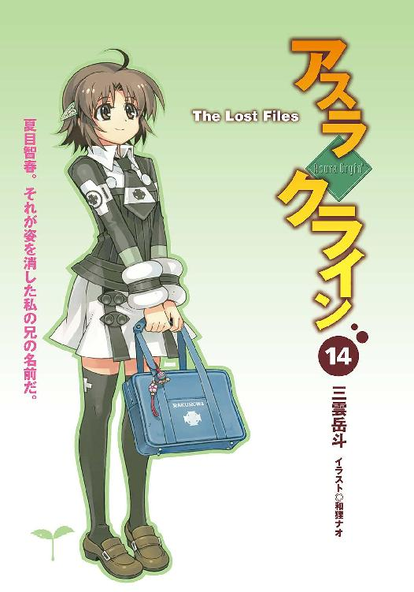
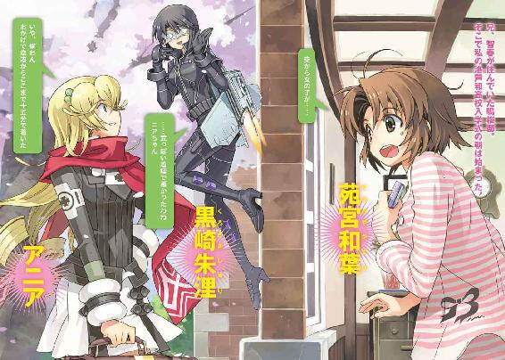
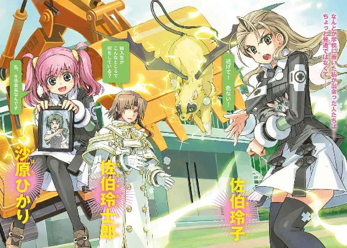
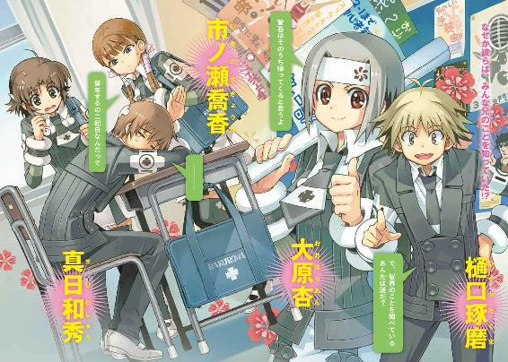
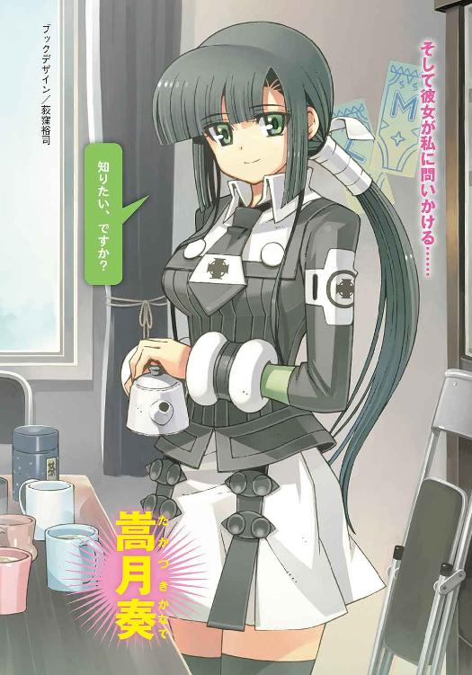
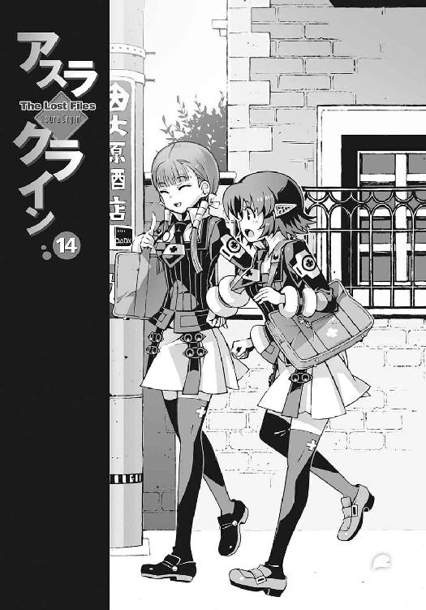
本書（電子版）に掲載されているコンテンツ（ソフトウェア／プログラム／データ／情報を含む）の著作権およびその他の権利は、すべて株式会社アスキー・メディアワークスおよび正当な権利を有する第三者に帰属しています。
法律の定めがある場合または権利者の明示的な承諾がある場合を除き、これらのコンテンツを複製・転載、改変・編集、翻案・翻訳、放送・出版、公衆送信（送信可能化を含む）・再配信、販売・頒布、貸与等に使用することはできません。
φ プロローグ ─Side K ─
夏目智春。それが私の兄の名前だ。
といっても私と彼には血のつながりはない。同じ家で暮らしたこともない。
しかし、たとえばうちの父と、彼の母親の職場が近かったとか。たまたま独身だった二人が、意気投合して、いきなり結婚することになったとか──まあ、そんな感じで。
世の中には成り行きというものがあり、自分の意志とは無関係に、ある日突然、一人っ子に兄が出来るということもあるらしい。
そして兄妹と呼ばれることになった私たちが、初めて顔を合わせた日。
彼が最初に口にした言葉を、私は今も覚えている。
「──幽霊って信じる？」
それは、ちょうど一年前の春の出来事。
あのときなにも答えられなかったことを、私は今も悔やんでいるのだ。
○
──幽霊って信じる？
『あれって、やっぱり、この彼女のことだったのかな』
冷蔵庫の前に突っ立っている私の耳元で、咲華が言った。
私は頼りなくうなずいた。
「......うん」
私たちが眺めていたのは冷蔵庫の扉に磁石で貼りつけた、一枚の集合写真だった。
旅行先で撮影したのだろうか。季節は夏。背景は、どこかの海辺のペンションだ。
高校生の男女のグループが、真夏の陽射しを浴びながら、カメラに向かって笑っている。
なぜか小学生くらいの金髪の女の子や、不細工なコアラのぬいぐるみも写っていたけれど、基本的には、全員、兄と同じ洛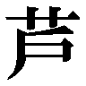和高校の生徒らしい。もちろんその中には彼──夏目智春の姿もある。
そして全身傷だらけで、疲れたような笑顔の彼の背後には、一人の女の子が写っていた。
全体的に色素の薄い感じの、ほっそりした少女である。
『完全に浮いてるよね、この彼女』
咲華が淡々と指摘した。
うん、と私は頼りなくうなずいた。浮いてるといっても、一人だけ場違いな服装をしているとか、そういうことではなくて、文字通りの意味で。
兄の背後に写っている彼女は、重力を無視して、空中をふわふわと漂っているように見えた。
『なんとなく透けてるし』
再び咲華がぼそりとつぶやく。
うん、と私は頼りなくうなずいた。
兄の背後に写っている彼女を透かして、うっすらと背後の景色が見えた。全体的に影も薄い。
明らかに普通の人間の姿には見えない。
だったら何に見えるのか、と訊かれれば、幽霊という答えしか思い浮かばない。
特に驚くことではないのかもしれない。私の兄は中学生のころから、幽霊憑きと呼ばれていたらしい。幽霊憑きの少年の背後に幽霊が浮かんでいるのは、ある意味、普通といえば普通だ。
だから私も、彼女が幽霊だったから驚いていたわけではない。
私の困惑の理由はほかにある。
『可愛い彼女だね』
咲華が感嘆したように溜息をつく。うう、と私は弱々しい呻き声を洩らした。
そう、その幽霊の少女は、ものすごい美少女だったのだ。
髪の毛はふわふわで、色白で、目が大きくて、まるで西洋人形のようだ。そのくせ気取った感じもなくて、人懐こい表情で悪戯っぽく笑っている。
兄はそんな彼女と見つめ合って、何か言葉を交わしている。べつに笑い合っているわけではないのだけれど、そのせいで余計に仲がよさそうに見える。親密という言葉では表しきれないくらい親しげだ。まるで長年連れ添った夫婦のようだ。
それはともかく兄に憑いている幽霊が、これほどの美少女だったというのはショックだった。どうして自分がショックを受けているのか、よくわからないくらいダメージが大きい。
『大丈夫だよ。胸の大きさは似たようなものだから』
「なんのアドバンテージにもなってないよ」
無責任な咲華の励ましに、私は深々と溜息をついた。たしかに幽霊の彼女は胸元も、残念なくらいスリムな体型だったけれど、それについては私も他人のことをいえない。
「この彼女、本当に幽霊なのかな......」
私は独り言のようにつぶやいた。
水無神操緒、というのが彼女の名前だったはずだ。
四年前の飛行機事故で行方不明になった、兄の幼なじみだと聞いている。
けれど写真の中で微笑んでいる彼女は妙に生き生きとして、とても幽霊というような曖昧な存在には見えなかった。兄も、まるで彼女が本当に生きてその場にいるかのように接している。
あのとき、幽霊を信じるか、と訊いた理由。
兄が私に伝えようとしていたのは、彼女の存在だったのだろうか──？
『違うわ』
そして咲華が、唐突に私にそう言った。え、と私は驚いて訊き返す。
『この彼女は、副葬処女の射影体。量子的に投影された疑似感覚入出力デバイス──私に近い存在よ和葉』
「......咲華？ またそんな、私の知らない難しい言葉を......」
まったくもう、と嘆息しながら、私はふと目の前の鏡に目を留める。
そこに映っていたのは、パジャマ姿で朝食のトーストをくわえた私の姿だけだ。
それは部屋の中を見回しても同じだった。この部屋にいるのは私一人。咲華の姿はどこにもない。見慣れたいつもの光景だけれど、やはり少しだけ違和感がある。
そう。ある意味では、咲華の言うとおりだ。
咲華と彼女は、そして私と兄は互いによく似ている。
兄が幼なじみの少女の幽霊に憑かれていたように、私にも咲華が憑いているのかもしれない。
咲華は、私以外の誰にも見えない、私の中のもう一人の人格なのだ──
○
この建物は、鳴桜邸、と呼ばれていた。
レンガ造りの洋館で、かなり歴史のある建物らしい。建築されてから、確実に半世紀以上は経っている。古い、というよりも正直ボロい。幽霊が出ると噂される理由がよくわかる。
私が、そんな不気味な屋敷に住もうと思った理由は、単純だ。ここが兄の下宿だったからだ。
うちの兄は高校に入学する直前から、この下宿で勝手に一人暮らしを始めていた。
そしてそのまま姿を消した。去年のクリスマス直後のことである。
学校に提出された書類によれば、中欧のどことも知れない辺鄙な国に、留学していることになっているらしい。妹の私に何の相談もなく、あの男は、ふらりとこの街を出て行ったのだ。
おかげで私は、兄とはほとんど会話を交わしてないし、数えるほどしか直接顔を合わせたこともない。向こうが私の顔を覚えてくれているのかどうかも、実を言うとあまり自信がない。
正直に言えば、私はそれが気に入らない。
たしかに彼の気持ちもわかるのだ。
母親の再婚が理由とはいえ、見知らぬ女子といきなり引き合わされて、「こいつが今日からおまえの妹だ」といわれても、すんなり受け入れられないのは当然だろう。
だからといって、ろくすっぽ話もしないまま、妹を放り出して海外留学。
どういうことなの、と私は思う。
ともかく、私は兄と話がしたかった。
『ずっと彼のことが好きだったんだもんね』
「えっ!?」
咲華の唐突なツッコミに、思わず私の声が裏返る。
「ち、違うよ！ あの人なら、きっと咲華のことを信じてくれると思ったからだってば。ほら、もしかしたら咲華の正体も知ってて、教えてくれるかもしれないし......！」
『彼のことをずっと捜してたのに？』
冷やかすような口調で咲華が訊いてくる。う、と私は口ごもった。
そう。私は兄のことを、ずっと前から知っていた。私たちが兄妹になる前にも、一度だけ、私は彼に会ったことがあるのだ。だけど、
「向こうは私のことなんて覚えてないよ、きっと......」
そう言って私は頼りなく笑った。
咲華がまだ何か言いたげにしていたので、少し慌てて話題を変える。
「それよりさ......お兄ちゃんって、この家に本当に住んでたのかな？」
『お継母さんはそう言ってたんでしょ』
「うん。それはそうなんだけど」
兄は高校入学と同時に、この古い洋館で一人暮らしを始めたと聞いている。ここの家賃も、彼が払っているのだそうだ。私がここに引っ越したいと言ったとき、両親があまり反対しなかったのも、おそらく、兄がそのうち帰ってくるだろうから、という理由が大きいはずだ。
「だけど、この家って......男の子が一人で暮らしてたって感じじゃないよね」
使いやすく整頓されたキッチン周りを見回して、私はそうつぶやいた。キッチンだけでなくリビングや寝室も、殺風景だが綺麗に片付けられていて、どこか几帳面な印象を受けた。
いちおう兄の私物も部屋に残されてはいたのだが、整然と収納されたそれらの荷物を眺めていると、何だか死んでしまった人間の遺品を見ているような気分になった。
『ていうか、女の子が住んでたみたいな痕跡があったよね』
「うん......」
咲華の指摘に、私はうなずく。どこがどう、というわけではないのだけれど、私も、この屋敷の前の住人は女の子だったんじゃないか、と感じていた。具体的な証拠があるわけではないが、強いて言えば、そんな〝匂い〟がしたのだ。
『交換留学生の子が、一人居候してたんじゃなかったっけ？』
「そう言えば、大家さんのお孫さんが、そんなこと言ってたね」
挨拶に行ったときに出迎えてくれた、女子大生くらいのお姉さんの顔を思い出して、私は、うーん、と腕を組んだ。たしかに、兄の知り合いの外国人が一時期ここに住んでいた、という話を聞いた気がする。
「その留学生って女の子だったの？ まさか、この子じゃないよね......？」
集合写真に写っている、金髪碧眼の少女を指さしながら私は困惑する。不細工なコアラを抱いたその少女は、せいぜい十歳くらいの小さな子どもだったからだ。
まさかね、と私が自分に言い聞かせていると、リビングのほうから突然やかましい音楽が聞こえてきた。ソファの上に置きっぱなしだった、私の携帯電話が鳴っている。
『和葉、電話』
「あ、うん」
パタパタとスリッパを鳴らして、私は電話を取りに行く。携帯のディスプレイに表示されていたのは、私が見慣れた名前だった。
「喬香ちゃん？」
『おはよう、和葉。今、何してる？』
回線ごしに聞こえてきたのは、落ち着いた雰囲気の少女の声だ。市ノ瀬喬香は、中学時代からの私の親友だった。しっかり者で面倒見のいい彼女には、私はいつも助けてもらっている。
「起きてたよ。朝ご飯食べてた」
『自分で作ったの？』
「トーストだけどね。でも、サラダとスクランブルエッグは作ったよ」
『そう。それは偉いね、と言いたいところだけど、今が何時かわかってる？』
「......え？」
喬香ちゃんに言われて私は時計を探した。そして意味もなく目を瞬いた。リビングの壁の時計の針は、午前八時四十分を回ったところだ。
『入学式、九時からだよ』
喬香ちゃんが無情に告げる。私は、呆然と彼女のその言葉を聞いた。たしかこの鳴桜邸から洛高までは、徒歩で十五分ほどだったはず。
「え!? え......!? なんで？ 私、七時前にちゃんと起きたのに......！」
『ぼーっと、お兄さんのことでも考えてた？』
「違うよ。あ、そうだ......冷蔵庫に写真が貼ってあって、それで......」
『お兄さんの写真？』
「だから違うってば。お兄ちゃんも写ってたけど、そうじゃなくて......！」
慌てふためく私の耳元で、咲華がクスクスと笑っている。どうして教えてくれなかったの、と私は咲華に八つ当たり気味に腹を立てる。
『いいから少し落ち着いて。着替えはもう済んでるの？』
喬香ちゃんの冷静な声が聞こえてくる。
「ま、まだパジャマ」
『じゃあ、とりあえずそれ脱いで。制服にすぐに着替えて』
「うん」
言われるままに私がパジャマのボタンをぷちぷちと外し、ズボンを脱ぎ去ったところで、
『あ、着替える前にちゃんとカーテン閉めた？』
「わあっ！」
思いっきり開けっぱなしだったよ、と私は悲鳴を上げた。
慌てて窓際に駆け寄って、窓の死角からカーテンに手をかける。そして私は、無意識に動きを止めた。何か異様な気配を感じたのだ。
『......どうしたの？』
電話の向こうで、喬香ちゃんが訝るような声を出す。しかし私は何も答えられなかった。
ビリビリと窓ガラスが揺れていた。地鳴りに似た振動で大気が震えている。甲高い騒音も聞こえてくる。気のせいなんかではなかった。この屋敷に、何か異変が起きようとしている。
『和葉、上！ 上！』
私の頭の中で、咲華が叫んだ。その声につられて顔を上げ、そして私はそれを見た。
二人組の女の子だった。
一人は洛和高校の制服を着た、金髪碧眼の外国人の少女だ。ドリルビットのような見事な巻き毛で、赤いマフラーをなびかせている。
そしてもう一人は、金属製のマスクで目元を覆った長身の少女。漆黒のボディスーツを着て、背中には巨大なバックパックを背負っている。ステルス戦闘機のような変形デルタ翼と、ジェットエンジンを搭載した飛行用バックパックだ。
青空を背景に、水蒸気の尾を引く彼女たちの姿が、次第に近づいてくるのが見える。
彼女たちは、高速で空を飛行しながら、この鳴桜邸に向かって近づいてくる。
というよりも、落ちてくる。重力に引かれて落下しているのだ。
「きょ、喬香ちゃん、空から......空から女の子が......！」
『は......？』
何言ってるの、と喬香ちゃんが困惑の声を出す。私には彼女に答えている余裕はなかった。空から降ってきた女の子が、地面に激突寸前で逆噴射をかける。バックパックから噴き出した爆風をまともに喰らって、屋敷の中庭に嵐が巻き起こる。
桜の花弁が舞い散り、土煙が舞い上がり、凄まじい衝撃で地面が揺れた。
私は恐怖で携帯電話を落っことし、ぺたんとその場に座りこんだ。
咲華も言葉をなくしている。
無理もない。いったい何が起きているのかさっぱりわからない。
そして、もうもうと立ちこめた土煙がようやく少し晴れたころ、
「......荒っぽい着陸で悪かったわね、ニアちゃん。ベクターノズルの調子が悪かったみたい」
「いや、構わん。おかげで空港からここまで十五分で着いた。どうにか遅刻せずに済みそうだ。礼を言うぞ、朱浬」
「どういたしまして。じゃあ、あたしの本体は先に登校してるから」
「うむ」
背の高いほうの少女が、再びジェットエンジンの咆吼を響かせて飛び立っていき、あとには金髪碧眼の少女だけが残された。
よく見ると、少女は旅行用の大きなスーツケースを抱えていた。スーツケースには国際線の旅客機の手荷物検査シールが貼られていた。空港から送ってもらったようなことを言ってたけれど、まさか彼女たちは、国際空港からここまで飛んできたのだろうか？ すると、鳴桜邸に住んでいた交換留学生というのは、彼女のこと？ だからって何で、空から降ってくるの？
「む......？」
混乱する私の視線に気づいたのか、金髪の少女が不意に振り向いた。
彼女はスーツケースを投げ出すと、勢いよくこちらに走り寄ってきて、私の目の前のガラス扉を開けた。部屋の中をのぞきこみ、どこか希望に縋るような声で叫ぶ。
「智春、帰ってきたのか？ 智春──!?」
そう言って視線をぐるりと巡らせた彼女と、それを見上げる私の目が合った。
彼女の碧い瞳に露骨な失望の色が浮かび、それはすぐに不審者を見るような表情に変わった。
私はパジャマを脱ぎかけの無防備な姿のまま、下着を隠すことも忘れて怯えた表情で彼女を見つめて、
「だ、誰？」
「誰だ？」
ほとんど同時に彼女も私に訊いてきた。その言葉で私は急に冷静さを取り戻し、
「待って、お兄ちゃんのこと知ってるの？」
「お兄ちゃん？ そうか、おまえは......」
私の顔を無遠慮にじろじろと眺めながら、金髪碧眼の少女は何かに気づいたようにそうつぶやき、そして突然ハッとしたように時計を見た。現在時刻は午前八時四十五分。すでに遅刻ギリギリの時間である。金髪の少女は、私にくるりと背中を向けると、そのまま走り出そうとして、
「話はあとだ......ええい、離せ！」
反射的に彼女の巻き毛をつかんだ私を、怒りも露わな表情で睨んだ。
しかし私は手を離さない。
べつに深い考えがあったわけではなく、置いて行かれそうになって焦っただけだ。彼女も洛校生ならば、私たちの行き先は同じはずなのだ。
それに、せっかく兄の行方を知る手がかりが向こうからやってきたのだ。このまま逃がすわけにはいかない、と無意識に思ってしまったのだろう。
それが私の不幸の始まりだった。
いっこうに手を離さない私に業を煮やしたのか、金髪の少女は、小柄な身体を屈めて唐突に白い歯を剥いた。そしてガブリと音を立てながら、尖った犬歯を私の腕に突き立てる。
「痛っ......」
私は、思わず悲鳴を上げて手を離し、その反動で後ろに転倒した。そこにあったのは、水が入ったままのバケツだ。昨日、拭き掃除をしてそのまま水を捨てるのを忘れていたのだ。
雑巾臭い水を全身に浴びながら、私はそのバケツの中に後頭部を突っこんだ。そして身動きがとれなくなったところに、立てかけてあったモップが降ってくる。モップの柄が勢いよく、バケツを直撃。目眩がしそうなほどの騒音が、私の頭の周囲で反響する。
『和葉......何やってるの？』
咲華が、私の頭の中で訊いてくる。
「う......うう......」
私は何も答えずに、ただ弱々しく呻いただけだ。まさか私がわざとやってるとでも思ったのだろうか。そりゃたしかに、お笑いのコントを見ているみたいな、見事に不幸なタイミングだったけれど。
「なんなのよ......もう......」
私がどうにか頭のバケツを外して起き上がったときには、もちろん謎の金髪の少女は消えていた。春の穏やかな陽射しの中、ただ桜の花弁だけが、雪のように静かに散っているだけ──
全身をぐっしょりと濡らした私は、寒気を覚えて、小さくくしゃみをする。
私の洛和高校入学式の朝は、そんなふうにして始まった。
φ プロローグ ─Side T─
僕たちは街を彷徨っていた。
誰もいない、無人の街。道や建物や街灯や樹木......目に映るすべてのものたちが、ガラスのように透き通って、音もなくさらさらと崩れ落ちていく。
空気は冷たく澄んでいる。すべての温もりを失ってしまったかのように。
磨りガラスのような色の空は、ぼんやりと明るい。まるで闇すらもここでは存在を許されていないかのように。
過去も未来も、すべてが消滅していく、非在化の街。
だが悲しくはないし、寂しくもない。
ここは始まることもなく終わった街。すでに消滅してしまった可能性。〝神〟に破壊されるはずだった、存在しない未来の世界なのだから。
そしてその、存在しない未来が、今ゆっくりと非在化しようとしている──
世界の終わりの終わり。僕たちはその中を彷徨っていた。
『見て、智春』
荒涼とした廃墟の街を漂いながら、操緒が空を見上げて言う。
薄ぼんやりと輝いている曖昧な色の空に、無数の流星が降り注いでいる。
「〝神〟の破片か......」
流星の正体に気づいて、僕は小さく溜息をつく。炎に包まれて崩壊した、機械仕掛けの神の破片が、消滅する直前の最後の輝きを放っている。
『綺麗だねー』
緊張感のない笑顔で、操緒が息を吐く。そうだな、と僕はうなずいた。
燃え尽きていく〝神〟の姿にはもう、畏怖も悲壮さも感じない。ただ儚げで美しいだけだ。
あの光がすべて消えてしまえば、おそらくこの世界も消滅してしまうのだろう、
ここは本来は存在するはずのない仮初めの世界。過去と未来の狭間。いずれ夢から覚めるように跡形もなく消えてしまう幻なのだ。
「僕たちもこのまま消えてしまうのかな──」
ふと足を止めて僕はつぶやいた。ここがどこか、どうして自分がこんな世界を歩いているのか、それすらも僕にはよくわかっていない。
自分が生きているのか、もう死んだのか、それすらも。けれど──
『だいじょうぶ、だいじょうぶ』
操緒が、いつもの根拠のない自信に満ちあふれた口調で笑う。
『こうやって前に進んでれば、そのうち戻れるでしょ』
「これって、そういうものなのかな......？」
『そうだよ。それに約束したんでしょ、ちゃんと帰るって』
「まあね」
僕は、自分の足下にすり寄ってきた火蜥蜴の頭を撫でながら、肩をすくめた。そしてまた歩き出す。焦っても仕方がないし、特に行くあてがあるわけでもない。
そうやって僕が歩き続けていると、やがて夕焼けが広がるみたいに、目の前の景色が不意に変わった。
空から降り注ぐ〝神〟の破片。その輝きが、幻灯のように、広大な世界を照らし出していた。
非在化した廃墟の世界ではなく、そこにあったはずの過去の世界を。
それは蒸し暑い初夏の夜の光景だった。
雨上がりの夜空には星が瞬き、風が虫たちの鳴き声を運んでくる。
明るい月を背景に建っていたのは、人気のない巨大な建物の影。それは僕たちが見慣れた洛和高校の校舎だった。
『懐かしいね、この景色』と操緒が言った。
「ああ」と僕はうなずいた。「だけど、これって本当に僕たちが見た景色なのか......？」
『んー......どういう意味？』
「......〝神〟に滅ぼされた世界の残像とか、実現することがなかったべつの世界とか......」
『......失われた世界の記録......』
「え？」
僕は驚いて、淡々とつぶやく操緒の横顔を見た。しかし操緒は何も答えずに微笑んで、
『行こう、智春』
まるで僕を導くように、ふわり、と前に進み出す。
やれやれ、と僕は嘆息し、彼女を追って歩き出した。
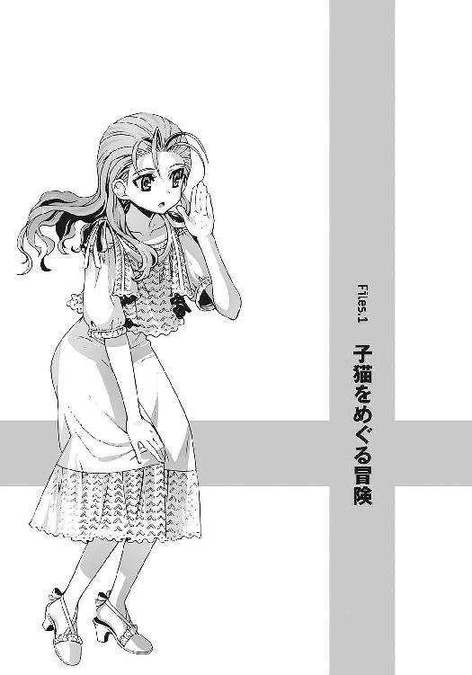
そこは深い穴の底だった。
四方はコンクリートの壁で固められ、這い上がることもできず、身動きさえもままならない。
周囲は闇。夜が更けていくに従って、心なしか気温も下がってきたような気がする。建物の中は完全に無人で、助けを呼んでも誰にも聞こえないだろう。
そんな暗い闇の底に、僕は、彼女と二人きりで閉じこめられていた。
なぜこんなことになっているのか。
僕はうんざりした気分でそれを思い出す。
○
「猫を捜して」
僕と操緒の顔を見るなり、彼女は高圧的な口調でそう言った。
同じクラスの佐伯玲子だった。
勝ち気そうな瞳が印象的な女子生徒だ。好みが別れるタイプだが、とりあえず美少女と評しても文句は出ないだろう。うちの高校の生徒会長の妹で、僕とは中学時代からの知り合いだ。
恵まれた容姿と押し出しの強い性格のせいで、一部の男子には根強い人気があるが、いつも怒っているような印象があって、僕は彼女のことが少々苦手だった。
そのわりに僕は、なぜか彼女に一方的に絡まれることが多いような気がしなくもない。
たとえば、ちょうど今のように。
「そういうことだからよろしくね、夏目」
私服のスカートの裾を揺らして、佐伯妹はそのまま歩き出した。閉ざされた門の隙間を抜けて、薄暗い校庭へと勝手に入っていく。
午後八時を過ぎて周囲は暗く、学校の敷地に人の姿は見あたらない。
遠くの街灯の頼りない光が、不法侵入の佐伯妹を薄ぼんやりと照らしている。
どういうことなのかさっぱりわからない。僕は仕方なく追いかけて彼女の背中に呼びかけた。
「あのさ、佐伯」
「なに？」
「猫ってなんのことだ？」
「......知らないの？ 食肉目ネコ科の哺乳動物よ。英語でCat、学名はFelis silvestris catus、愛玩用またはネズミ駆除用として飼育される。本来は夜行性」
「いや、そういうんじゃなくてさ」
猫がどういう生き物かくらいは、いちおう僕も知っている。
「佐伯って、猫飼ってたんだ？ いつから？」
「一カ月くらい前。知り合いの家に産まれた子猫を引き取ったの」
「その猫がいなくなったのか？」
「......うん。予防接種の帰りに学校に寄って、ちょっと目を離した隙にね」
佐伯妹が深刻な表情でうなずいた。めずらしく不安げに目を伏せる。
慣れない場所に連れてこられた子猫が、興奮して逃げ出したといったところか。なるほど。彼女が心配する気持ちもよくわかる。
『なんでこんな時間に学校に寄ったの？』
不思議そうな表情で訊いたのは、僕の頭上に浮かんでいた操緒だった。
重力の影響をきっぱり無視して、空中を漂っている少女である。色素の薄い身体を透かして、うっすらと彼女の背後の景色が見えている。
操緒は僕の幼なじみだ。三年ほど前の事故で行方不明になって、それ以来、こうして僕に憑いているのだ。すなわち俗にいう幽霊として。
こんな夜の学校で幽霊なんかに話しかけられたら、普通は驚くものだと思うが、
「お兄様に差し入れを届けてたのよ」
佐伯妹は平然と答えた。操緒が人畜無害な存在であることを佐伯妹はよく知っているし、適性やら耐性やら色々あって、うちのクラスの連中はだいたい幽霊には慣れているのだ。
『佐伯ちゃんのお兄さんって、あの生徒会長？』
「そうよ。校内の保安対策で居残ってるの」
『ふーん......大変だね』
心のこもらない口調で操緒が言った。
佐伯兄が所属する第一生徒会の任務は学校内の治安維持で、彼らが仕事熱心なのは事実だが、そのぶん関わり合いになると面倒なことも多い。それでなくても僕たちは、いろいろあって彼らに目をつけられているのだ。できれば連中と顔を合わせる前に帰りたいものだ、と僕は思う。操緒もたぶん同じ気持ちなのだろう。
「それで......逃げた猫は今どこに？」
話の成り行きでいちおう訊いてみる。すると佐伯妹はムッとしたように眉を吊り上げ、
「それを捜して、って言ってるのよ」
「......僕が？」
「最初からそう言ってるでしょ。なんのためにあなたが呼ばれたと思ってたのよ？」
「いや、だから......なんで僕が？」
さっきからそれが疑問だったのだ。バイトを終えて帰ろうと思っていたところに突然電話がかかってきて、わけがわからないまま夜の学校に呼び出されたのである。佐伯妹の飼い猫がいなくなった事情はわかったが、なぜ僕が見ず知らずの猫を捜さなければならないのだ。
「そ......それは......夏目が一人暮らしだから帰りが遅くなっても平気かな、とか......暇そう、とか......」
ごにょごにょと口ごもりながら佐伯妹が説明する。
そんな適当な理由なのか、と僕は小さく溜息をついた。なんとなく失礼なことを言われている気もするのだが、否定できないのが我ながら情けない。
「あと、夏目なら幽霊とか平気でしょ？」
「......幽霊？」
僕は操緒と互いに顔を見合わせながら、眉をひそめた。たしかに一般人よりは多少......いや、かなり幽霊に慣れている自覚はあるが、猫捜しと幽霊になんの関係が？
その疑問に答えるように、佐伯妹は校庭の隅にある古びた校舎を指さした。
「うちの猫が迷いこんだのは、たぶんあそこだから」
「あれって......四号館旧校舎だっけ」
ヤバげな悪霊が出ると噂されている、近々取り壊し予定の廃校舎である。
悪霊とやらは古い学校にありがちな根拠のない噂話だとは思うが、くすんだ煉瓦色の校舎は見るからに不気味で、日没後にはなるべく近寄りたくない場所だ。
「まさか困っているクラスメイトを見捨てて帰るなんて言わないわよね？」
佐伯妹が僕を睨みながら訊いてきた。もしここで断って帰ったら、明日あたり学校中に僕がヘタレだと言いふらしかねない勢いだ。僕はやれやれと溜息をつく。
仕方ない。もともと動物は嫌いじゃないし、子猫に罪はないものな。
「わかったよ。で、捜すのはなんて猫？ なんて呼べばいいんだ？」
「え!? ね、猫の名前ってこと？」
佐伯妹は、なぜか動揺したようにつぶやいた。自らの失策に気づいたように視線を泳がせ、
「ま、まだつけてないけど」
「......ないの？」
僕は軽く驚いた。一カ月近くも飼っていて名前もつけてないのか。飼っているのが一匹だけなら、普通に猫と呼ぶだけで困らないのかもしれないけど。
でも、名前くらいつけてやれよ、と僕は思った。そのときは。
○
夜の廃校舎は想像していた以上に不気味だった。
歩くたびに腐った床板がギシギシと軋み、割れた窓ガラスからは生温い風が吹きこんでくる。少しばかり幽霊に慣れているとか、そんなことは無関係に恐ろしい。
ふと気づくと、佐伯妹が僕のシャツの裾を握りしめていた。
「あのさ、佐伯......歩きにくいんだけど」
「え、あ......ごめん」
そう言いつつ、彼女は僕のシャツを離さない。表情を硬く強張らせたまま、落ち着きなく周囲を見回している。
「もしかして、恐い？」
「そ......そんなわけないでしょ！」
佐伯妹はムキになって言い返してきた。
「暗くて危ないし、はぐれないようにと思っただけよ！」
「そ、そう？」
焦って否定するところがむしろ怪しいが、これ以上は追求しないことにする。足下が暗くて危ないのも事実だ。
廃校舎はそれほど大きな建物ではなかったが、迷いこんだ子猫をなんの手がかりもなく捜し出すとなると、絶望的なくらい広く感じられた。ネコ、ネコと種族名を間抜けに連呼しながら、僕たちは名前のない猫を捜し歩く。と、
『なんかさ、この校舎......ヘンだよね』
突然、場違いなことをつぶやいたのは操緒だった。
「どういう意味だよ？」
『んー、誰か潜んでるみたいな気配がするっていうか......誰かにあとを尾けられてるみたいな』
「は？」
僕と佐伯妹は激しく嫌な表情を浮かべた。
ちょっと待て。なんの嫌がらせだそれは。こんなときに言われても笑えないぞ、その冗談。
しかし操緒は真面目な口調で、
『ほら、来る途中に不気味っぽい絵とか廊下に落ちてたし』
不気味かどうかはわからないが、廃校舎には似つかわしくない高価そうな肖像画が教室に放置されていたのは事実だった。目が動いたりしたら恐いので、なるべく見ないようにしていたのだけれど。だが、それだけで異常というほどでは。
『あ......ほらほら、あんなとこにも人形が』
うげ、と僕は思わず声を漏らした。操緒が指さした方角には、本当に古びた日本人形が置かれていたのだ。表情のない白い顔が闇の中に浮かび上がって、ゾッとするような迫力がある。
なんで廃校舎に日本人形。おかしい。これは明らかにおかしい。
「な、なんなのよ......これ！」
佐伯妹が声を震わせてつぶやいた。そのまま逃げ出すのかと思いきや、彼女は人形の正体を確かめるべく、ずかずかと前に向かって歩き出す。負けず嫌いというか何というか、逆ギレしやすい性格なのだ。
それが今回は裏目に出た。
「えっ......!?」
「あ......！」
腐っていた床板を踏み抜いて、佐伯妹がよろめいた。連鎖を起こした床板が次々に崩落し、彼女は床下へと落下する。僕はあわてて手を伸ばし、佐伯妹を支えようとした。
僕の足下の床板が丸ごと崩れ落ちたのは、その直後のことだった。
○
......まあ、そんな感じで現在に至る、というわけだ。
僕と佐伯妹が落下したのは、どうやら廃校舎の床下のさらに下。建物の土台の部分らしい。コンクリート製の柱と壁に囲まれた、狭くて深い縦穴の底だ。
深いといっても地上まではせいぜい三、四メートルほど。折れた床板がクッションになって、僕たちはたいした怪我もしなかった。しかし自力で脱出を試みるには、少々厳しい深さである。
『だいじょうぶ、智春？』
地上から僕たちを見下ろして、操緒が訊いた。
「まあ、なんとか......」
あちこちぶつけた身体をさすりながら、顔を上げる。と、すぐ目の前に佐伯妹の顔があって驚いた。びっくりしたのは佐伯妹も同じだったらしい。頬を赤く染めながら僕を睨んで、
「ちょ......そんなくっつかないでよ」
「狭いんだから仕方ないだろ」
僕は小声で反論する。
もともと人間が入るように造られた空間ではないのだ。向かい合わせに密着したまま、僕たちはほとんど動けない。互いの呼吸すらはっきり感じられるくらいの距離だ。
もじもじと動揺する僕たちを見ながら、操緒は嘆息し、
『どうする？ 携帯で誰か助けを呼ぶ？』
「そうしたいのは山々だけど、電波入らないんだよ、ここ」
懐中電灯がわりに開いた携帯電話の画面には、無情にも圏外の文字が浮かんでいた。
『んー、そうか。地下だしね。どう？ 自力で出られそう？』
「無理。悪いけど、助けを呼んできてくれ」
『操緒が？ 誰を？』
「いや、この際、通りすがりの人でも誰でもいいよ」
なんか無理なことを言ってるな、と自分でも思った。僕に取り憑いている幽霊である操緒は、僕から離れてあまり遠くまで行けないのだ。そもそも、こんな夜の学校で、幽霊の女の子に助けを求められて、素直に話を聞いてくれる人がいるとは思えない。
「生徒会室まで行けば、お兄様たちがいるはずだけど」と、佐伯妹。
しかし生徒会室は校庭のほとんど反対側で、明らかに操緒の射程距離外だ。
『朝まで待ってれば、登校してきた生徒に声をかけられると思うんだけど』と操緒。
「あ、朝まで!?」
僕は思わず呻き声を漏らした。明日の朝まで助けが来ないということは、佐伯妹と一晩中、こんなふうに密着していなければならないということか。
そんな僕の嘆きを聞きつけ、佐伯妹はむっと眉を吊り上げた。
「なにそれ。あたしといることになにか文句があるの!?」
「いや、不満っていうか、誤解されそうな気がするからさ。誰もいない校舎に朝まで二人でいたなんて噂が流れたら、佐伯だって困るだろ？」
「あ、あたしは......その......困る、わよね......？」
佐伯妹は、なぜか目をそらしながら曖昧にうなずく。
「そんなわけだから、頼む、操緒。なんとか助けを呼んできてくれ」
『んー......まあ、努力はするけどね』
操緒は頼りなく肩をすくめて、ふらふらと外に出て行った。
あとには僕と佐伯妹だけが取り残される。今度こそ本当に二人きりで。
密着状態で薄暗がりで、しかも周囲は異様なほどに静かだ。黙っていると、お互いの些細な身動きや息遣いが相手に伝わるような気がして、ものすごく気になる。
とりあえずなにか言わなければと僕は焦り、
「あのさ、佐伯の猫ってどんなやつ？」
「雑種よ。アメショーっぽい感じのオス。可愛いわよ」
「ふーん」
「なによ自分から訊いておいて、その興味なさそうな声は？」
「いやべつに興味ないってことはないけど」
少し意外に思っただけだ。彼女のような金持ちのお嬢様が飼っているというから、てっきり血統書付きの高価な猫かと思っていた。
だが考えてみると、佐伯妹は、そういうことで猫の価値を決めるような性格ではなかった。
それは人間が相手でも同じことだ。
誰が相手でも遠慮なく文句をつける上に、見境なく偉そうな佐伯妹だが、そのかわり彼女は他人を見た目や肩書きで差別したりしない。たとえば、幽霊憑きの僕に対しても昔から普通に接してくれていたように。
口やかましくて無駄に正義感の強い佐伯妹を疎ましく思っている生徒も多いが、そのわりに彼女がやたらモテるのは、たぶんそういうところが原因なのだと思う。
そんなことを考えて無意識に微笑していた僕を、彼女は怪訝そうに睨み、
「なにがおかしいの？」
「あ、いやべつに。それよりも、寒くないか？」
「え？ あたしは大丈夫だけど......」
言いながら、佐伯妹は自分の胸元に目を落とした。彼女が着ていたのは大きく肩の露出したレース編みのキャミソールだ。この密着した状態から見下ろすと、襟元の隙間からのぞく彼女の胸の谷間が嫌でも目に入ってくる。それに気づいた佐伯妹は、ハッと両腕で胸を隠しながら、
「なに考えてるのよ。いやらしい！」
「ち、違うよ。そんなものを気にしてるわけじゃなくて」
「そんなもの!? そんなものってどういう意味!? なにか文句があるの!? 言っとくけどＢカップは貧乳じゃないからね！」
「いや、僕はべつになにも......」
佐伯妹に上目遣いで睨まれ、僕はやれやれと頭上を仰いだ。操緒のやつ、誰でもいいから早いところ連れてきてくれないかな。
「ねえ、さっきの話だけど」
しばらくして、今度は佐伯妹のほうが口を開いた。
「夏目は、あたしと一晩中一緒にいたって、誰かに知られると困るの？」
「え？」
「たとえば特定の誰かに誤解されると困るとか？ 嵩月さんとか杏とか」
「いや、そういうことじゃないんだけど」
僕が直接困るのではなく、佐伯妹のファンの恨みを買うのが恐いのだ。しかし、本人には自分がモテるという自覚はないらしい。てか、なんでそこで嵩月たちの名前が出てくるんだ。
「そう......ってことは、やっぱり夏目が好きなのは水無神さんなんだ？」
「操緒？」
僕はうんざりと首を振った。幽霊相手に好きも嫌いもないと思うが。
「なんでそうなるんだよ。佐伯だって、生徒会長に誤解されたら困るだろ？」
「いいのよ、あたしは」
佐伯妹はなぜか弱々しく微笑んだ。
「お兄様には、哀音がいるもの。あたしのことなんてべつに」
「哀音って......会長んとこの射影体の？」
射影体とは、操緒と同じタイプの人工の幽霊。機巧魔神の中に封印されている生け贄の少女の分身だ。そして佐伯兄も僕と同様に、その射影体に憑かれている。哀音というのが彼女の名前。かつては佐伯兄妹の従妹だったという、儚げな印象の小柄な少女だ。
佐伯妹が溜息混じりに、口の中だけでボソボソとつぶやいた。
「......たく、なんであたしがいいと思った男はどいつもこいつも射影体のことばかり......」
「え？」
「なんでもないわよ！」
なぜかキレ気味に声を荒げ、そして彼女は小刻みに肩を震わせた。
「佐伯？ やっぱり寒いんじゃ......？」
「違うわよ」
「いや、でも」
震えてるし、と言いかけた僕を彼女は睨んで、
「トイレ」
「は？」
「トイレに行きたいのを我慢してるの！ 鈍いわねっ、そのくらい気を利かせなさいよ！」
「え......いや」
気を利かせるとかそういう問題ではなく、それって実は重大な問題ではないだろうか。いくらなんでも朝になるまで我慢しろ、というのは厳しいし、そんなことをしたら身体に悪そうだ。
だからといって、この狭苦しい穴の底に、隠れて用を足せるような場所があるはずもなく。
「あの......どうしても我慢できないなら、目をつぶってるけど」
「なに言ってるのよ、こんなところで出来るわけないでしょ!?」
佐伯妹が激怒する。うん、まあ、それはそうだよな。
幸いというかなんというか、僕たちの足下には砂利が敷き詰められていて、それほど後始末に困ることはないと思うのだが、そういう問題でもないしな。
しかし、そう言いながらも佐伯妹はそわそわと落ち着き無く身体を揺らし続け、
「......う、後ろ向いて、耳も塞いでてくれる？」
やがて弱々しい声でそう言った。どうやら我慢の限界だったらしい。当分は助けも来そうにないのだから、これは仕方ない判断だろう。
「絶対に誰にも言わないでよ！ あ、あたしがその......こんなところで......」
「言わないよ。生理現象なんだし、困ったときはお互い様だろ」
「う......じゃあ、夏目が先にやって」
「は？」
「あ、あたし一人でそんなことしたら恥ずかしいでしょ。夏目も一緒にやって。そのほうが口止めにもなるし」
「いや......僕はべつに今のとこそういう欲求はないんだけど......」
「うるさい！ いいからさっさと脱ぎなさい！」
「な......ちょ、おまえなにやってんだ!? コラ佐伯......違う、そこは違うから！」
「じたばたするなっ。騒いでも無駄よ、どうせここにはあたしたち以外には誰も......」
佐伯妹が手探りのまま、妙に真剣な表情で僕のズボンを脱がそうとする。
僕たちの頭上から奇怪な足音が聞こえてきたのは、そのときだった。
○
「ひっ......」
そいつの存在に気づいて、僕と佐伯妹は同時に息を呑んだ。
操緒が戻ってきたのかと思ったが、そうではなかった。幽霊である操緒が足音を立てるはずがないし、そいつの姿は操緒とは似ても似つかない。
そいつは、夏だというのに季節外れの長いトレンチコートを着ていた。
そしてヴェネツィアのカーニバル参加者のような、白い仮面で顔を覆っていた。こんな恰好で昼間に街中を歩いていたらただの変質者だが、夜の廃校舎に現れるとなると話は別だ。めちゃめちゃ恐い。噂の悪霊かどうかはともかく、まともな人間でないのは確実だ。
仮面の男は、穴の上から僕たちの姿を無言のまま見下ろしていた。
そして、すっと姿を消す。
「な......なに、今の？」
佐伯妹が震える声で訊いてきた。僕は黙って首を振る。そんなこと訊かれてもわかるはずがない。あいつが、操緒の言っていた怪しい気配とやらの正体なのだろうか？
僕は改めて自分の不幸な体質を呪った。なんで猫を捜しに来ただけで、あんな化け物に遭遇しなければならないのだ。いやしかし......
「もしかして、あいつ、僕たちを助けてくれたりしないかな？」
「なっ!?」佐伯妹が絶句する。「そんなわけないでしょ。あんな変な仮面を被ってうろついてる変質者よ？」
「人を見かけで判断するのはよくないよ。ああ見えて実は心優しい怪物だって可能性も......」
僕がそんな甘っちょろい期待を口にした直後だった。
再び仮面の男が、僕たちの頭上に顔を出す。
無表情な仮面の外見に変化はない。だが、さっきまでと違っていたのは、男の手になにかが握られていたということだった。
槍である。
美術館あたりに飾ってそうな、戦国時代風の古めかしい槍だ。長さは四、五メートル近くあって、余裕で穴の底にいる僕たちに届く。
鈍く輝く槍の穂先を見つめ、男は陶酔したように首を振った。仮面の下から、ししし、と嗄れた笑い声を漏らす。背筋が凍るような笑い声だった。
佐伯妹が、僕に抱きついてきて悲鳴を上げた。僕は声も出せずにいた。
助けてくれるかも、とか、そんなぬるいことを言ってる場合ではなかった。やつは変質者どころか、ただの殺人鬼だ。
「な、夏目......あなたの機巧魔神でなんとかならないの!?」
「悪い、無理。こんな狭い穴の中に 鐵を喚び出したりしたら、僕たちのほうが押し潰される」
鐵を喚び出したりしたら、僕たちのほうが押し潰される」
「それじゃあどうするのよ!?」
「いやそれは......伏せろっ！」
僕はほとんど本能的に佐伯妹を押し倒した。その背中を、仮面の男が突き出した槍の穂先がかすめていった。間違いない。やつは僕たちを殺す気だ。
しかも、こんな狭苦しい穴の中では、ろくに身を隠す場所もない。
それは相手にもわかっているのだろう。仮面の男は、余裕めかして再び槍を構え直した。
僕は佐伯妹と抱き合ったまま、ギリギリと奥歯を食いしばる。
絶体絶命、と思われたそのとき、
『智春っ！』
廃校舎の天井をすり抜けて、操緒が戻ってきた。
「しっ!?」
仮面の男は、その操緒に向けて咄嗟に槍を突き出した。
だが、当然ながらその槍の穂先は操緒の身体をすり抜けた。仮面の男がぎょっとしたように後ずさる。まさか目の前にいる少女が本物の幽霊だとは思わなかったらしい。
その反応で僕たちも気づいた。
仮面の男は悪霊なんかではない。ただの犯罪者。人間だ。
最初はポカンとしていた操緒も、すぐに事情を呑みこんだらしい。ニヤ、と妖艶に微笑んで、男にゆっくりと近づいていった。
「う、うわあああっ！」
絶叫しながら、男は槍を振り回す。もちろん操緒はそれを気にも留めず、平然と微笑み続けている。
狼狽する男の顔から仮面が落ちた。それが引き金になったのだろう。男は槍を投げ捨てると、そのまま操緒に背を向け、情けない悲鳴を上げながら逃げ出していった。
その直後、廃校舎の入口付近から騒がしい音が聞こえてきた。
無数の人間の荒々しい足音。そして男たちの叫び声。発見、とか、確保、とか言っていたように思えたが、遠くてよく聞き取れなかった。
それからなにやら格闘しているような激しい物音が鳴り響き、やがて静寂が戻ってくる。
「な、なんだったの......今の？」
佐伯妹が、妙に幼い可愛らしい声でつぶやいた。僕は、さあ、と首を振る。
その上空では腕を組んだ操緒が、抱き合ったままの僕と佐伯妹を見下ろして、不機嫌そうに頬を膨らませていた。
○
僕と佐伯妹が救助されたのは、それから間もなくのことだった。
助けてくれたのは、第一生徒会の執行部員たち。つまり佐伯兄の部下だった。
「......美術品泥棒、ですか？」
事情を説明してくれた佐伯兄に、僕は間の抜けた声で訊き返す。
僕たちを襲った仮面の男の正体は、このところ国内を騒がせていた美術品窃盗団の一員だったらしい。彼らは盗み出した美術品の隠し場所として、この廃校舎に目をつけたのだ。
犯人が振り回していた長槍。そして僕たちが猫を捜す途中で見かけた肖像画や日本人形も、すべて近くの美術館からの盗品だった。犯人は、盗まれた美術品を目撃してしまった僕たちを抹殺して、口を封じるつもりだったのだ。
「深夜、学校内に部外者が出入りしているという情報は我々の耳にも入っていたからな。警備は強化していたのだが、しかし廃校舎は盲点だった。犯人が悲鳴を上げながら飛び出してこなければ、危うく見逃してしまうところだったよ。感謝しなければならないようだな、夏目智春」
佐伯兄は、いつもの無駄に偉そうな口調でそう言った。
第一生徒会が居残りで保安対策をしている、と佐伯妹が言っていたのは、どうやらそういう理由だったらしい。
「残る問題は、なぜきみが立入禁止の廃校舎の床下で、うちの妹と抱き合っていたか、ということだ。報告によれば救助されたとき、きみはズボンを下ろしかけていたということだが？」
生徒会室のソファに座った佐伯兄が、ふいに目つきを鋭くして僕を睨んだ。
うっすらと漂ってくる冷ややかな殺気に、僕の全身が凍りついた。
なにか激しく誤解されている気がする。僕のズボンを引きずり下ろそうとしたのはアンタの妹のほうなのだが、それを口にしたら、この場で斬り捨てられそうだ。
「......会長」
そのとき生徒会室の扉をノックして、一人の執行部員が入ってきた。
「お話中すみません。先ほど廃校舎内でこのようなものを保護したのですが」
彼の腕に抱かれていたのは、ぬいぐるみに似た小動物だった。
まだ幼い、縞模様の入った灰色の子猫。
あ、と操緒が声を上げ、
『あれじゃない？ 佐伯ちゃんが捜してたネコって』
「ナツメ、か......そうか。きみたちは、玲子に頼まれてナツメを捜していたのか？」
佐伯兄が、驚いたように軽く眉を上げた。
僕と操緒はほとんど同時に訝しげな顔を浮かべ、
「......ナツメ？」
「ん？ その猫の名前だが......？」
佐伯兄は不思議そうに目を細めた。
「知らないで捜していたのか？ もらってきたその日に、この名前がいいと言って玲子が......」
「お兄様っ！」
佐伯兄の言葉を遮って叫んだのは、トイレからダッシュで戻ってきた佐伯妹だった。
彼女は耳まで顔を真っ赤にしながら、ようやく見つかった子猫を抱きしめ、
「......佐伯？」
「な、なによ......」
ううう、と呻きながら佐伯妹が僕を睨みつけてくる。
「いや、そのネコの名前......ナツメって......」
「うっ」
佐伯妹が弱々しく肩を震わせた。言い訳したいが、なにも思いつかない、という表情だ。
「えーと、もしかして夏目漱石からつけたの？ 猫だけに？」
「は......？」
佐伯妹が気の抜けたような声を出す。違ったのだろうか。『吾輩は猫である』は夏目漱石の代表作のひとつだし、てっきりそこから名付けたのだと思ったのだけど。
生徒会室に、なぜか白々とした沈黙が流れた。
なんだこの空気、と僕が困惑した直後、
「そ、そう。そうなのよ。あたし実は文学とか好きだし、やっぱり猫だけにね。おほほほほ」
佐伯妹がそう言って上擦った笑い声を漏らした。
ああ、やっぱり、と僕が納得している間、操緒と佐伯兄は複雑な表情を浮かべて見つめ合い、
『智春って、ときどきホントにニブいよね』
操緒が呆れたように溜息をついた。なにがだよ、と僕は操緒を睨み返し、
「意固地な妹ですまんな、夏目智春」
そして愉快そうに微笑みながら、佐伯兄が僕に告げた。
佐伯妹はなにも言わずに、むっつりとふて腐れたような顔で窓の外を見ている。穴があったら入りたい、というような表情。
「......？」
わけがわからず、僕は黙って首を傾げた。
ネコは佐伯妹の腕の中で、すやすやと気持ちよさそうな寝息を立てていた。
幕間ｉ
結局、私が学校に着いたのは、入学式の開始時刻を三十分ばかり過ぎてからのことだった。
とっくに正門は閉めきられて、校庭にも生徒の姿は見えない。私はうろうろと学校の周りを彷徨って、ようやく開いている通用門を見つけた。
いたたまれない気持ちになりながら、静まりかえった校庭に足を踏み入れる。
『今さら焦ってもどうせ手遅れなんだし、のんびり行けば？』
咲華が他人事のような口調で言ってくる。私は、うう、と低く呻きながら、
「そうはいかないよ。急がないと入学式も終わっちゃう。まだクラス分けも確認してないのに」
『ふうん......でも和葉、自分が今どこにいるかわかってる？』
「......わかってないかも」
私は泣きそうな気分になって立ち止まる。この学校の敷地は、市内の高校としてはかなり広い。校舎も、校内のあちこちに散らばっていて、新入生の私には、正直どこがどうなっているのかよくわからない。正門から普通に登校していれば、まだしもどうにかなったのだろうが、通用口から入ってきたせいで、すでに自分が校内のどのあたりにいるのかさえわからなくなってしまっていた。誰かに道を訊こうにも、入学式真っ最中の校内には、ほかの生徒や教師の姿は見あたらない。そして、
「ひゃっ......!? わっ!?」
がさがさと花壇の植えこみを揺らして、私の足元を何かが走り抜けていく。
それに驚いた私は脚をもつれさせ、ひとたまりもなくその場に転倒した。植えこみのツツジに頭から突っこんで、まだ生乾きだった前髪がぐちゃぐちゃになる。
『大丈夫、和葉？』
「......もうダメかも......」
『怪我はたいしたことなさそうね』
咲華がクールな口調で言った。私はふて腐れた表情で起き上がる。たしかに怪我はかすり傷だけれど、精神的なダメージはけっこう大きかったのに。
「今の何？」
『猫だよ』
「......猫？ 学校の中に？」
『誰かの飼い猫みたい。ほら』
私はのろのろと顔を上げ、私がツツジにダイブする原因を作った生物の姿を見た。縞模様の入った灰色の猫だ。銀色のネームプレートがついた革製の立派な首輪をしている。
私と一瞬目を合わせ、ミャ、と短い鳴き声を洩らすと、その猫は再び駆け出していった。
猫が向かっていった先には、薄汚れた校舎がぽつんと建っていた。
あちこち傷んだボロボロの建物だ。単に古いというだけではなくて、取り壊される寸前の廃校舎に見える。なぜかその校舎のすぐ前に、女子生徒が一人で立っている。
新入生には見えないから、たぶん上級生なのだろう。どこか怒っているような表情だけど、それを差し引いても、なかなか美人だ。お金持ちのお嬢様っぽい雰囲気だ。
さっきの猫は、彼女のほうへと一直線に走っていく。彼女が猫の飼い主なのかもしれない。
校内にペットを連れこんでいいのか、という問題はさておき、上級生に会えたのは助かった。彼女に訊けば、入学式の会場を教えてくれるだろう。
「あの......すみません」
不気味な廃校舎のほうへと近づきながら、私は彼女に声をかけた。灰色の猫を抱いた女子生徒が、少し驚いた表情で振り返る。
そのとき、私の頭の中で咲華がいきなり呻いた。
『なに？ この気配......？』
えっ、と私は表情を強張らせる。こんなタイミングで、なんてことを言い出すのだ。まるで廃校舎の前に立っている彼女が、幽霊か何かみたいではないか。やめてよ、もう。
『違うわ。和葉、彼女じゃない』
咲華が緊張した声音で、そう言った。その直後、
「近づかないで！」
猫を抱いた女子生徒が、険しい表情で私に叫んだ。私は、ぎくりと動きを止めた。なぜ突然そんなことを言われたのかわからない。ただ声をかけようとしただけなのに。
「え......あの......私はそんな怪しい者では......」
とにかく説明しなければ、と私はおろおろと言い訳しようとするが、
「逃げて！ 危ない！」
猫を抱いた彼女が、切羽詰まった表情で私に怒鳴る。
そして彼女のその声を、前触れもなく響き渡った雷鳴のような轟音がかき消した。
ガラスが砕け散る音と、獣の咆吼──
廃校舎の壁を突き破って、巨大な影が姿を現したのだ。
『和葉！』
咲華が私の耳元で叫んでいたが、
「な、なに......なんなの？」
私には何が起きているのかわからない。かろうじて理解できたのは、牛ほどの大きさがある巨大な獣が、凄まじい雷光をまき散らしながら落下してきたということだけだ。
それはアライグマを大きくしたような、どことなく間抜けな姿をしていた。
しかしあまりにもでかすぎた。おまけに全身には青白く輝く稲妻をまとっている。和むどころか単なる恐怖の対象でしかない。そしてその巨大アライグマは、まっすぐに、私のほうへと近づいてくる。もしかしたら、じゃれてるつもりなのかもしれないが、あんな化け物に抱きつかれたら、普通の人間は間違いなく即死だ。
逃げなければ、と思ったときには、もう手遅れだった。逃げ切れない──
「......きゃああああああああああっ！」
そして目の前いっぱいに巨大アライグマの姿が迫り、私が自らの死を覚悟したとき、
「お兄様！」
猫を抱いた少女の声と同時に、私の目の前に何か白い物が現れた。
それは学生服の背中だった。純白の改造学生服の裾を翻し、一人の男子生徒が、私を庇って飛び出してきたのだ。しかも暑苦しいくらいの美形である。
彼は長髪を振り乱し、右腕を高々と掲げると、正面から突っこんでくる巨大アライグマを、まるで闘牛士のように素手で捌いて、そのまま地面に叩き伏せた。
雄叫びを上げる巨大アライグマ。もうもうと立ちこめる土煙。じたばたと四肢を振り回しながら、アライグマは全身から電撃を放つ。しかし純白の学生服を着た男は、平然とその電撃の中で立っている。
『元演操者......！』
咲華が、また何かわけのわからない言葉をつぶやいた。
その声が聞こえたというわけではないのだろうが、白学生服の男は、呆然と立ちすくむ私のほうを振り返り、
「新入生か。こんなところで何をしている？」
巨大アライグマを押さえつけたまま、世間話のような口調で訊いてくる。この人も、どっちかといえば化け物に近い人種らしい。
「えっ、えっ!? その......道に迷って......」
私はへどもどと言い訳する。白学生服の男は、それきり私には興味を失ったように、巨大アライグマのほうへと視線を向けると、
「確保しろ！」
耳元に装着していた無線機のマイクに向かって、そう叫んだ。
次の瞬間、お揃いの白いコートを着た学生たちが廃校舎の陰からわらわらと飛び出してきて、巨大アライグマ目がけて銃を乱射した。どうやら動物捕獲用の麻酔銃らしかった。
麻酔で動きが鈍ったところを、ワイヤーネットに搦め捕られて、ついに巨大アライグマが沈黙する。
「ったく、あのエロ使い魔が......！ 柱谷先生も、いい加減、夫婦喧嘩のたびに生徒に迷惑をかけるのはやめてくれないかしら」
ぶつぶつと愚痴を言いながら、猫を抱いた少女が私に近づいてきた。
近くで見ても、やはり美少女だ。おまけに、どこか不自然なくらいに胸が大きい。余裕でＦカップくらいありそうだ。
「大丈夫？」
頬にかかる髪を払いながら、彼女が訊いた。私はぎこちなくうなずいて、
「あ、はい......あの、なんですか、あれ？」
「キャメロンのこと？」
捕獲された巨大アライグマを一瞥して、彼女が訊き返す。私は、困惑気味に首を傾げて、
「......キャメロン？」
「あれは、えーと......そう、見てのとおりアライグマよ」
彼女は、どこか引き攣った愛想笑いを浮かべてそう言った。
「アライグマ？ あれが!?」
私は唖然として訊き返す。アライグマというのは校舎の壁をぶち破ったり、全身から電撃を放つような危険生物だっただろうか。おまけに、猛牛とか灰色熊くらいの大きさがあるのだが。
しかし猫を抱いた少女は、強引にうなずいて、
「うちの学校の教師のペットなの」
「は、はあ......」
私は呆然とつぶやいた。嘘は突飛なほうが信じやすいと聞いたことがあるが、たしかにここまでツッコミどころが満載だと、何から疑えばいいのかわからない。もうアライグマでいいや、という気分になってくる。
そしてそのアライグマを素手で取り押さえた白学生服の男が、乱れた髪を直しながら、
「囮役、ご苦労だった、玲子」
猫を抱いた少女にそう呼びかけた。少女は一瞬だけ嬉しそうに微笑んで、
「はい。お兄様」
そう言って薄く溜息をつくと、制服の上着の下から何かを取り出した。
それは分厚い三枚重ねの胸パッドだった。どうやら彼女の不自然な巨乳は、そのパッドの賜物だったらしい。私は再び困惑する。どうやら彼女は、あのアライグマをおびき寄せるための囮として廃校舎の前に立っていたらしいが、それと偽乳に何の関係が......？
「きみも、怪我はないか？」
白学生服の男が、私にも声をかけてくる。私は混乱したまま、ぺこりと頭を下げ、
「あ、はい。おかげさまで」
「そうか」
男は表情を変えずにうなずくと、
「我々は洛和高校第一生徒会だ。校内の治安維持を担当している」と名乗る。
「はあ。治安維持......」
高校の生徒会とは、そんなことまでやらされるのか。大変だなあ、と私は素直に感心した。やはり生徒会役員ともなれば、電撃くらいには耐えられるものなのだろうか。
「第一生徒会会長の佐伯玲士郎だ。きみは......」
「あ......そ、苑宮和葉です。入学式の会場を探してたら道に迷ってしまって」
「そうか。では、うちの副会長に案内させよう」
白学生服の男はそう言って、無駄に気取った仕草で、猫を抱いた少女に合図をした。
少女はうなずいて、私を手招きする。
私は少し救われたような気分になって、彼女のほうへと駆け寄った。
これ以上、この第一生徒会長を名乗る男子と関わるのはよくないという気がしていた。単に電撃が効かない非常識な体質だとか、仕草がナルシスティックでキモいとかそういうことではなく、なぜか彼は危険な存在だと感じる。たぶん私と咲華にとって危険なのだ。
悪い人たちではなさそうなのだけど。
「あの......すみません」
入学式が行われているという体育館へと向かう途中、私はおずおずと口を開く。
猫を抱いた少女は、怪訝そうに振り返り、
「なに？」
「もしかして、お兄ちゃ......兄のことをご存じないですか？」
「あなたのお兄さん？ どうして？」
形のいい眉を寄せながら、彼女が訊いてくる。私は声を細くして、
「うちの兄も、今年、この学校の二年生になってるはずなんです。それで......さっきその猫の首輪が見えたから......ただの偶然かもしれないですけど」
「首輪？」
はい、と私はうなずいた。彼女の猫の首につけられた革製の首輪。そのネームプレートの部分には、猫の名前がアルファベットで刻みこまれていた。ナツメ、と。
「うちの兄は、夏目智春といいます」
私のその言葉を聞いて、彼女が驚いたように目を大きくした。
「......夏目の妹？ あなたが......？ あれ、でもさっき苑宮って......」
「はい。その、いろいろと事情がありまして」
私は曖昧に言葉を濁す。彼女もそれ以上は追求しようとはせずに、
「そう。よくわからないけど、苦労してるのね、あなたも」
まるで同情するように、そう言って小さく息を吐いた。
そして彼女は、妙に晴れ晴れと微笑して、
「夏目がどこに行ったのかは知らないけど、そのうち帰ってくると思うわ。あたしとそう約束したから」
「約束......ですか？」
訊き返す私に、うん、と彼女は小さくうなずき、まるで大切な宝物を抱くように、自分の右手の小指をそっと握った。
驚いてそれを見ている私の視線に気づいたのか、そこで彼女は、ハッと我に返って、
「第一生徒会副会長の佐伯玲子よ。よろしくね」
そう言って右手を差し出してくる。
はい、と私はうなずいて、彼女の手をそっと握り返した。
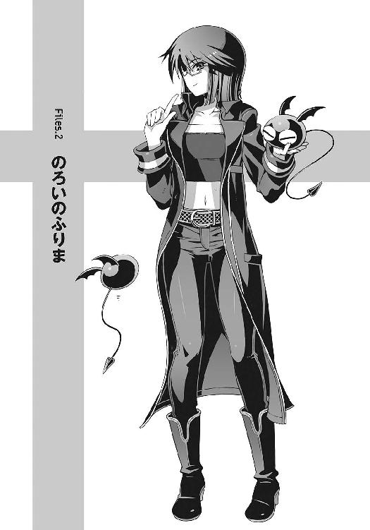
ひそやかに更けていく初夏の夜。
朽ちかけた古い洋館を、月の光が静かに照らしている。
長い歳月で、いい感じにくたびれた煉瓦の壁。飴色に変色した柱。ボロくて見た目ちょっと不気味だが、そのぶん家賃は格安の一軒家。
鳴桜邸と呼ばれるその洋館の一室で、僕は夜空を見上げていた。
ベッドに寝転がる僕の頭上に、音もなく浮かんでいるのは操緒だ。まるで水面をたゆたうように重力を無視して、彼女は何もない虚空をふわふわと漂っている。
ほっそりとした操緒の身体を透かして、月光が音もなく降り注ぐ。
色素の薄い髪を揺らして、彼女はゆっくりと寝返りを打ち、
『んー......月が綺麗だねー』
幽霊らしからぬ、のんきな口調でそう言った。実に緊張感のない声だった。
操緒がパジャマ代わりに着ているのは、学校指定の体操着の短パンと、胸にでかでか『平常心』の文字がプリントされたダサＴシャツ。見た目だけなら月の精霊といわれても信じてしまいそうな美少女なのだが、風情もへったくれもあったものではなかった。ついでにいうと高校生にしては哀れなまでに胸も薄く、色気も不足気味なのだが、まあそれはどうでもいい。
「たしかに綺麗だよな。月はな」
僕は弱々しくつぶやいて、夜空を見上げたまま、ふて腐れたような溜息をついた。
操緒は呆れたように肩をすくめて、
『またそんな暗い顔して。せっかくの満月なんだし、もっと楽しそうにお月見すればいいのに』
空中で器用にあぐらをかきながらそんなことを言うのだが、
「いや、楽しそうにって......無理だろ、これ」
『あ、やっぱり？』
悪戯っぽく微笑んで、操緒は屋敷の天井へと視線を向ける。正確には、かつて天井があったはずの方向に──
そこには天井もなく、梁もなく、採光用の窓もなく、それどころか当然あるべきはずの屋根すらなかった。あるのは焼け焦げた柱の残骸と、ひび割れた屋根瓦。そしてぽっかりと大きく口を開けた空洞と、そこからのぞく澄みきった暗い夜空だけ。
僕の部屋の屋根は半壊して、巨大な穴が穿たれていたのだ。まるで爆撃機の攻撃を受けたみたいな、直径三メートルばかりの大穴だ。ダメージは屋根だけに留まらず、ぶち抜かれた壁は半壊し、室内にはいまだ瓦礫が散乱して攻撃の生々しさを伝えていた。
思い起こせば事の発端は、入学式の前日のこと。
あの日、朱浬さんが持ちこんだ謎トランクを巡って、この屋敷で派手な銃撃戦が勃発した。至近距離からミサイルを撃ちこまれて、この屋敷の屋根はあえなく大破。
さらにその翌月には、手斧を持った殺人人形に襲われ、炎使いの悪魔である嵩月奏が応戦。そこに使い魔と呼ばれる巨大生物が来襲し、機巧魔神を操る学生連盟の武装生徒指導員が現れ、朱浬さんが再びミサイルを乱射して、そのたびにこの鳴桜邸の建物がどこかしら壊れ──
で、結局、今この状態なわけなのだ。
自分でもなにを言っているのかよくわからないが、この建物は、各種勢力の絶え間ない攻撃に晒されて、内戦中の国家の首都のごとく荒廃しているのだった。
なぜ普通の高校生の下宿が、こんな苛烈な扱いを受けなければならないのか。世界平和とは、かくも遠い道のりなのか。
とはいえ、嘆いてばかりもいられないので、僕としてもできる限りの努力はした。破れた窓は段ボールで塞ぎ、大破した屋根は防水ビニールシートで覆った。壁のセメント塗りもやった。しかし所詮は素人の日曜大工。本格的な豪雨や暴風に耐えられるような代物ではない。
この先に控えている梅雨入りや、そのあとの台風シーズンに突入する前に、なんとしても屋根をきちんと修理する必要があった。いちおうバイト先の店長にも頼んで、信頼できる工務店も紹介してもらっている。見積もりだって済んでいる。のだが、
『問題は修理費、だよねえ』
あっけらかんとした口調で操緒が指摘する。
「うん」
『お金ないねえ』
「......うん」
僕は、屋根に穿たれた大穴を眺めて、唇を歪める。ここまで盛大に壊れると、修理費だって半端な金額では済まないのだ。値切りに値切っても二十万円以下ということはないだろう。僕の半年ぶんのバイト代が吹っ飛ぶ計算だ。
穴ごしに広がる満天の星空を、僕は恨みがましい目つきで見上げて、溜息をつく。
どうすんだ、これ。
○
「え、智春の下宿、壊れちゃったの？ なんで？」
翌日の昼休み。教室で机を寄せ合ってサンドイッチを頬張りながら、大きな目を殊更に丸く見開いて訊いてきたのは大原杏だ。
「まあ、いろいろあったんだよ」
購買で買った食パン一斤に、スーパーの特売のピーナッツバターを塗るという、貧乏臭くもコストパフォーマンス抜群の昼食をとりながら、僕はぼそぼそと言葉を濁す。
いくらなんでも、部活の先輩のミサイル攻撃を喰らって屋根が吹き飛んだ、などというロクでもない真実を、一般人のクラスメイトに正直に告げるほどの勇気はない。
しかし言いよどむ僕の態度から、杏はなにかを察したのか、
「ふーん、そうなんだ。すごいね。さすがは幽霊屋敷と呼ばれてるだけのことはあるね」
「いや、さすがって」
深く追及しないでもらえるのは有り難いのだけど、まるで騒霊現象で壊れた、みたいな納得のされ方はどうなのか。ある意味、限りなく正解に近いというのも、ちょっとアレだが。
「でもな、いいバイトを紹介しろって言われてもな......」
杏の代わりに口を開いたのは、同じくクラスメイトの口琢磨だった。授業中に弁当を食べ終えていた彼は、食後の缶コーヒーをすすりつつ、都市伝説の本なんかをめくっている。
「智春って大原ん家の酒屋でも、ほとんど毎日働いてんだろ？ これ以上バイト増やすのは、物理的に無理なんじゃねえの？」
「だからさ、なんか、裏技的な働き口を知らないかと思って」
口の疑問を僕は素直に肯定。ここのところあまりにも出費がかさんだので、バイトのシフトを増やしてもらったのだ。肉体労働なので仕事はきついが、そのぶん時給が高くて賄い付きの、実に有り難い職場である。しかし屋根修理に必要な金額にはまだ遠い。
「なるべく短期でまとまった金が入るようなヤツがいいんだけど。十万円単位で」
「そんな都合のいいバイトなんて聞いたことないなあ。高校生は深夜勤務できないしねえ」
呆れたような表情で杏がつぶやき、口は無責任な口調で、
「黒崎先輩に頼んだら紹介してくれるんじゃないのか。あの人、そっち方面にも詳しいだろ。新薬の人体実験とか病院の死体洗いとか死体運びとか」
「そんなだから朱浬さんには相談したくないんだよ」
死と隣り合わせの仕事の名前が真っ先にあがってくる時点で、すでに何かがおかしいと思う。というか死体洗いのバイトなんて本当にあるのか？ ただの都市伝説じゃなかったのか？
「そうか。だったら小説でも書いて新人賞に応募してみたらどうだ？ 幽霊憑きの不幸少年の実録手記ってことにすれば、そこそこ話題になると思うぜ」
さらに適当なことを言い出す口。しかしその提案には少し惹かれるものがある。小説なんか書いたこともないが、実話ってことならなんとかなるかもしれない。普通に操緒の生態を記録すれば怪談が出来るのだ。ペットの観察日記みたいなものだ。とはいえ、
「それっていつ賞金がもらえるんだ？」
「さあ？ 来年くらいじゃないか？」
「それまで屋根なしで暮らすのかよ!? イヤだよ、絶対」
失望したようにつぶやく僕を見て、口はやれやれと片眉を上げ、
「ったく、贅沢なヤツだな」
「贅沢とかそういう問題じゃないだろ！」
そこで口は、ふとなにか思い出したように、
「そういやバイトってわけじゃないんだが、金を稼ぐ方法なら心当たりはなくもないな。ちょっと危険かもしれないが」
「......危険？」
『どんな方法？ 儲かるの？』
嫌そうに顔をしかめる僕を押しのけるようにして、操緒が訊いた。
「儲かるかどうかは、売り物しだいだな」
『売り物？』
「ああ。市役所の裏手に市民公園があるだろ。野球場近くの。今度の日曜日、そこでフリマが開かれるんだよ」
『フリマ？ って、フリーマーケット？』
操緒が、きょとんと目を瞬いて首を捻る。
「出店の募集はもう締め切ってるんだけど、たいてい何組かはキャンセルが出るから、今から申し込んでもたぶん参加できると思う」
『ほー』
操緒が少し感心したように腕を組み、
「そっか。フリマか。なるほどねー。それなら現金収入だもんね。楽しそうだし。休日潰してバイトするよりいいかもだよ？」
杏も楽しげにそんな感想を述べる。指についたピーナッツバターをなめながら、僕は小さく唇を尖らせ、
「うん。まあ、フリマはいいんだけど、でも、なにを売ればいいんだ？」
「ん？」と怪訝な顔をする口。
「いや、だからフリマで売れそうな金目の物なんて、うちには多分ないと思うんだけど」
そうだねえ、と操緒が思案するような表情になって、
『ん......普通フリーマーケットっていったら、定番は古着だよね。蚤の市っていうくらいだし』
ノミが湧くくらい古くなった服を売りに出す、というのが、蚤の市の語源なのだそうだ。だがしかし、
「いや、さすがに売りに出すほど服は持ってないよ」
『てか、さすがに智春の服は高値では売れないよね。杏ちゃんのパンツとかならともかく』
「それはフリマじゃなくてなんか違う店だろ」
僕は溜息混じりに操緒を睨む。なんでこの幽霊はそういうことを堂々と言うのか。聞いてるこっちのほうが気まずいわ。そして杏は、あはは、と無邪気に笑いながら、
「高値で売れるっていえば、骨董品じゃない？ 食器とか壺とか」
「骨董品......」
ますます一人暮らしの高校生とは縁遠い品だ。しかし杏は、うーん、と首を傾げて、
「智春の下宿ってずいぶん古い建物みたいだけど、ないのかな。骨董品」
「まあ、屋敷そのものが骨董品みたいなものだしなあ。探したらなにか出てきそうな気もするんだけど......だけど勝手に売っていいのか、そんなもの」
「だってお屋敷の修理費にするんでしょ？」
「それはそうなんだけどさ」
「だったらお屋敷の中のものを売っても悪くないと思うんだけど」
「そうなのか？」
疑いのない眼差しで、正論だかなんだかよくわからないことを言う杏。しかし、その理屈はどこかおかしい気がする。
「あと最近は、手作りのアイテムも人気らしいぜ」
読みかけの本を置いて、口が顔を上げた。
「手作りのアイテムって？」
「オリジナルのアクセサリとか、マスコットとかだろ」
「あー、あるね。フリマ出身で有名なプロのデザイナーになった人もいるんだよね」
真面目な表情でうなずく杏。そういえば最近はこのあたりでも、路上で自作のアクセサリや絵画を売ってる人たちをたまに見かける。ああいう人がフリマに出店していても、たしかにあまり違和感はないかもしれない。とはいえ、
『智春、手芸なんか出来たっけ？』
操緒に訊かれて、僕は顔をしかめる。
「できるわけないだろ」
「あとは自作の絵とか、色紙とかも売ってるよね」
杏が、途方に暮れる僕をフォローするようにそう言って、
「色紙？」
「そうそう。ポエムとか書いてるヤツ。〝セカイは美しくなくもない〟とか、そんなの」
『なるほど。自作ポエムかー。そういうこっ恥ずかしい色紙なら、智春にも書けるよね』
どうしようもなく失礼なことを平然と口にする操緒。
「書けないよ！ ていうか、売りたくないし売れないだろそんなもの！」
『じゃあどうするの？ フリマはやめる？』
むくれたように唇を尖らせて操緒が僕を睨み、
「いや......要するに、売り物になるような商品があればいいんだよな......」
僕は窓の外に目を向けながら考えこんだ。中庭、理科教室棟校舎のある方角だ。
『うん。やっぱりポエム書く？』
操緒が妙にうきうきとした表情で訊いてくる。
「だから書かないって！」
僕はうんざりと首を振りながら、残りの食パンを口の中に放りこんだ。
○
「......というわけで、科學部の備品で、フリマに出せそうな不要品があったら譲って欲しいんですけど」
理科教室棟校舎の一階。科學部の部室を兼ねた化学準備室。放課後特有の気怠い雰囲気の中、緊張に一人で声を震わせながら、僕は怖ず怖ずとそう告げた。
僕の対面に座っているのは、モデルを思わせる八頭身体型の美人女子高生。全身を怪しげな黒衣に包んだ、科學部部長代理の黒崎朱浬女史だ。
「話はよくわかったわ」
科學部顧問の化学教師市原の私物コーヒーを勝手にすすりながら、朱浬さんは、にこやかに微笑んでみせた。うふふ、と形のいい唇の端を吊り上げて、
「なかなかいい心がけね、トモハル。見直したわ」
「は？」
いったいなんの話だろう、と僕は操緒と顔を見合わせた。
黒科学の探究、というわけのわからない活動目的を掲げている洛高科學部は、その性質上、怪しげなアイテムを大量に収集して抱えこんでいる。それは非合法すれすれの危険物だったり、あるいは本物の黒科学によって製造された異世界の遺産だったりするわけだが、中には単なるオカルトグッズや、ただのガラクタも少なくない。そういうガラクタをフリマに出品すれば、部室は片づくし、僕も儲かるという一石二鳥の作戦のつもりだったのだが、
「実はあたしも困ってたのよ」
物憂げに流し目をくれながら、朱浬さんが艶っぽい声を出す。
「科學部の部費がそろそろ底をつきかけてて、このままだとちょっとまずいかな......って。ここんとこ武器弾薬を派手に使い過ぎちゃったからね」
「いや、武器弾薬って......」
そもそもそんなものを部活動の予算で買ってる、という時点でなにかおかしいと思うのだが。いったいなんなんだこの学校は。
そして朱浬さんは、ぺろっ、と色っぽく上唇を舐め、
「でも考えたわね。たしかにフリマは、部の活動資金を稼ぐいい機会だわ」
「あの、僕はべつに科學部の予算のために参加するわけじゃなくてですね......」
活動資金ってなんだ。武装ゲリラ組織か、このクラブは。
「わかってるわよ。トモハルはフリマに出店したいけど、手元に売る物がないんでしょ」
「ええと......まあ、そうなのかな」
「だから科學部がフリマで売る品物を用意するわ。それをトモハルが売りさばいて、その売上に応じてバイト代を受け取るってことでどう？」
『ああ......えーと、雇われ店長みたいな感じ？』
僕の肩の上に乗っかっていた操緒が、ふむふむ、と真面目ぶった顔でうなずいてみせる。朱浬さんが再び微笑んで、
「売上は普通に山分けってことでいいわよね。ね、悪くない条件でしょ」
「そうですね。うーん......まあ、それなら」
僕は少し考えこんで、そして重々しく首を縦に振った。
部室で眠ってるガラクタの処分を引き受けた上に、売上までピンハネされるのだから、正直それほど好条件というわけではないよな、と思う。むしろ騙されているような気もするのだが、それでもやはり元手なしで商売できるのは魅力的だ。ここは素直に取引に応じるべきだろう。
交渉成立ね、と朱浬さんはおもむろに立ち上がり、
「ふんふん、フリマで売れそうな不要品ね......なんかこの辺にそれっぽいものがあったような気がするな......そうだ、これなんかどう？」
部室のロッカーを乱暴にこじ開け、なにやらバカでかい木箱を引っ張り出してくる。かなり重量感のあふれる代物だ。どうやら輸入モノらしく、木箱の表面にはアルファベットが無骨に刻印されている。フリマ向けの商品としては、わりと悪くない雰囲気だが、
「なんですか、これ」
「対戦車地雷」
「じ、じらっ......!?」
「条約で禁止になったヤツを安く買い叩いたんだけど、今イチ使い勝手が悪くて、売ってもいいかなって。あ、でも威力は保証するわよ」
「要りませんよそんなの！ 市民公園のフリマで地雷なんか誰が買うんですか！」
それはフリマじゃなくてブラックマーケット向けの商品だ。
「そう？ だったらこれは？ 暴徒鎮圧用の音響爆弾と強行突入用のコンポジション爆薬」
「だからどうして爆薬限定なんですか!? てか、なんで部室にそんな大量の爆薬が!?」
そんなもののすぐ近くで、化学薬品を扱ったり、放課後だらだらコーヒーを飲んだりしてたのか、と思い出してゾッとする。この学校はいろいろ危険すぎるだろ。
「耐用期限が近いから早めに処分したかったんだけどなあ」
拗ねたように頬を膨らませてつぶやく朱浬さん。そんな可愛い表情をされても困るのだが。
「真面目にやってくださいよ。フリマは武器商人の闇市じゃないんですから。捕まりますって」
「はいはい。じゃあ、この辺のアクセサリとか持ってく？」
そう言って朱浬さんが次に取り出したのは、ダイヤル錠つきの金属ケースだった。ケースを開けると、その中に収められていた無数の装飾品の輝きが零れ出す。
『わ、すごい！』
操緒が息を呑む気配がした。僕は絶句して言葉もない。指輪。宝冠。ネックレス。美術館でしか見たことがないような豪華な宝飾品が、安っぽいケースに無造作に収められている。
「これ、宝石じゃないですか。いいんですか、こんな高そうなの......？」
『ニセモノ？』
僕と操緒が声を上擦らせながら質問する。朱浬さんは微笑し、
「本物の宝石よ。ただちょっと、曰くつきの代物ばかりで、前の持ち主が一家惨殺されたり、暗殺されたり、謎の奇病で死んでるだけで」
「思いっきり呪われてるじゃないですか！ なんでそんな物騒なモノしかないんですか!?」
脱力してぐったりと膝を突きながら、僕は喚いた。言われてみれば、隠しきれない禍々しい波動が、その豪華な宝飾品たちから放たれているのがわかる気がした。道理でこれほどの宝石たちが、科學部の部室なんかに眠っているわけだ。
さすがにこれはフリマには出品できない。こんな邪悪な災厄の種を世の中にばらまくのは、いかに貧乏とはいえ僕の良心が許さない。
それにしても返す返す考えが甘かった。ちょっと冷静になればすぐにわかることだ。ガラクタにだって、人畜無害の良いガラクタと、人々に不幸をもたらす邪悪なガラクタがあるのだ。
そして科學部の部室なんかに、市民公園のフリマに出品できるような、まともなガラクタがあるはずがないのだ。こんなところに商品を探しに来た僕は、つくづく浅はかで愚かだった。
そんな感じで、僕が地味に落ちこみ始めたその直後、
「ほーほっほ、まったく呆れた体たらくね、科學部。いえ、黒崎朱浬！」
僕たちの背後から、底意地の悪そうな笑い声が高らかに聞こえてきた。激しく聞き覚えのある声だった。できれば覚えていたくなかった気もするが──
振り返った操緒が目を丸くする。
『あれ？ 六夏会長？』
化学準備室の入口に仁王立ちに立っていたのは、三つ編みおさげにメガネの女子生徒だった。
スカートは膝丈。メガネは黒縁地味メガネ。その髪型と服装だけなら真面目な優等生という印象だが、それは世間を欺く仮の姿だ。本物の優等生は、仁王立ちして高笑いしたりしないのだ。彼女の正体は、第二生徒会会長の倉澤六夏。金のためなら身内でも売るという利益至上主義者たちの親玉である。
彼女の背後には、垂れ耳ウサギを思わせる髪型の小柄な女子生徒。校内美化委員長の沙原ひかりだ。傲岸不遜な六夏をたしなめながら、彼女はぺこぺこと僕たちに頭を下げている。
そんな彼女たちを邪魔くさそうな目つきで一瞥して、
「第二生徒会が、科學部になんのご用です？」
やる気のない口調で、朱浬さんが訊いた。ふふん、と六夏は不敵に笑い、
「話は全部聞かせてもらったわ。夏目智春が市民公園のフリマに出るという噂を聞いて来てみたけど、これじゃあ、わざわざ偵察する価値もなかったわね」
「......偵察？ まさか、第二生徒会もフリマに参加するつもりなの？」
朱浬さんがムッと顔をしかめた。六夏は挑発的に微笑んで、
「さすがに話が早いわね、黒崎朱浬。我々、第二生徒会こと〝巡礼者商連合〟の活動目的は、経済的利益の追求よ。たとえフリーマーケットといえども商業活動の機会がある以上、見逃すわけにはいかないわ！」
「それで、商売敵になりそうな科學部の動向を監視していた、というわけですか？」
「まあそうね。でも、これで科學部が第二生徒会の敵ではないことははっきりしたわ。フリマに出品するのが爆薬と呪いのアクセサリしかないなんて、滑稽を通り越して哀れね、科學部」
僕たちを指さし、嘲るように爆笑する六夏。ひかり先輩が慌てて六夏を取り押さえながら、
「や、やめようよ、六夏ちゃん。失礼だよ」
しかし六夏は、ひかり先輩に押さえこまれたまま、ひいひいと腹を抱えて笑い続け、
「そこまで言うからには、第二生徒会は今度のフリマでは、そうとう売上に自信がおありなんでしょうね、六夏会長？」
朱浬さんが、ゾッとするような満面の笑顔で問いかける。
相対する六夏は、余裕の微笑みで、
「ま、当然ね」
「まさか、科學部なんかに負けるなんてことはないですよね？」
「ないない、あり得ないわ。なんだったら、ここにいるひかりの自由意思を賭けてもいいわよ」
六夏はぞんざいに手を振りながら言い放ち、ひかり先輩がぎょっとしたように、
「え、え......なにそれ......!? そんなの聞いてないよ、六夏ちゃん。自由意思を取られちゃったら、私どうなるの？」
「そんなことには絶対ならないから心配無用よ。それよりも黒崎、そこまで言うならわかってるわよね。もし科學部の売上が第二生徒会に負けた場合には......」
「ええ。そこにいるトモハルの残りの人生は好きにしてくださって結構ですわ」
そう言って投げやりに僕を指さす朱浬さん。僕は喉を引き攣らせて咽せ返り、
「は......!? な、なに勝手に他人の人生賭けてんですか、朱浬さん！ ちょっと！」
そんな僕たちを無視して睨み合う六夏と朱浬さん。
「ふん、交渉成立ね。ま、せいぜい頑張ることね、無駄なあがきを」
「会長こそ、あとで後悔してもしりませんよ」
お互いの表情はにこやかだが、膨れあがる殺気のせいで空気が軋む。間に挟まれた僕たちは、声も出せないまま息を潜め──
そして不意にその圧力が消失した。六夏が踵を返して歩き出したのだ。
『あーあ、行っちゃった......』
立ち去っていく六夏の背中を見送って、操緒が緊張感のないつぶやきを漏らした。
頭の中が真っ白になって動けない僕に、無責任な口調で朱浬さんが、
「まあ、そういうわけよ、トモハル。頑張ってね」
「無茶言わないでくださいよ！ まだ売り物も決まってないのに！」
僕はほとんど半泣きになって叫んだ。しかし朱浬さんはペロリと攻撃的に舌なめずり。
「大丈夫よ。こうなった以上は、科學部が総力を挙げてサポートするから」
「はあ......」
僕はひたすら我が身の不幸を呪う。
そんな僕の目の前で、呪いの宝石たちがギラギラと目の眩むような輝きを放ち続けていた。
○
『おー......けっこう大きな会場だね』
僕の頭上に身体を乗り出して、感心したように操緒が言った。だだっ広い駐車場と緑の芝生だけが広がる殺風景な市民公園は、押しかけてきた大勢の人々で早朝から賑わっていた。
フリーマーケット開始まで約一時間。出店者たちは、それぞれに割り当てられたスペースにゴザやらビニールシートやらを敷いて、自分たちの「店」の飾りつけに余念がない。自作の看板や陳列棚を持ちこんでいる人々もいて、思っていたよりもずいぶん本格的だ。
朝イチで掘り出し物を手に入れようと、開場待ちの列を作っている買い手の姿も見える。
『天気もよさげだし、これならお客さんの数も期待できるんじゃない？』
「二十年以上も前から開催されてる、由緒あるイベントみたいだしな」
事務局からもらったパンフレットを斜め読みしながら、僕は、科學部に割り当てられたスペースを探して歩いていく。地図によれば僕らの場所は、中央の広い通りから少し外れた芝生の上あたり。キャンセル待ちで直前に引き当てたにしては、そこそこいいポジションだ。
「わざわざ遠くから買いに来る常連の客も多いっていうし、まあ、そのぶん出店者も多いから競争も激しいらしいけど」
『そんな弱気なこと言ってないでさ、がんがん売って儲けようよ。人生かかってるんでしょ』
「他人事だと思って気軽に言ってくれるよな......」
僕は虚ろな表情で笑った。今更ながらいろいろ気が重くなってきた。しかし実際、操緒の言うとおりだ。六夏と朱浬さんの賭けのことはともかく、屋根に開いた大穴を塞いで心安らかに梅雨入りを迎えられるかどうかは、今日のフリマにかかっている。ピクニック気分で気軽に出店しているような、楽しげな連中とは違う。こっちにはもう後がないのだ。気合いを入れてかからねばなるまい──
そんな思い詰めたことを考えながら歩いていたせいか、前から歩いてきた誰かとぶつかりそうになって、僕はよろけた。すみません、と反射的に謝ろうとして、相手の顔に見覚えがあることに気づく。僕と同じようにフリマ会場の地図を握って、迷子のように彷徨いながら歩いていたのは、長い黒髪が特徴的な人間離れした美少女だった。
「あれ？ 嵩月？」
「あ......おはようございます」
大きなトートバッグをふたつ抱えた嵩月奏が、少しホッとしたように微笑んで言った。
人見知りで、しかもやたら目立つ容姿の彼女は人混みが苦手だ。見知らぬ場所で道に迷って、心細い思いをしていたのかもしれない。
そんな嵩月の荷物を不躾にのぞきこんで、操緒はちょこんと小首を傾げ、
『もしかして智春のお店を手伝いに来てくれたの？ 朱浬さんに言われて？』
こくり、と小さく首肯する嵩月。
「......これ。差し入れ」
そう言って嵩月が差し出したトートバッグの片方には、手作りらしい弁当の包みと水筒とお菓子が詰まっていた。僕はちょっと感動した。というよりも、過酷なフリマを乗り切るために当然必要なこれらの装備のことを、すっかり忘れていた自分に気づいて少し恥ずかしい。
「ありがとう。すごく助かる。そっちは？」
もうひとつのバッグも持つよ、と手を差し出した僕に、軽いから大丈夫、と嵩月は首を振り、
「売り物。マスコット。黒崎先輩に、なにか用意して欲しいって言われたので」
『マスコットって嵩月さんの手作り？ オリジナル？』
ほほう、と興味津々に身を乗り出す操緒に、嵩月はバッグから握り拳ほどの大きさの人形を取り出して、
「〝あクマー〟です」
『わ！ か、かわい......い？』
フェルト生地で作られたその人形を眺めて、操緒が僕に訊いてくる。疑問形はやめろよ、と思いつつ、操緒が戸惑う気持ちもわかる。それは羽根の生えたクマというかメタボリック気味の悪魔というか、なんとも形容しがたい謎の怪生物だった。素人の手作りにしてはよくできているが、デザインセンスはかなり微妙だ。
「き、気に入ってもらえるといいな、お客さんに」
僕はどうにかそんな無難な感想をひねり出し、
「はい」
あクマーを握った嵩月が、はにかむように小さく微笑んだ。期待に満ちたその笑顔を直視するのが心苦しくなったのか、操緒は空中に浮かび上がって、わざとらしく周囲を見回し、
『んー......朱浬さんたち、この辺で場所取りしてるはずだけど......あ、いた！』
操緒が指さした方角に向かって僕と嵩月も振り返り、
「げっ」
そして僕は息を呑む。オシャレな古着や小物を品良く陳列する常識的な出店者たちに紛れて、遠目にも異彩を放っているスペースが一カ所あった。ゴザの上に積み上げられた、弾薬ケースに似た無数のコンテナ。異国の怪しげな文字が書かれた段ボールや垂れ幕。どこがどう、というわけではないが、紛争地帯の闇市のようないかがわしい雰囲気がプンプンと臭っている。
その弾薬ケースの上に腰掛けていたのは、黒衣に身を包んだ長身の美人女子高生。
朱浬さんは僕たちに気づいて、ひらひらと綺麗に手を振って、
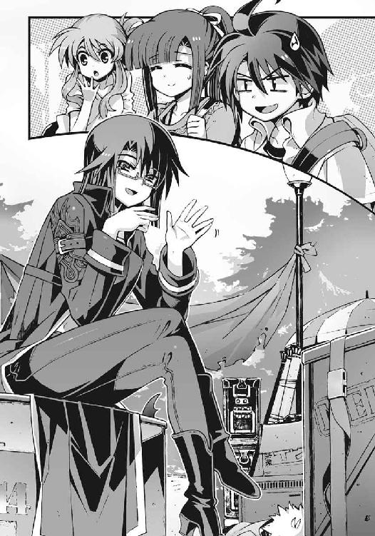
「おはよ。ちょうどよかった。今、荷物が届いたところよ」
『これ、朱浬さんが一人で全部持ってきたんですか？』
彼女の背後に積み上げられた大量の荷物を眺めて、操緒が驚きの表情を浮かべる。
「まさか。口が運んでくれたのよ。一晩かけて」
微笑みながらそう言って、朱浬さんは、足下に転がる屍のような物体を指さした。そこには疲労困憊して息も絶え絶えの口琢磨が、意識をなくして倒れていた。そういえばこいつも、いちおう科學部の部員だったっけか。
このあたりは芝生の上ということで、荷車などの使用は禁止されている。これだけの荷物をたった一人で運びこんだのなら、ぶっ倒れても不思議ではないが。
「口......大丈夫か、おい？」
僕は、青ざめた口の頬をぴたぴたと叩くが、返事はない。まるで本当に屍のようだ。それでも朱浬さんは、少しも悪びれた様子を見せずに、
「意外にヤワだったわね。まあ、午後には復活してるでしょ」
「......つか、こんな大量の商品、いつの間に用意したんですか」
僕はやれやれと嘆息した。どうせ口のアホは、朱浬さんの色仕掛けでいいようにこき使われただけなのだろうが。
『中身はなにが入ってるの？』
警戒心もあらわな表情で操緒が訊く。結局なにを売ることになったのか、僕たちもまだ知らされていないのだ。これだけ大量に運びこんできたということは、朱浬さんにも売れるという自信があるのだろうが、こないだの地雷や呪われた宝石のことを思うと、期待よりも不安のほうが遥かにでかい。手近にあったケースを引き寄せて、僕はその蓋を、えいや、とこじ開け、
「あ......ぬいぐるみ」
ケースの中身をのぞきこんで、嵩月が、ほっと息を吐いた。ぎゅうぎゅうにケース内に詰めこまれていたのは、もこもこの黒いカタマリとしか表現しようのない物体だった。潰れた球体のようなフォルムに、刺々しい羽根と尻尾。そして深紅の瞳がくっついている。好意的に表現すれば、たしかにぬいぐるみにも見えなくはない。
操緒が、むうっと眉間に皺を寄せて訊く。
『なんですか、これ？ 目つきの悪い肉まん？』
「科學部特製オリジナルマスコット〝アクマん〟よ。去年の文化祭用に作ったやつの売れ残り」
『アクマん......て』
全身の気力を奪われたみたいに、操緒がその場にへたりこむ。気持ちはわかる。なんという安直なネーミング。しかも嵩月のマスコットとキャラかぶってるし。
「ここんとこのファスナーはなんですか？」
アクマんの背中に装着されたポケットに気づいて、僕は訊いた。朱浬さんは平然と、
「呪いたい相手の髪の毛をここに入れて、五寸釘で木に打ちつけると願いが叶うのよ」
『うえー......』
操緒が嫌そうに顔を歪める。僕は思わずアクマんを地面に叩きつけたい衝動に駆られ、
「要りませんよ、その機能。どんなマスコットですか。恐いですよ」
「ほかにも女子高生とかが好きそうな呪い──じゃなくて占いグッズを大量に用意してきたわ。今日はこれを売りまくるのよ」
『イヤだなあ、こんなフリマ参加者』
操緒が正直な感想を述べる。僕もまったく同じ気持ちだが、遺憾なことに、これを売るのが今日の僕の使命なのだ。これはなんという罰ゲームだ。
そして、どんよりと沈む僕の気分に、さらに追い打ちをかけるように、
「あら......科學部」
「げ、六夏会長？」
またややこしい人が、と僕は頭を抱えた。今日の六夏は、いつもの三つ編みメガネではなく、本来の姿──ウェーブした髪に、目つきの鋭いチョイ悪系の美貌を晒している。
そして彼女が立っているのは、通路を挟んだ僕たちの正面。同じスペース内にはひかり先輩の姿も見える。どうやらそこが、六夏たち第二生徒会の売り場らしい。
「奇遇ね。まさかこんな近くに、あんたたちの店があるなんて。まあいいわ。これでどちらが商人として格上か、きっちり思い知らせてやることができそうだわ」
対抗心も剥き出しに、僕を指さして宣言する六夏。
朱浬さんは、そんな六夏を嘲るように含み笑いを漏らして、
「ああいう根拠のない幼児的全能感に満ちあふれたタイプって見苦しいわね。あんな上級生になっちゃダメよ、トモハル」
わざと聞こえるような声でそんなことを言う。六夏はキィィと超音波に近い怒声を上げ、
「根拠なくないっての！ 幼児的な精神構造してんのはそっちでしょうが。あんたもそう思うでしょ、夏目智春！」
名指しで問われて、僕は言葉に詰まる。なぜそこで僕を巻きこむのか。しかし六夏は、僕の答えを待たず、
「見なさい、この充実した品揃え。フリマ定番の古着に骨董品、主婦層にも大人気のアイデア雑貨に便利グッズの数々。そしてオリジナルのポエム色紙よ！」
そう言って高々と掲げられた書き殴りの色紙を眺めて、操緒が哀れむように目を細め、
『......うわあ、やっちゃったよ......』
「そこっ、聞こえてるわよ、射影体！」
キィッ、と歯を剥いて唸る六夏。そんな六夏に、朱浬さんが生温かい微笑みを向けて、
「ふふっ、売れるといいですね、会長」
「その上から目線がムカつくって言ってんのよ！」
地団駄を踏んで悔しがる六夏と、それを止めようとしているひかり先輩。彼女たちを無視して、朱浬さんは立ち上がり、
「さ、うちも商品を並べて準備しましょ。とりあえず口が邪魔ね。トモハル？」
「はいはい。とりあえずベンチにでも寝かしてきますよ」
僕は半死半生の口を負ぶって歩き出す。今はまだそれほどでもないが、これから陽が高くなれば気温も上がる。この屍を炎天下に放置するのは、さすがに哀れだ。どこか屋根がある場所が見つかればいいのだけれど。
「大丈夫か、口」
「と......智春か......」
ようやく意識を取り戻したらしい口が、掠れた声で呻く。僕は軽い罪悪感を覚えながら、
「巻きこんじゃって悪かったな」
口は溜息のような音を立てて、弱々しく笑った。
「いや、いい。俺もこのフリマにはちょっと興味があったからな。悪いけど、これ、頼む」
そう言って口は、ポケットから取り出したなにかを僕の腕の中に落とす。口が愛用しているコンパクトデジカメだ。
「カメラ？ なんで？」
怪訝に思って訊き返す僕に、口は途切れ途切れの口調で、
「妖精が現れたら、撮っておいてくれ」
「は、妖精？」
わけがわからず僕は足を止め、
「ああ。フリマ妖精だ......頼む」
まるで遺言のようにそうつぶやいて、口は再び意識を失った。
○
見るからに怪しげな店構えが災いして、フリマ開始後しばらくは誰一人寄りつこうとしなかった科學部の店だが、恐いもの見たさというやつか、そのうちぽつぽつと客が訪れるようになってきた。逆に言えば、そういう客にはオカルト耐性も備わっているわけで、科學部の商品に興味を示してくれる確率も高い。嵩月と操緒の笑顔の接客の甲斐もあって、意外なほど順調に商品が売れていく。
「ありがとうございました」
また一匹、あクマーが新たな飼い主に引き取られていき、嵩月が笑顔で客にお釣りを渡す。操緒もはしゃいだような顔で僕を振り返り、
『意外に楽しいね、フリマ』
「たしかに自分で用意した商品が売れると、ちょっと嬉しいよな」
売れてしまった商品を補充しながら、僕もうなずく。
『だよねだよね。あたし接客業とか向いてるかも』
「いや、幽霊は店員には向いてないだろ」
『なによう。ちゃんと営業スマイル振りまいてるでしょ』
不満げな声を出しながらも、道行く人々に対する笑顔は絶やさない操緒。そのあたりの如才なさは、たしかに評価に値するかもしれない。
僕はホッと一息ついて、
「それにしても口が言ってたフリマ妖精ってなんなんだ？」
『ただのうわごとじゃないの？ 意識が朦朧としてたみたいだし』
「でも、このカメラもそのために用意してたみたいだしな」
売り物と混ざってしまわないよう、ポケットに突っこんだままのデジカメに触れつつ、僕は首を捻る。重度のオカルトマニアの口の言葉だけに、根拠のない妄言とも思えないのだが。
操緒も、ん、となにかを思い出したように顎を上げ、
『そういえば口って、フリマのことを紹介するときにも変なこと言ってたよね？ 危険かもしれない、とかなんとか』
「あ」
たしかにそんなことを言われた気がする。
口のその唐突な警告は、謎のフリマ妖精とも無関係ではないのか。もしかして妖精というのは、このフリマに出没する変質者かなにかのコードネームなのか？
「嵩月はなにか知らないか。フリマ妖精のこと」
客足が途切れたタイミングを見計らい、僕は小声で嵩月に訊いてみる。
「妖精？」
真剣な表情になって考えこむ嵩月。そんなに真面目に悩まれてしまうと、少し申し訳ない気分になってしまうのだが、
「いや、心当たりがなければべつにいいんだけど......」
「あ......」
気遣う僕の言葉を遮って、嵩月がハッと顔を上げた。操緒が驚いて目を瞬き、
『知ってるの!?』
「妖精のことはわからない、けど......悪霊、なら」
『悪霊？』
「なんだそれ？」
操緒と顔を見合わせて、僕は呻く。嵩月は記憶を辿るように瞳を伏せて、
「噂です。昔、一人の女の子が、この会場で売るために手作りの人形を持ちこんだんですけど、あまりにもおぞましい見た目のせいで、最後まで売れ残ってしまって。深く傷ついた女の子は、その人形をこの会場のどこかに捨ててしまった、とか」
『それで、その人形はどうなったの？』
ごくり、と喉を鳴らして操緒が訊いた。嵩月は、ほんの一瞬ためらうような沈黙を挟んで、
「彼女の絶望を吸ったその人形は、このフリマの参加者たちを呪う悪霊になったとか」
「なんて迷惑な......」
思わず本音が僕の口をついて出る。不法投棄に逆恨み。なんとも救いのない話だ。
「あー......その人形は、フリマ出店者の売り物の中にこっそり紛れこんでるそうです。フリマ終了までに人形を誰かに売らないと、その出店者は大変不幸になってしまうとか」
『なんだかありがちな噂だね。まあ、口はそういうの好きそうだけど』
「てか、フリマで売れ残ったくらいで、なんでそこまで......」
気の抜けた声で僕は独りごちるが、それを操緒は半眼で眺めて、
『そうは言っても、フリマの売上に人生賭けてる人もいるしね』
「好きで賭けてるわけじゃないだろ！」
言われてみればそうだった。今日のフリマの売上次第では、僕の残りの人生は六夏に好きにされてしまうのだった。具体的になにがどうなるのかよくわからないが、ロクでもないことになるのだけは間違いない。それは逆恨みもするというものだ。
「でも、やっぱり売れ残ったら、悲しいかも......一生懸命、作ったものだから」
ゴザの上に横座りの嵩月が、陳列されたマスコットを眺めて、ぽつりとつぶやく。
「ああ、そういうのはあるかもな」
『うん。でも、よかったね。嵩月さんの〝あクマー〟意外に売れてるよ。今ドキの若者には、こういうキモカワイイ系が受けるのかもね』
「......意外？ キモ？」
なにげにデリカシーのない操緒の言葉に、嵩月が敏感に反応する。操緒は慌てて、
『あ、いや、キモいというのは、いい意味で。つまりその、下手カワイイというか』
「下手？」
『違うの、そういう意味じゃないの！ あ、そうだ、さっきの人形の話......！』
追い詰められた操緒が、唐突に僕に向かって叫んだ。
「なんだよ、急に」
『嵩月さんのさっきの話。悪霊入り人形。あれって、フリマ出店者が知らないうちに売り物に紛れこんでるんだよね』
「え？」
たしかに嵩月はそんなことを言っていたが、なぜ今それを確認する？
『もしかしてそれって、ウサ耳がついてたりする？ なんか邪悪な感じの』
「はい。ウサギの人形だったそうです。女の子が作ったのは」
やけに具体的な操緒の質問に、嵩月が不思議そうな顔をする。僕はなんとなく恐くなって、
「......操緒？ おまえなにを言って......？」
『や、こんな人形、朱浬さんたちが用意した商品の中にあったかな、と思って』
色素の薄い幽霊の少女は、そう言って僕の足下を指さした。
そういうタチの悪い冗談はやめろよな、と眉をひそめつつ、僕は視線を落とし、
「え？」
「......ウサギの人形......？」
嵩月が、ぽかんと目を開けて固まっている。隙だらけで無防備な、なかなか貴重な表情だが、僕にもそれをのんびり鑑賞している余裕はない。
僕の膝と膝の間に、当然のように転がっているのは、見覚えのないマスコット。ウサギとは名ばかりの凶悪な人相だ。ウサ耳のおかげでかろうじてウサギと判別できるが、大きく裂けた口の中にはホオジロザメの如き鋭利な牙が生え揃い、左目は瞼を縫い合わされて潰れている。
フェルトの表地は薄汚れ、つめ綿もクタクタにへたれて、ひと言で言えば不気味としか形容できない凶悪な代物だ。なぜそんな邪悪なマスコット人形が、僕たちの売り場に紛れこんでいるのか──
『まさか......だよねえ』
操緒が、不安を押し隠すように無理やり明るい声を出す。
あはははは、と僕たちは乾いた声で笑う。
○
正午に近づき、気温が高くなるにつれ、フリマを訪れる客も増えてきたようだった。
人口密度に比例して人々の財布の紐も緩くなるのか、科學部特製の呪いグッズも地道に売上を伸ばしていく。
密かに心配していたアクマんの売れ行きも、想像してたよりはずいぶんマシだ。初夏の眩い陽射しの下では、微妙な造形の悪魔マスコットたちも、ヘタレ系の癒しグッズとして認識されるのかもしれなかった。
にもかかわらず、当然のように売れない商品が約一点。
誰からも見向きもされない、というよりも、むしろ積極的に目を逸らされているのは、もちろん例のウサギ人形である。もしもこれが本当に嵩月のいう呪いの悪霊人形なら、このまま売れ残るとヤバいことになる気もする、のだが、とはいえ積極的に呪いの真偽を試す気にもなれない。なぜなら恐いから。このまま誰かが、なにかの間違いでもいいから買い上げて持ち去ってくれたら、それがベストの結末なのだが、などと消極的なことを僕たちが考えていると、
『あ、帰ってきた』
いつの間にか姿を消していた朱浬さんが、ふらりと売り場に戻ってくる。さすがにこの強烈な陽射しの下では黒コートなんか着こんでいられないのか、肩出しの黒いミニスカワンピ姿。両手にお買い物エコバッグをぶらさげて、普通にフリマを満喫している装いだ。
なんだかなあ、と思わなくもないが、そもそも今回のフリマ参加は僕が言い出したことなので、朱浬さんが売り子を手伝ってくれないことに不満はない。彼女を接客業に従事させるのは、むしろそのほうが不安だし。なので、
「どう？ 売れてる？」
朱浬さんのそんな質問にも、僕はなるべく当たり障りのない笑顔で、
「ええまあ。ぼちぼち」
「ぼちぼち？」
朱浬さんが、ちょっと不満げに眉を寄せる。彼女が不機嫌になる前に話題を変えようと僕は早口で、
「ええ、それよりも少し気になることがあって、あの、実は、このフリマには妖精だか悪霊だかが出るという噂があってですね......」
「ダメよ、ぼちぼちじゃ！」
そんな僕の言葉をきっぱり無視して、朱浬さんが、ずいっ、と顔を寄せてくる。整いすぎた美貌がちょっと恐い。
「は、はい？」
「第二生徒会との勝負、忘れちゃったの？ それとも残りの人生を、あの六夏に捧げる気？」
「いや、それは心底イヤですけど」
「でしょ。ほら、見てご覧なさい、連中のやり口を」
そう言って朱浬さんが指さしたのは、通路の対岸。第二生徒会の売り場スペースだ。
『んー......なんか賑わってるね』
ひょい、と背伸びした操緒が感想を漏らし、
「風船......」
嵩月がぽつりと、その原因を指摘する。第二生徒会の売り場の前で、着ぐるみが子どもたちにヘリウムガス入りの風船を配っていた。著作権的にギリギリな感じの齧歯類の着ぐるみと、風船を目当てに人々が殺到。たまに子どもたちに蹴られたりしながらも、客引きとしての役目を立派に果たしている。
「もしかして......中に入ってるのは、六夏会長ですか？」
着ぐるみ越しにも伝わってくる金儲けへの執着心で、中の人の正体は丸わかりだった。それにしても、この炎天下に着ぐるみとは、身体張ってるなあ、あの人も。
「ああやってガキどもを惹きつけて、その母親たちから小銭を巻き上げようって寸法よ」
親指の爪を噛みながら、憎々しげにつぶやく朱浬さん。
「いやまあ、それはそうなんでしょうけど、もうちょっと言い方というものが」
仲悪いなあ、この人たちは本当に。
「というわけで、こっちも対抗して何かやりなさい」
「そんな、突然なんかやれって言われても」
「いちおう着ぐるみは用意しておいたわ」
そう言って朱浬さんが、エコバッグの中から着ぐるみを引っ張り出してくる。こっちも著作権的にギリギリな感じの全身タイツの宇宙人だ。
「どこから持ってきたんですか、こんなもの」
僕はうんざりと悲鳴を上げて、
「ていうか、この天気で着ぐるみはヤバイですよ。ぶっ倒れますよ。ほら、あっちもふらふらしてるじゃないですか......あ、倒れた」
心配していたとおり、中の人の脱水症状だか熱射病だかで、齧歯類の着ぐるみが転倒する。その骸の上に子どもたちがよじ登り、情け容赦なく飛び跳ねたり、プロレス技を仕掛けたりしている。両足で着ぐるみのヒザを挟みこみ、踵を両手でロックして、身体ごと捻って膝関節を極める。いわゆるヒールホールドが決まって着ぐるみが悶絶。ちなみにその技はあまりにも危険なために、多くの格闘団体で禁じ手に指定されているぞ、子どもたちよ。
「......たしかに、ちょっとまずいわね」
さすがに憐れみの表情を浮かべて、朱浬さんが溜息。
「じゃあ、逆に露出度を高くする方向で行ってみる？ とりあえず操緒ちゃんと奏っちゃんに水着になってもらうとか」
「え？ え？」
『なんで水着なんですか!?』
嵩月と操緒が狼狽して抗議の声を上げる。しかし朱浬さんは柳に風とそれを受け流し、
「手っ取り早く客引きするには水着かな、と思って。イベントコンパニオンっぽいでしょ」
この人の場合、冗談ではなく、本気でそんなことを思っていそうで恐い。さすがに青ざめた嵩月たちが哀れになって、僕は彼女たちの間に割って入った。ここで朱浬さんの企みを阻止しておかないと、最悪、僕まで巻き添えで水着にさせられてしまいそうだ。
「やめてくださいよ。市民公園のフリマに水着の売り子がいたら、お客さんドン引きですよ」
「あ、バニーガールのほうがよかった？」
「だからそういう問題じゃなくて！」
「じゃあこれは？」
そう言って朱浬さんは、エコバッグから新たな小道具を取り出した。マント風のケープと、角と尻尾。小悪魔風の可愛らしいコスプレ衣装だ。
「ハロウィンで使うやつですか？」
激しく季節外れだが、水着よりはまだマシか。
「カボチャマスクもあるわよ」
「どこから持ってきたんですか、こんなものホントに!?」
カボチャお化けのマスクを渡されて、僕は当惑気味にそれを見下ろし、
「さっきその辺のお店で買ったの。部費で」
「部費で......って、商売に来たうちらがフリマで商品買ってどうするんですか！」
落胆してマスクを落っことす僕。これってけっこう高かったんじゃないのか？
『でも、けっこうカワイイかも』
嵩月が試着した小悪魔衣装を見て、操緒が前向きな反応を見せる。嵩月本人もまんざらではない表情だ。朱浬さんが得意げに胸を張り、
「でしょ。うちの商品のイメージにも合ってるし」
「まあ、たしかにこれくらいなら」
全身タイツに比べれば、カボチャマスクのほうがまだマシだ。通気性は悪いが、陽射しを遮ってくれるので差し引きゼロという感じ。
「じゃあ、そういうことで奏っちゃんは耳と羽根と尻尾つけて。智春はカボチャ被って」
「はいはい」
これ以上、朱浬さんの意向に逆らっても得るものはなさそうだ、と僕は渋々と立ち上がる。
嵩月が小道具を着装するのに必要な空間を確保するため、いったんゴザの外に出ようとして、
──ガン。
目の前の壁に顔面から激突。暗転した僕の視界に火花が散る。
なにが起きたのかよくわからなかった。なぜこんなところに壁がある？
『なにやってるの、智春？ パントマイム？』
壁に張りつくような姿勢で動きを止めた僕を、操緒が、呆れたように眺めている。
「違うよ......」
触れているのは、硬い壁の感触。目に見えない透明な壁が、僕の前に立ちはだかっていた。
掌をぺたぺたと押し当てて、壁の存在を触覚で確認。ここにあるのは間違いなく壁だ。存在するはずがない、見えない壁。
朱浬さんが、混乱する僕を眺めて感心したように、
「路上パフォーマンスで客引きというのはいいアイデアね。そういうのはもっと目立つ場所でやってもらわないと」
「だから違いますってば！ ここになにか見えない壁みたいなものがあって、外に出られないんですよ！」
「壁？」
おっとりした表情で、軽く首を傾げる朱浬さん。
『おー、ホントだ』
操緒が僕の真似をして、ぺたぺたと掌で壁に触れる。朱浬さんが表情を少し険しくして、
「どういうこと？」とつぶやいた。
幽霊である操緒は、壁を自由にすり抜ける代わりに、自分から壁に触ることもできない。なのに、その操緒が触れている〝見えない壁〟というのはいったいなんなのか？
「......もしかして、人形の呪い、かも」
ぼそり、と独り言のようにつぶやいたのは、小悪魔コスプレの嵩月だ。操緒がハッと振り返り、
『あ、さっきのフリマ妖精！』
「フリマ妖精？」
朱浬さんが妙に楽しげに訊き返す。
「これです」
投げやりな気分になって、僕は拾い上げたウサギ人形を差し出した。その手が朱浬さんの眼前で見えない壁に激突。指の関節がまとめて靱帯損傷的な激痛を訴えてくる。
そんな犠牲を払って差し出された人形を、朱浬さんは冷ややかに一度眺めたきり、
「そういえばそんな噂、聞いたことがあるわね。誰にも買ってもらえなかった、哀れな人形の悪霊、だっけ？ フリマ終了までに誰かにその人形を買ってもらわないと、取り憑かれた出店者が不幸になるとかって」
「そうです。で、その人形が僕たちの商品に紛れこんでたんですよ」
僕は必死で訴える。ここまできたらもはや疑いの余地はない。こいつは間違いなく口がいうところのフリマ妖精。呪いの悪霊人形だ。
こいつの呪いをどうにかしないと、僕たちはこのゴザの上から出られないらしい。
なのに朱浬さんは、それはそれは嬉しそうに微笑んで、
「なるほど。それはちょうどよかったわね」
「はいぃ？」
「つまりトモハルたちが頑張って、ここにある商品を全部売ってしまえば、なんの問題もないわけでしょ。その不細工な人形も含めてまとめて」
「いや、それはそうですけど」
だけど、アンタ、可愛い後輩が呪われて困っているというのに、いいのかそれで？
「呪いっていってもゴザの上から出られないだけで、商売を続けるには支障はないみたいだし。むしろやる気が出てちょうどいいじゃない」
「なっ......」
「必要なものがあったら、あとで差し入れてあげるから、夕方までに頑張って売ってね」
「ちょ......ちょっと......朱浬さん！」
彼女を引き留めようと伸ばした僕の腕は、見えない壁にまたもや激突。今度こそ深刻なダメージを負って、僕はその場にうずくまる。そんな僕を振り返ることもなく、じゃあね、と手を振って立ち去る朱浬さん。あとには、途方に暮れる売り子三人と、フリマ妖精だけが残された。
○
それから二時間ばかりが過ぎて、激しさを増す一方の陽射しにようやく翳りが見えたころ、
『一時はどうなることかと思ったけど、意外に売れるもんだねー』
心なしか広々としてきた売り場スペースを見回し、操緒が上機嫌な声を出す。
売り尽くさなければ不幸になる、という恐怖と、どのみちゴザの上から出られない、という開き直りが功を奏して、僕たちは、驚異的なペースで商品を売りまくっていた。
もちろん、そのぶん支払った代償も少なくない。手っ取り早く商品を売るには値下げだよ、という操緒の提案に乗せられて、二割引、三割引は当たり前。全商品五割引。さらには赤字覚悟の百円均一セールまで敢行して今に至る、という状況だ。
おかげで弾薬ケースのほとんどは空になり、呪いグッズの在庫も順調に消化。あクマーを陳列していた台の上には、完売御礼の札が揺れている。
「悪魔人形と呪いグッズばかりがこんな大量に売れて......大丈夫なのか、この街の住人は？」
むしろ買い手の精神状態が心配になってしまうのだが、
『みんなシャレで買ってるだけでしょ。売り子もこんな衣装だし』
あっけらかんとした表情で、小悪魔コスプレの操緒が、自分の頭の角飾りに触れる。まあ、そうかな、と僕も納得。実際のところはどうかわからないが、彼女たちの衣装のおかげで足を止めてくれる客が増えたのは事実だ。
そして操緒はふと表情を曇らせて、売り場中央に置かれたウサギ人形を物憂げに眺め、
『問題は、この子だよね』
「だよなあ」
僕もつられて溜息をついた。操緒たちの衣装のおかげで来客数が増えても、タダ同然まで値引いても、こいつを買おうという奇特な客は、いまだに一人も現れていない。むしろ陳列されたほかの商品が減ったぶん、フリマ妖精の邪悪な姿が、さらに存在感を増している気がする。
このままでは、肝心のこの人形だけが売れ残る、という最悪の事態になりかねない。
なんとしてもそれだけは避けなければ、いったいなんのための赤字覚悟の大売り出しなのか。
『もうちょっとこれをどうにかすれば、売れるような気もするんだけどね。嵩月さんの微妙なマスコットでもあんなに売れるんだし』
フリマ妖精をじっと睨んで、操緒が真顔でそうつぶやく。
「び......微妙......」
傷ついた表情を浮かべて、肩を落とす嵩月。僕はフリマ妖精を拾い上げ、
「とりあえず、こいつの見た目をどうにかしてみるか」
『どうにかって、どうやるの？』
詐欺師を見るような疑わしげな瞳で、操緒が僕を見つめてくる。
「とにかく少しでも可愛く見えればいいわけだから......リボンをつけてみるとか」
とりあえず僕は思いつきで、ラッピング用に用意してあったリボンをウサギの胸元に結わえてみるが──
『似合わないね』
「うん」
『リボンというより、そういう色の包帯みたいだよね。腐乱してそう』
「やめてくれ、マジで恐くなってきた」
遺憾ながら、操緒の言葉にはうなずくしかない。なにしろ元の姿が邪悪そのものなので、可愛らしさを強調するリボンのようなアイテムとの愛称は最悪だ。ボディビルダー系のマッチョ男子に、ゴスロリのフリルワンピースを着せたのと同種のキモさがある。似合わないだろうと予想はしていたが、まさかこれほどの破壊力とは。
「あの......目が半開きなのが恐いのかも」
見かねた嵩月が、遠慮がちに僕に助言をくれる。
『あー、それはそうかも』
嵩月の鋭い指摘に同意する操緒。目が半開きだからというよりも、そもそも瞼の上下が縫い合わされている時点で、可愛らしさとはほど遠い感じなのだ。
「たしかになー......嵩月、裁縫道具って持ってる？」
コクリ、と嵩月はうなずいて、携帯用の裁縫ポーチを取り出した。糸切りバサミで慎重に、瞼を縫い合わせている糸を切断し、ほどいていく。そして、
「うっ......」
見開かれたウサギの左目をのぞきこんで、嵩月は怯えたような呻き声を漏らした。もともと左右の目玉のサイズが合っていなかったのか、両目を開けたウサギはおぞましさも五割り増し。経年劣化で変色したプラスチック製の左目は、深紅のラインが放射線状に刻まれ、殺意で血走っているとしか思えなかった。目が合っただけで、こちらまで狂気に呑みこまれそうだ。
『恐っ......恐いよ、このギョロ目。いやああ』
「た、嵩月......やめよう。ぬ、縫い直してくれ」
コクコクと無言でうなずいて、再びチクチクと瞼を縫い合わせる嵩月。
操緒はその場で、ぐったりと頭を抱えこんで、
『もういっそ、顔を隠しちゃえばいいんじゃない？ 智春のカボチャマスクみたいに』
「そう言われても、人形の顔を隠せるようなものって、なんかあったかな......」
『もうこの際なんでもいいよ。そこの紙袋とかで』
「え？ これ？」
操緒が指さしたのは、アクセサリを入れるための小さな紙袋。ちょうど上手い具合にウサギの頭がすっぽりと隠れる大きさだ。僕は試しにフリマ妖精に被せてみるが、
「とりあえず顔は隠れたけど、このままじゃあまりにも不自然だよな......」
『だからさ、元からそういうデザインだったみたいにしてやればいいんだよ。その袋に目とか口とか書いて。そんな感じのマスコットキャラ、ありそうでしょ』
「そ、そうか？」
袋を頭に被ってる時点で、もうまともなマスコットではないような気がするが。
『とりあえず笑顔を描いておけば大丈夫でしょ。可愛くね』
「笑い顔......と......」
僕は嵩月に手渡されたマジックで、紙袋に目鼻と口を描きこんでみる。そして完成した顔を見た瞬間、ヒッ、と嵩月が息を呑む気配がした。操緒がぎゃーっ、と髪を振り乱し、
『恐あっ！ なんか見覚えあるよ、この顔。昔いたよ、こんな殺人鬼！ なんでこんな顔を描いちゃうわけ!? 画才なさすぎだよ！』
「仕方ないだろ！ 下地の人形がでこぼこしてるし、立体物に顔を描くのは難しいんだよ！」
僕は頬を紅潮させながら、紙袋を引きちぎる。
結論、このフリマ妖精を可愛くするのは不可能だ。
『はあ......結局、普通に買い手がつくのを待つしかないか』
操緒が腹立たしそうに溜息をつく。消極的な待ちの姿勢が、とことん嫌いな性格なのだ。
僕も同じように息を吐きながら、
「うーん、結局これって売れなかったらどうなるんだ？ 不幸になる、とか言われても漠然としすぎててよくわからないんだけど」
『この人形の呪いって、このゴザの上から出られないってだけなんだよね？』
ゴザの周囲四方を囲む見えない壁を叩いて、操緒が確認する。
嵩月が控えめにうなずいて、
「命に関わるような重大な呪い、ではないと思います。おそらく呪力の源になっているのは、期待とか不安とか、フリマ会場に集まった人たちの雑念、だから......致命的な呪いを実行するほどの力は、ないはず」
「そうか。もともとそんなたいした怨みでもないもんな。人死にが出たってわけでもないし」
『じゃあ、今日のフリマが終わったら呪いも消えるんだ？』
「たぶん」
それなりに説得力のある嵩月の説明に、僕と操緒は胸を撫で下ろす。そして急に安心したせいか、僕は、今まで忘れていた生理的欲求をふと思い出した。
ぶるっ、と肩を小さく震わせ、落ち着かない気分でそわそわと立ったり座ったりを繰り返し、そんな僕を鬱陶しげに睨んで操緒が、
『どうしたの、智春。急にそわそわして。落ち着きなよ』
「いや、べつに焦ってるわけじゃないんだけど......ちょっと......トイレに行きたくて」
『トイレ？』
操緒は、なにか重要なことに気づいたように頭上に浮かぶ太陽を見上げ、
『フリマが終わるまで、あと四時間くらいあるけど......我慢できる？』
「よ、四時間......か......さすがにそれは......」
僕は、ゴザを取り囲む見えない壁を相手に絶望的なパントマイムを再開する。
「あの......実は、わたしも、ちょっと」
そして嵩月が困ったような顔で右手を挙手。
公園のトイレまでの距離は、せいぜい百メートル足らず。走れば高校生の脚でも十秒ちょいで着いてしまうだろう。しかし今は、そのわずかな距離が果てしなく遠い。
そして遮るもののなにもない、芝生のど真ん中に敷かれたゴザの上には、身を隠す場所などありはしない。周囲にはフリマの来場者が多数。もしこんなところで粗相してしまった日には、その噂はたちまち街中に広がるだろう。そして由緒正しきこのフリマの伝説に、新たな一ページを刻んでしまうに違いない。
操緒が、ハッとなにかに気づいたように、売れ残ったウサギのマスコットを見下ろす。
『もしかして......フリマ妖精のせいで出店者が不幸になるっていうのは......』
膨れあがった膀胱を押さえて、僕は絶叫した。
「これのことかあああっ！」
○
もはや一刻の猶予も残されてはいなかった。晴天の屋外、この季節にしては高い気温にも恵まれて、体内の水分の大半は汗となって蒸発しているが、それを補うためにと、こまめに水分をとったのが裏目に出た。すでに僕の尿意はピークに達して、下腹部が鈍痛を訴え始めている。さっさとフリマ妖精の呪いを解いてトイレに駆けこまなければ、このままでは人としての尊厳だけでなく、肉体的な意味でもピンチだ。
『すごいよ。智春が家から持ってきたガラクタ、完売だよ』
隙間が目立ち始めたゴザの上を見渡して、操緒が感嘆の声を上げる。
「ガラクタ言うな。まあ、値下げしまくったからな......」
とりあえず儲けよりも完売することが最優先だ。採算度外視の値下げが効いて、売れ行きはいまだに衰えない。さすがにそろそろ売り切れの商品も増えてきた。
『科學部の呪いグッズも軒並み売り切れだし、あと残っているのは......』
「......アクマん四個ですね。ありがとうございます......あ、あの、ご一緒に、このマスコットはいかがですか？」
ヌイグルミをまとめ買いしてくれた若い男性客に、嵩月が懸命にフリマ妖精を勧めている。
だらしなく鼻の下を伸ばしていた男性客は、しかし邪悪ウサギの姿を見るなりヒッと顔面を硬直させ、命からがら逃げ出していった。嵩月ががっくりとうなだれて、操緒はゆるゆると長い溜息。
『あれは売れないねえ......』
「売れないよなあ」
嵩月の超絶美貌の天然上目遣いと、魅惑の小悪魔コスプレの威力をもってしても売れないとなると、もはや打つ手が思いつかない。
しかもタチの悪いことに、どうやらフリマ妖精を処分するには、厳密なルールがあるらしい。
タダであげたり、知り合いに押しつけようとしてもダメ。抱き合わせ販売や、ほかの商品の中にこっそり忍ばせてもダメ。そして買い手が呪いの人形だと知っていてもダメ。呪いという付加価値ではなく、あくまでもマスコットとして買ってもらう必要があるらしい。つまりフリマ妖精の呪いを解くには、客が名指しでこのウサギを欲しがらなければならないのだ。
『お客さんも減ってきちゃったし......まずいね』
「ほかの商品が売り切れて、これだけ売れ残ってたら、絶対に誰も立ち寄ってくれないよな」
操緒の言葉に、僕は危機感を募らせる。午前九時から始まったフリマも、そろそろ開始後六時間が経過。太陽もずいぶん傾いて、西の空はうっすらと黄色く染まり始めている。
店をたたんで帰宅の準備を始める出店者たちも増えてきた。フリマ会場にいる客の数も、すでにピーク時の半分を割りこんでいる。このままどんなに頑張っても、凶悪なウサギ人形が売れる気配はゼロ。そのくせ呪いが解ける予兆はまったく感じられず、
「くそっ......もう限界だ」
高まる尿意に耐えかねて、僕はおもむろに立ち上がった。操緒が驚いた顔で振り返り、
『どうするの、智春？』
「強行突破する。呪いだかなんだかしらないが、こんなもの......！」
ゴザを取り囲む見えない壁へと、僕は肩からタックルの構え。中学時代に陸上部で鍛えたスタートダッシュで、一気に加速してぶつかっていくが、
「ぐあ！」
交通事故のような衝撃を喰らって、僕は反対方向へと撥ね飛ばされた。ゴザの上に叩きつけられ、しばらく仰向けのまま苦悶する。
「夏目くん!?」
『だ......大丈夫、智春？ なんか今、すごい音したよ』
不安そうにのぞきこんでくる嵩月たちを、大丈夫、と制止して、
「ぐぐ......僕が出られないというのは、よくわかった。だったら、これならどうだ！」
僕はフリマ妖精をわしづかみに握って、そのまま全力でオーバーハンドスロー。星になれ、とばかりに、ウサギ人形を遠くに投げ飛ばそうとするが、
「ぬあっ!?」
僕が投げつけたフリマ妖精は、見えない壁にぶつかって反撥。全力投球の勢いそのままに跳ね返って、無防備な僕の下腹部に直撃した。僕は声も出せずに悶絶する。
「な......夏目くん？」
嵩月がおろおろと僕を介抱しようとするが、
「......まずい、今の衝撃で......」
漏れ出しそうな水分を抑えこむだけで、僕はもう精一杯だった。もはやこれ以上フリマ妖精と戦うことはできそうにない。そして、
そんな僕たちの悪戦苦闘を、通りすがりの女子高生が呆れ顔で眺めて、
「なに愉快なことやっちゃってるのよ、あんたたち？」
傍迷惑にも声をかけてくる。甘ったるそうな濃縮マンゴージュースのパックをすすっているのは、険のある美貌の悪人面生徒会長。
『あ、六夏会長。身体はもう大丈夫なんですか』
脱ぎ捨てられたままの齧歯類の着ぐるみを見やって、操緒がパチパチと目を瞬いた。
「当然よ。ひかりが頑張ってくれたから、売上だって絶好調よ。ま、今さら後悔して謝ったって許してあげないけどね」
「いや......もう勝ち負けとかはどうでもいいんで......それよりもこれ、買ってくれませんか」
ある意味、千載一遇のチャンスとばかりに、僕は六夏に呪いのウサギ人形を掲げてみせる。
六夏は、けっ、と悪人面をさらに悪役っぽく歪め、
「はぁ？ なんであたしが、あんたたちからモノを買わなきゃなんないのよ。ていうか、なにその気色悪い人形は。タダでくれるっていってもお断りよ。キモッ」
べつに期待はしていなかったが、そこまで言わなくてもいいんじゃないかと思う。
「それよりあたしはトイレに行くところだったのよ。ま、せいぜい頑張って......っと」
ひらひらと投げやりに手を振りながら、六夏はそのまま立ち去ろうとして、
「あ痛っ！」
前方不注意で走ってきた小学生男子と見事に激突。あっさりとバランスを崩したのは、着ぐるみのときに仕掛けられたヒールホールドのダメージが残っていたのかもしれない。
そのまま大きくよろけた六夏は、僕たちの売り場のゴザの上に倒れこむ。
『あ......！』
目を丸くして、その光景を見つめる操緒。六夏は不機嫌そうに土埃を払って立ち上がり、
「なによ、その顔。土足で入っちゃったのは悪かったけど、今のは不可抗力でしょ。すぐに出るわよ。さっきまで客が途切れなくて、トイレずっと我慢してたんだから......って、がっ!?」
がつん、と見えない壁に激突して彼女は仰け反った。
やっぱりか、と僕は目を覆う。六夏も、見えない壁の内側に閉じこめられてしまったのだ。
「な、なにこれ!? どういうつもり!?」
「あ......呪い、です」
まったく事情が呑みこめていない六夏に、嵩月が怖ず怖ずと解説する。
「呪い？」
「フリマ妖精の」
「はああぁ？ ま、まさかこの不細工な人形って......」
呪いのウサギ人形を指さして、六夏はぶるぶると肩を震わせる。どうやら彼女も、フリマ妖精の都市伝説は知っていたらしい。
「じょ......冗談じゃないわよ。あたしはトイレに行くんだから。漏れそうなのよ！」
身も蓋もないことを喚き散らす六夏を、僕は必死になだめながら、
「そういうこと大声で叫ぶのはやめてくださいよ！ こっちだってさっきから困ってるんですから。注目されちゃってるじゃないですか！」
「なにがフリマ妖精よ。こんな不細工なマスコットの分際でっ......」
その僕の腕からウサギ人形を奪い取り、外に投げ捨てようとする六夏。見えない壁にぶつかって弾かれた人形は、当然のように跳ね返って、六夏の下腹部を直撃する。
「お、おおおっ......」
世にも情けない悲鳴を上げて、その場にへなへなと崩れ落ちる六夏。
『だ、大丈夫ですか？』
「ちょっと、これどうしてくれるのよ......なんかないの？ ペットボトルとか？」
青ざめた顔の彼女が、僕の胸ぐらをつかんで訊いてくるが、
「ありませんよ、そんなもの」
ペットボトルをどうする気だ。
六夏はギリギリと歯軋りし、
「もういい。あったまきたわ！ そこをどきなさい、夏目智春！」
「え？ なにをするんです？」
「その人形をぶっ壊すのよ。あたしの翠晶で融かして下水に流してやるわ！」
げえっ、と僕は今度こそ泡を食う。倉澤六夏は僕と同じく、機巧魔神の演操者だ。金属の鎧に覆われた、機械仕掛けの人造の悪魔。あんな化け物を、こんな人混みの中に喚び出されたら、最悪パニックが勃発する。
「やめてくださいよ！ こんな真っ昼間から機巧魔神なんか喚び出すつもりですか!?」
「こんなところで漏らすよりマシよ！ それともあんたはそういう趣味があるの？」
「ありませんよ、そんなもの！ どういう趣味ですか！」
「じゃあ、これなら文句はないでしょ。なんかのパフォーマンスだと思ってくれるわよ」
必死で説得する僕を突き飛ばし、六夏は自分のスカートの下に手を入れる。そして太腿に縛りつけたホルスターから彼女が抜き出したのは、大口径のオートマチック拳銃だった。
ゴザの上に転がるフリマ妖精に向けて、六夏が拳銃の銃口を向ける。
僕と操緒は、固唾を呑んでその光景を見つめる。
「あ......」
そんな六夏の前に立ちはだかったのは、嵩月だった。小悪魔コスプレの衣装のまま、彼女はフリマ妖精を庇うように両腕を広げ、
「やめて......ください」
ちっ、と六夏が舌打ちする。彼女は銃口を嵩月に向けたまま、
「なんの真似よ、嵩月奏？ あなただってこんなところで野ションしたくはないでしょ？」
「............」
緊張感のないセリフだなあ、と僕は思わず脱力する。
嵩月も少し困ったように眉を寄せ、
「この人形の気持ちも......わかるから」
「そんなもんの気持ちなんてどうでもいいわよ。フリマ妖精だかなんだかしらないけど、売り主にも見捨てられた人形の、ただの逆恨みじゃないのよ」
「でも......」
銃口を睨みつけたまま、嵩月は動かない。六夏が引き金に指をかける。トイレを我慢しているせいで、お互いに気が立っているのだろう。余裕のない表情で、六夏が唇を引き攣らせ、
「あの......ちょっとよろしいかしら」
そのとき突然、おっとりと気品のある声が僕たちに呼びかけた。フリーマーケットの客だった。年齢の頃は四十代半ば。いかにも有閑マダムという雰囲気の、裕福な身なりのご婦人だ。
「あ、いらっしゃいませ」
僕はほとんど条件反射で接客を開始し、
「そのマスコットは、まだ売っていただけるのかしら？」
マダムが指さした商品に気づいて、ぎょっとする。
「え？ このブサイク......じゃなくてマニアックな見た目のこれですか？」
「ええ。そのウサギさんよ」
僕の失礼な言葉にも動じず、マダムはにこやかにうなずいた。そんな彼女の態度に動揺したのか、『いちおう売り物ですけど、正直あんまりオススメしないかも......呪いとかあるし』
操緒が正直にそんなことまで説明する。
そして六夏が攻撃的に歯を剥いて、
「悪いわね、おばさん。このふざけた人形は今から解体処分にするところなの。このあたしに楯突いた当然の報いよ」
しかしマダムは毅然とした態度で、
「そこを曲げて、なんとか譲ってもらえないかしら。もちろんそちらの言い値で構わないわ」
「しつこいわね」
六夏が、きしゃあああ、と怪鳥音を発するが、
「あ、いや......買ってもらえるのなら嬉しいです。値段なんていくらでも。タダ......はまずいんですけど、もう好きな金額で」
僕は六夏を押しのけ、慌ててフリマ妖精を差し出した。操緒も目一杯の営業スマイルで、
『そうそう。十円でも一円でも外貨でも』
「そう。では、爺や。彼らにチェックを」
マダムは満足そうにうなずいて、背後に控えていた従者を呼び、
「はい、奥様」
差し出された小切手と引き替えに、僕は彼女にウサギ人形を手渡した。マダムは感慨深げな表情で、古びたその人形を受け取ると、
「ようやく......見つけたわ。長かった」
そうつぶやいて、懐かしそうに目を細める。
あまりにも呆気ない幕切れに、僕は所在なく立ち尽くしていた。売買は成立し、フリマ妖精は引き取られていった。人形の呪いは解けたのだ。
「呪いが解けた!?」
その事実に気づいて、六夏がハッと顔を上げた。その眼前を、ふわりと黒髪を翻し、疾風のような速度で嵩月が駆け抜けていった。いつの間に靴を履いたのか、ゴザの上から飛び出していった嵩月は、そのまま公園の女子トイレへと消えていく。涼しげな美貌のせいでわからなかったが、彼女もけっこうギリギリだったのかもしれない。
「あ......ちょっと、待ちなさい、嵩月奏！ あたしが先よ......ぐ......！」
もたもたと拳銃をしまいながら、嵩月のあとを追いかけていく六夏。
ふと気づくと、人形を買ったマダムの姿は、もうどこにも見あたらなかった。
『なんだったんだろう......あの人』
ようやくゴザの上から解放された操緒が、背伸びしながら訊いてくる。
「よくわからないけど......なんにしても売れたんだからよかったんじゃないかな」
そう言って僕は、マダムから受け取った小切手を眺める。小切手に書きこまれている数字は千。あの不細工な人形の代金が千円なら、まあまあいい商売だったのではないだろうか。
『って、智春......これ、千円じゃないよ！』
そして操緒がゲホゲホと咳きこみながら、上擦った声で叫んだ。
「え......？」
『ドルだよ、千ドル！ 十万円くらい！』
「じゅうまん......!?」
小切手を握りしめたまま、僕は全身を震わせた。フリマ妖精。呪いのウサギ人形。そして有閑マダムと十万円の小切手。
「なんだったんだ、あの人......？」
僕のつぶやきに、操緒は黙って首を振る。
すでに決壊寸前の尿意のことも忘れ、初夏の夕陽に照らされながら、僕はいつまでも立ち尽くしている──
○
「というわけで、フリマ売上勝負は、科學部の圧勝だったわけですけど......」
翌日の月曜日。放課後の化学準備室には、六夏とひかり先輩の姿もあった。とりあえず六夏の目的は、例のフリマ売上勝負の決着をつけるため、だったのだが、
「く......あの変なおばさんがいなければ、うちのほうが勝ってたのに......」
思いがけない敗北を喫して彼女は半ば放心状態だった。まさかあのフリマ妖精に一千ドルも支払う人間がいるとは、当然、予想していなかったのだろう。僕だってそんなのは想定外だ。
一方の朱浬さんは、これまで見たこともないような上機嫌な笑顔で、
「うふふ。あの変なポエム色紙がなければ、危ないところでした」
「変じゃないわよ。ちゃんと売れたわよ、二枚も！」
キイィと金切り声を上げて、六夏が必死に反論する。
「まあいいわ。負けは負けよ。ひかりの自由意思は好きにすればいいわ。でも、言っとくけど、ひかりの心を手に入れたからって身体まで自由にできるとは思わないことねっ！」
「それ、普通は逆だよ......六夏ちゃん......」
ひかり先輩が、小声で六夏をたしなめる。もともと小動物っぽい雰囲気の美化委員長は、今やドナドナされる仔牛のような表情で、ビクビクと僕たちの出方を窺っている。勝手に六夏と朱浬さんの賭けの賞品にされてしまった彼女は、ある意味、今回のいちばんの被害者だ。
僕は本気でひかり先輩に同情して、
「もういいですよ、勝ち負けとかはべつに。とりあえず無事に帰ってこられただけで」
「そうね。あたしも会長の悔しがる顔が見れたから満足よ」
意外なことに朱浬さんも、あっさりと勝者の権利を放棄した。むしろそのほうが六夏のダメージがでかいと計算していたのかもしれない。その証拠に、六夏は屈辱に頬を赤く染めながら、わなわなと肩を震わせている。
「くっ、この女......」
うふふ、と満足そうに笑う朱浬さん。僕は無言で溜息をつく。
『ところで、ひかり先輩。さっきから気になってたんですけど』
そして唐突に質問したのは操緒だ。操緒が見つめているのは、ひかり先輩の携帯電話に結びつけられたストラップ。そこには肉食獣のような歯を剥いた、可愛くないウサギのフェルト人形が揺れている。
『そのストラップって......なんですか？』
「あ、これですか？ これはヨーロッパで人気のブランドのマスコットで......アンゴラーっていうんですけど」
『アンゴラー？』
操緒がムッと顔をしかめる。アンゴラうさぎがモデルなのかもしれないが、あまりセンスのいい名前とは思えない。というよりも、このデザイン自体が悪趣味だ。まるでフリマ妖精をコピーしたような邪悪なシルエット。
「これって......」
「デザイナーは日本人なんですよ。ほら、この人です」
そう言ってひかり先輩は、カバンの中からファッション雑誌を取り出した。有名ファッションデザイナーのインタビュー記事。その写真に写っていたのは、忘れるはずもない、フリマ妖精を一千ドルで買っていった有閑マダム──
「えーと......人気キャラクター、アンゴラーのモデルになったのは、若いころにフリマに出品したオリジナルのマスコット？ 結局売れずに捨ててしまったけれど、もしもできることなら取り戻したい......？ 日本では売れなかったけれどヨーロッパでは認められた？」
マダムのインタビュー記事を読み上げながら、僕は小刻みに肩を震わせる。もし二十年前のフリマ会場でウサギのマスコット人形を拾った人がいたら、ぜひ名乗り出て欲しい──そんな言葉でインタビュー記事は締めくくられていた。
あのウサギの人形を作ったのはこのマダムで、そして彼女は、かつて捨ててしまった人形をもう一度取り戻すためにフリマの会場を訪れていた、というのか？
『つまりフリマ妖精を生み出した犯人は......』
「こいつかあああっ！」
僕と操緒と倉澤六夏が、声を揃えて絶叫する。
驚きで硬直した小動物のような表情で、ひかり先輩は呆然とそれを眺めている。
○
そして六夏たちが化学準備室を出て行った直後、
「で、これが山分けした今回の利益の、智春たちの取り分よ」
「え......？」
朱浬さんに手渡された封筒を受け取って僕は絶句する。
封筒の中身は五十円。わざわざ数え直す必要すらなかった。五十円玉が一枚きり。
「......たったこれっぽっちですか？」
『完売したのに？』
唖然として訊き返す僕と操緒に、朱浬さんは絶対零度の視線を投げかけ、
「あんたたちが採算度外視して、商品を全部タダ同然で投げ売りしたからでしょうが。アクマんの仕入れにいくらかかったと思ってるの。奏っちゃんのマスコットと、最後の小切手がなかったら大赤字よ。儲けが出ただけでもよかったでしょ」
僕と操緒は凍りついたように沈黙。そういえばフリマ後半は利益のことなど忘れて、メチャメチャな値引きをした記憶だけが残っている。
しかしあれはフリマ妖精の呪いによる不可抗力で──
「あんな苦労して、五十円とか......」
『もしかしてこれが本当のフリマ妖精の呪いだったりして？』
操緒の言葉に、僕は力のない笑みを浮かべる。
都市伝説によれば、フリマ妖精を誰かに買ってもらわなかったフリマ出店者は不幸になる、らしいが。しかし、フリマ妖精を誰かに売りつけることができたからといって、不幸にならないとも限らないのだった。
「で、あなたたち、鳴桜邸の屋根の修理費はどうするの？ 来週も隣町でフリマが開催されるみたいだけど......出る？」
気怠げに頬杖をついたまま、朱浬さんが、少し愉快そうに訊いてくる。
僕は怒りに両腕を震わせ、初夏の空に向かって絶叫した。
「フ......フリマなんか......呪ってやるっ！」
幕間ii
佐伯妹先輩に案内されて、私がどうにか体育館前に辿り着いたとき、入学式の会場では校長先生の長い挨拶が、佳境を迎えているところだった。ありがとうございました、と言って先輩と別れて、私は体育館の入口に立ち尽くす。
整然と並んだ新入生たちは息を殺して静まりかえっており、今頃のこのこと入っていったら目立ちまくって仕方がない。会場までやってきたのはいいが、これでは式が終わるまで中には入れそうになかった。
どうしよう、と私が途方に暮れていると、
『式が終わるまで、どこかこの近くで待ってたら？』
咲華が見かねたように投げやりなアドバイスを告げてくる。私は、それだ、と顔を上げた。
入学式が終わって、ぞろぞろと会場を出てくる新入生たちに合流して、何食わぬ表情で教室に移動する。もはや私に残された選択肢はほかになかった。名案だ。
そうなると、逆に式が終わるまでは、ほかの生徒や先生に見つかるのはまずい。
「この辺に隠れられる場所ってあるかな......？」
『あるんじゃない？ 体育館裏といえば、人気のないことで知られた呼び出しの定番だし』
「そうだよね。体育館裏......体育館裏......と」
私はいちおう足音を殺して、体育館の裏側へと移動する。
そこには、いい感じに樹木の陰に隠れた非常階段があった。腰掛けることもできそうだし、人に見つからずに時間を潰すには悪くない場所だ。私は軽く安堵しながら、その非常階段へと向かった。そして驚いて足を止めた。
非常階段の上には先客がいた。
少し幼い顔立ちの、小柄な女子生徒だ。頭の両脇で束ねた髪が、どことなく垂れ耳のウサギを彷彿とさせる。おそらく上級生のはずだが、全体的な雰囲気も小動物っぽくて可愛らしい。
彼女は階段の上にうずくまり、怯えたように背中を丸めて震えている。
「あ......あの、どうかしましたか？」
私は思わず彼女に声をかけていた。このまま放っておくと、何か取り返しのつかないことになるような気がしたからだ。
「あ......」
ツーサイドアップの彼女は、驚いたように身体を強張らせ、潤んだ瞳で私のことを見上げてきた。ますます小動物っぽい仕草である。
「大丈夫ですか？ 気分でも悪いんじゃ......」
「ち、違います。すみません。ご心配をおかけしちゃってすみません......」
小動物系の女子生徒が、ふるふると焦ったように首を振る。うずくまったまま一人で何をしているのかと思えば、自分の掌にせっせと「の」の字を書いている最中だったらしい。
彼女は照れたように頬を赤く染め、
「ただ、ちょっと緊張してしまって......」
「緊張？」
「私、生徒会長なんです」
「は？」
私は困惑して目を瞬く。先ほど遭遇した白い改造学生服の男子生徒も、生徒会長と名乗っていたはずだ。しかし彼女は弱々しく微笑んで、礼儀正しく頭を下げた。
「第二生徒会会長の沙原ひかりです」
「あ、苑宮です。苑宮和葉」
つられて私も名乗ってしまう。沙原先輩は、ふぅ、と深い溜息をついて、
「私、このあと入学式で、生徒会の代表として挨拶をすることになってるんですけど......き、緊張してしまって......」
そう言って、彼女は膝の上に置いてあった写真を抱きしめた。お葬式で飾る遺影のような、黒縁つきの写真パネルである。写真に写っているのは、洛高の制服を着た女子生徒。緩いウェーブヘアを波打たせた、どことなく悪人っぽい美貌の少女である。
「あの......この写真は......？」
「六夏ちゃんです。先代の生徒会長の」
胸に抱いた写真を見下ろして、沙原会長が訥々と答えた。私は思わず深刻な表情になって、
「亡くなったんですか、その方......」
「ううん。こないだ卒業して、今はファミレスでバイトを......」
「......は？」
私は思わずバランスを崩して、階段を踏み外しそうになってしまう。なんじゃそりゃ。
「だったらどうして、こんな遺影みたいな......」
「一人で壇上に上がるのが不安だったから。せめて写真だけでも六夏ちゃんが一緒にいてくれたら、と思ったんだけど......」
沙原会長は、すがるような目をして、へへへ、と笑った。私は怖ず怖ずと戸惑いながら、
「いや......やめたほうがいいと思います、けど......」
「そ、そうかな......」
そう言って写真を名残惜しそうに眺める沙原会長。そんな切なげな表情を浮かべられても、ダメなものはダメなのだ。入学式に、死んでもいない人間の遺影を抱いて生徒会長が挨拶するなんて、それはいったい何の嫌がらせだ。
ともあれ沙原会長の体調面には問題がないということで、私がホッと息を吐いたとき、突然、私たちのすぐ背後で爆発音が響き渡った。
非常階段がぐらりと揺れた。危うく転げ落ちそうになって、私は必死で手すりにしがみつく。
「な、なに？ 地震？」
『和葉！』
「え？」
何か異様な気配を感じたらしく、咲華が私に警告を発してきた。
その直後、私の視界を、ふわりと灰色の影が覆った。
それは私の全身に絡みつき、振り返ろうとした私の動きを封じた。剥き出しの首筋に伝わってくるのは、縄で縛られたような感触だ。その正体に気づいて、私は唖然とする。
「なんなのこれ!?」
それは頑丈な投網だった。漁業用の投網が私と沙原会長をすっぽりと覆って、身動きできないように縛っている。私たちは捕獲されたのだ。
「ふはははははははははははは！」
事態を把握できずに混乱している私の後方で、何者かの高笑いが聞こえてきた。
それは見知らぬ男子生徒の声だった。
全身に金属鋲をちりばめた黒革製の改造学生服をまとって、髪を逆立てた悪趣味な男子だ。
肩に背負っているのは、バズーカ砲のような金属の筒だ。どうやらそれが、私たち目がけて投網をぶっ放した道具らしい。つまり、私たちが底引き網に引っかかったヒラメみたいな思いをさせられているのは、彼が原因ということだ。
「第二生徒会会長、沙原ひかりを捕獲！ 作戦第一段階、成功っ！」
まるでロックミュージシャンのように右腕を突き上げながら、ツンツン頭の男子が叫んだ。私は思わず唖然として、
「さ、作戦!?」
「いかにも！ 我ら洛高非公認第四生徒会〝重金属十字団〟が、入学式の生徒会長代表挨拶を乗っ取って、新入生に存在を大々的に大アピール！ 今年こそ悲願の公認生徒会入りを果たすのだっ！」
奇声を発しながら、ギターを演奏しているかのようなポーズを取るツンツン頭。そして彼は自らの背後を振り返り、
「そのために我らが作り出した、機巧魔神にも匹敵する科学の力！ 出でよ、機巧重機！」
その叫び声に呼応するように、校庭の樹木をなぎ倒しながら、巨大な機械が現れる。
まるで怪物の顎を思わせる、鋼鉄の腕。
ディーゼル・エンジンの野太い咆吼。そして戦車のような金属製のキャタピラ。
それは建設現場でよく見かける、パワーショベルにそっくりだった。というよりもパワーショベルそのものだ。
「機巧重機......っていうか、それただの重機......」
私は呆然とつぶやいた。そんな建設機械を学校内に持ちこんで、あのツンツン頭は何をする気だ。
まさか投網で捕まえただけでは飽きたらず、そのパワーショベルで私たちを押し潰すつもりなんじゃないだろうか。そう思って恐怖に息を呑んだとき、
「......苑宮さん」
「は、はい？」
沙原会長に呼ばれて、私はハッとした。
さっきまで緊張で震えていたのが嘘のように、今の沙原会長は落ち着き払っていた。その表情はどことなく、素手で巨大アライグマを取り押さえた佐伯会長の雰囲気に似ている気がした。
そんな彼女を見て、私はふと気づく。
沙原会長一人を捕獲するために、建設機械を持ち出したツンツン頭。
逆に言えば、そんなものを持ち出さなければ沙原会長は捕まえられない、と彼は考えていたのではないだろうか──
「少しだけ目を閉じていてください」
動揺する私に、沙原会長が優しく告げた。私は、彼女に言われるままに目を閉じて、
「は、はい......え!?」
次の瞬間、自分たちが非常階段から十数メートル離れた校庭に立っていることに気づく。
ええっ、と私は首を振った。何が起きたのかわからなかった。
私たちを捕らえていたはずの投網は、非常階段に絡みついたままだ。投網から這い出した覚えはないし、もちろんここまで歩いてきた記憶もない。そもそも私が目を閉じていたのは、ほんの一瞬の出来事だ。それなのに、その一瞬で私はここに移動していた。
まるで沙原会長が、私を抱えて、空間を飛び越えたかのように──
『瞬間移動......！』
咲華が呆然とつぶやく気配がした。
そして沙原会長が、投網を抜け出したことにようやく気づいたのだろう。ツンツン頭の男子生徒が、驚愕の相を浮かべて叫んだ。
「な、なにいいいいいいっ!?」
そんな彼の背後に、沙原会長は何の気負いもなくすたすたと歩み寄り、
「あの......離れていたほうがいいですよ」
「な、なにを......」
男が呻くように訊き返してくる。しかし、沙原会長はそれには答えず、ツンツン頭の背後に停まっているパワーショベルにそっと手を触れた。
巨大なパワーショベルの姿が、かき消えた。
次の瞬間、消えたはずの建設機械が現れたのは、体育館の裏にある溜め池の上空だった。
重力に引かれて、パワーショベルは自由落下。巨大な水柱を噴き上げながら水面に激突し、そのまま為す術もなく水没していく。
「わ、我々の機巧重機がっ......！」
ツンツン頭の男子が絶叫し、そのままがっくりと地面にくずおれた。
「いや、だからそれ、ただの重機......」
私はぼそりとつぶやいて、それから何事もなかったかのように平然と立っている沙原会長を見た。
さっきの佐伯兄会長といい、この沙原会長といい、この学校で生徒会長を名乗っているのは、こんな人間離れした人たちばかりなのだろうか。いったい何がどうなってるの、と私は軽くパニックに陥る。まさかお兄ちゃんが通っていた学校が、こんな非常識な場所だったとは。そりゃ妹に黙って失踪したくもなるよ。
もしかして第一と第二だけではなくて、ほかにもこんな生徒会長がいるのだろうか、と私が不安を覚えたとき、
「あらあら、派手にやったわね、沙原ちゃん」
体育館の裏口らしき扉が開いて、おっとりと笑う声が聞こえてきた。
扉から出てきたのは、モデルみたいな体型の八頭身の美少女だ。
「黒崎さん......も、もしかして、第三生徒会の挨拶は終わったんですか......!?」
沙原会長が、怯えた表情で彼女を見上げて確認する。
黒崎さんと呼ばれた女子生徒は、ひらひらと軽やかに手を振って、
「そう。次はあなたたちの番よ。よろしくー」
「はうぅ......」
再びうつむいて、掌に「の」の字を書き始める沙原会長。そして、
『和葉、あの人！』
驚いたような声で咲華が叫んだ。私も思わず、八頭身の少女を指さし、
「あああっ！ 今朝の......空から降ってきた女の人......！」
「え？」
黒崎さん、が怪訝な表情で振り返る。あれだけの美貌とスタイルを見間違うはずがなかった。
彼女は間違いなく、バックパックを背負って空を飛んでいた黒コートの少女だ。
沙原会長の前に挨拶をした、ということは、この人も生徒会長なのか。この学校の生徒会長なら、もう今さら空を飛んだくらいでは驚かないが。
「あの......鳴桜邸に来ましたよね、今朝。金髪の女の子を連れて......」
「あなたは？」
愉快そうに目を細めて、黒崎会長が訊いてくる。
「あ、苑宮和葉といいます。今の鳴桜邸の住人で......」
「鳴桜邸に？ もしかして、律都さんが言ってたトモハルの妹って......」
「お兄ちゃんのことを知ってるんですか!?」
私は声を上擦らせながら、黒崎会長のほうへと駆け寄った。
彼女は優艶に微笑んで、
「そうね。わりとよく知ってるわ」
思わせぶりな表情でそんな言葉を口にする。
「わ、わりと......!?」
私は少なからず動揺した。なんなのその意味深な言い回しは？
「私の身体の秘密も、トモハルはよく知ってるし」
「か、身体の秘密......!?」
私はますます不安になって呻く。そんな私を見て、黒崎会長はクスクスと笑った。
単にからかわれているだけ、ということなのだろうか。しかし鳴桜邸を訪れたことからしても、彼女の言葉が、まるっきり嘘とも思えないのだけれど。
「お兄ちゃんは、どこにいるんですか？」
じりじりと彼女に詰め寄りながら、私は訊いた。
「さあ、どこに行ったのかしらね」
黒崎会長は遠くを見るような表情になって、独り言のようにぽつりとつぶやいた。
そして不安顔の私を励ますように、彼女はおっとりと微笑んで、
「心配しないで。トモハルがどこに行ったのかは知らないけど、そのうち帰ってくると思うわ。奏っちゃんの使い魔や、操緒ちゃんがついてるから」
「え？」
思いがけない黒崎会長の言葉に、私は驚く。うちの兄にくっついて行ったのは、幽霊だけではなかったのか？ 奏っちゃんて、いったい誰だ？
しかし黒崎会長は、それ以上は私の疑問に答えず、
「第三生徒会会長の黒崎朱浬よ。よろしくね」
長い髪を優雅になびかせながら、再び体育館の中へと戻っていった。
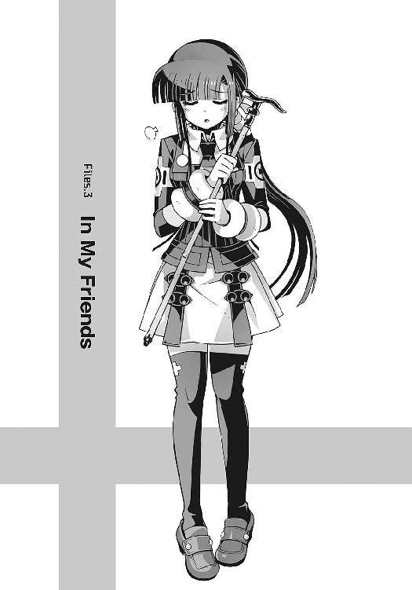
目の前には少女が浮かんでいた。
通い慣れた洛高への通学路。特別に朝早いわけでも遅刻寸前というわけでもない、つまり登校中の生徒がいちばん多い時間帯だ。気怠そうに歩道を歩く洛高生に混じって、彼女も校門のほうへと近づいていく。重力というものをきっぱり無視して、ふわふわと空中を漂いながら。
全体的に色素の薄い感じの少女だった。髪の色は淡く、肌は透けるように白い。それどころか実際に彼女の身体を透かして、うっすらと向こう側の景色が見えている。
『............』
もちろん彼女は人間ではなかった。彼女は幽霊。三年ほど前から僕に憑いている、僕の幼なじみだった少女の生き霊だ。
どうしてそんなものが普通に昼間から高校に通っているのか、正直、僕にも上手く説明できない。しかし慣れというのは恐ろしいもので、最近では彼女の姿を見かけて驚く生徒もほとんどいなくなっていた。せいぜい僕たちと目を合わせないように、さりげなく顔を背ける程度。
まあそんな感じで、それは僕たちにとって、いつもの朝の風景だった。
ただひとつ、彼女が不機嫌そうに僕を睨んで、顔をしかめていることを除いては──
『......いつまでついてくるつもり？』
そんな幽霊の少女、水無神操緒が冷ややかな態度で口を開く。
予想外の彼女の言葉に僕は唖然とする。どう考えても、それはこちらのセリフだと思う。幽霊である彼女につきまとわれて、苦労しているのは僕のほうだ。
しかし操緒は、鬱陶しげに唇を歪めて、
『さっきからずーっと操緒のあとを追っかけてきて。すっごい鬱陶しいんだけど』
「行き先が一緒なんだから仕方ないだろ」
僕も苛ついた口調で言い返す。
「そっちこそ僕の前をうろちょろするのはやめろよな、目障りだから」
『離れて歩けって言ってるんだけど。うざっ』
白い歯をいーっ、と憎々しげに剥き出す操緒。さすがに僕も声を荒げて、
「僕に取り憑いてるのはおまえのほうだろ！」
『ふーん、だ』
「ふん」
僕たちの長い一日は、そんなふうにして始まった。
○
「どうしたのよ、二人とも」
最初に異変に気づいたのはクラスメイトの佐伯玲子だった。朝からロクに目を合わせようともしない僕と操緒に、異常行動を始めたペットを警戒するような顔で訊いてくる。
「もしかして喧嘩？ めずらしいね」
すぐ近くにいた大原杏も、心配そうな表情で、互いに顔を背ける僕と操緒を見比べていた。
僕は短く溜息をついて、
「操緒が悪いんだから仕方ないだろ」
『はあっ？ なんで操緒のせい!?』
振り向いた操緒が、甲高い抗議の声を上げた。僕は恨みがましく彼女を見返し、
「おまえがあんな余計なことを言うから......楽しみにしてたのに......」
「そんな根に持つようなことじゃないじゃん。バカじゃないの」
「......なにがあったの？」
僕たちの説明ではラチが明かないと判断したのか、杏が、僕の背後で困った顔をしている嵩月奏に訊いた。嵩月は、うー......と少しためらうような沈黙を挟んで、
「あの......昨日、映画に行ったんですけど......夏目くんと、私と......」
「えっ!?」
ぎょっとしたように叫んだのは佐伯妹だった。
「ふ、二人で映画？ それってデー......!?」
絶句する彼女の隣で、杏がいつもののんびりした口調で、
「ああ、そっか。昨日って例の試写会だっけ？」
こく、と小さくうなずく嵩月。佐伯妹は怪訝な顔で、
「試写会？」
そうそう、と杏は微笑んで、
「近所の人に招待券もらったんだけど、あたし、昨日は用事があったから智春たちにあげたんだ。面白かった？」
「はい、わたしは。でも......」
そう言って嵩月は、複雑そうな表情で僕たちを見た。
「智春はなにか気に入らなかったの？」
意外そうに目を瞬く杏に、僕は気怠く肩をすくめながら、
「とにかく最悪だったんだよ」
溜息混じりの口調でそう告げる。
「あの映画、予告見て前から楽しみにしてたんだけど、映画が始まって十五分もしないうちに、操緒のやつが全部バラしちゃって」
「バラしたって、なにを？」
杏がきょとんと首を傾げた。僕は頬杖をついたまま、
「組織の中の裏切り者とか黒幕とか、トリックとかあらすじとか全部」
「はあ」
『操緒はただストーリーを予想しただけだよ。あたしだって初めて見る映画だったんだから』
不服そうに反論してきたのは操緒だった。僕はムッと声を低くして、
「だからそれが余計なお世話だって言ってんだろ。おかげでこっちは全然楽しめなかったよ！」
『あそこまで安直な展開だとは思わなかったんだから仕方ないでしょ』
操緒が馬鹿にしたように息を吐いた。
『あんなありがちなシナリオ、十五分も見たら小学生にだってバレバレだよ。嵩月さんだって最初からわかってたでしょ。死んだはずの恋人が実は真犯人だったこととかさ』
「あー......それは、でも......」
困ったように言葉を濁す嵩月。僕は頬を引き攣らせながら、
「僕はわからなかったんだよ！ そういうの、マナー違反だろ、どう考えても」
『それはそうだけど、でも、あれは智春が先に操緒に訊いてきたんじゃん。どうなってんだよ、とか言って』
「だからって最後のオチまで教えてくれなくてもいいんだよ！」
「......どっちもどっちね。馬鹿馬鹿しい」
言い争いを続ける僕と操緒を眺めて、佐伯妹は疲れたような溜息をついた。
しかし杏は、なぜか考えこむように首を傾げて、
「もしかして操緒ちゃん、妬いてた？ 智春が嵩月さんを誘ったりしたから......」
『ええっ？ なんで操緒が智春なんかに......！』
操緒が驚愕に目を見張った。佐伯妹も、ふと真面目な表情になって、
「たしかに、夏目はともかく、あなたがそんな感情的になって喧嘩するなんてめずらしいわね」
操緒はひどく心外だ、と言いたげに首を振り。
『喧嘩なんてしてないよ。操緒は智春の破廉恥さに呆れてるだけ』
「......破廉恥？」
ぴく、と眉を動かす佐伯妹。操緒はうなずき、
『そうだよ。映画のあと、うちに帰ってきて、部屋に閉じ籠もってるからなにやってるのかと思ってのぞいてみたら、智春ってば、ニアちゃんに借りたパソコンで、十八禁のエロサイトを見てたんだよ！』
「エロサイト......」
佐伯妹が汚いものを見るような視線を僕に向けてきた。操緒は荒々しく息を吐き出して、
『そうだよ。それも〝巨乳美人の画像くれ〟とかそんな感じの』
「ほー、巨乳美人？」
佐伯妹のこめかみがひくひくと痙攣する。
「それはなんとなく許せないね、いろんな意味で」
心なしか杏の声もいつもより冷ややかだ。
「だからあれは誤解だって言ってるだろ！ なんか迷惑メールみたいなのが送られてきてて、わけがわからずにクリックしたら勝手に転送されただけで......」
『またそんな下手な言い訳を......素直に謝れば許してあげるって言ってるのに』
「先に謝るべきなのはそっちだろ！ 無神経なんだよ、おまえはいつも」
思わず机を叩いて立ち上がり、僕は操緒と睨み合う。そんな僕たちを、おろおろとしながら見ている嵩月。佐伯妹は、くっだらない、と吐き捨てるようにつぶやき、
「いつも一緒にいるってのも考えものよね、こういうときは」
「だねえ」
杏も苦笑しながら肩をすくめた。その直後、
「おーっす」
軽薄に思えるほど明るい声が、教室の空気も読まずに響き渡った。クラスメイトの口琢磨だった。険悪な雰囲気の僕たちを、口はどこかものめずらしそうに眺めて、
「どうしたんだ、みんな集まって？ あ、そういや智春、昨日送っといたメール見たか？」
「メール......って、もしかして変なリンクだけ貼りつけてあった......」
僕はハッとして振り返る。そういや昨日僕が受け取った迷惑メール、たしか口のアドレスから送られてきていたような気がしたが、
「ああ、それそれ。いやあ、智春の好きそうな画像を見つけたから、ぜひ教えてやらなきゃと思ってさ。ちょっと嵩月に雰囲気似てる感じの美人の......あれ、どうしたんだ、おまえら？」
周囲の空気が変質したことに気づいて、口が不思議そうに首を傾げた。その場にいた女子全員が、殺気立った眼差しで口のことを睨んでいた。
「ひ〜ぐ〜ち〜」
「あんたはまたそういうことを......」
「うー......」
杏と佐伯妹、そしてめずらしく嵩月までもが怒りに声を震わせる。
最大の被害者である僕は、バキバキと指を鳴らして口に詰め寄り、
「おまえが......元凶かっ......！」
しかし、その瞬間、僕の身体のコントロールが不意に何者かに乗っ取られる。
『智春、身体借りるよ！』
そう言って僕の身体を操っていたのは操緒だった。僕に取り憑いている幽霊である操緒は、ごく短時間なら僕の身体に憑依して、勝手に動かすことができるのだ。
「えっ、おい......!?」
『天誅！ 喰らえ......！』
操緒は僕の右腕を高々と振り上げると、問答無用で口に殴りかかった。ギリギリのところでそれをよける口。
「うおっ......！」
『あ、こら逃げるな！』
自分に不利な状況を悟って素早く逃走を始めた口を、僕に憑依したまま追いかける操緒。
しかし操緒は、慣れない憑依状態でのダッシュに失敗し、机につまずいた僕の身体が大きくバランスを崩す。
「う、うわっ！」
「えっ......」
つんのめった僕の正面には、不幸にも嵩月の姿があった。突然のアクシデントに、さすがの嵩月も反応できず、僕は彼女に激突する。互いの額が激突して、僕の目の前が真っ暗になった。
それでも咄嗟に嵩月の身体を庇って、僕は周囲の椅子や机を巻きこみながら転倒する。
背中から伝わる衝撃に息が詰まった。
「痛たたたた......ったく、気をつけろよな、操緒！ 大丈夫か、嵩月？」
苦痛に喘ぎながら、僕はもたもたと上体を起こす。嵩月が弱々しく息を吐く気配があって、
『あー......はい。わたしは、平気......ですけど』
「え？」
頭上から聞こえてきた頼りない声に、僕は怪訝顔で振り返った。
そこには困ったような表情の操緒が、きょとんと首を傾げていた。
そして僕の隣に倒れていた嵩月が、長い黒髪を揺らしてもぞもぞと起き上がり、
「うー、ごめんね、嵩月さん。言っとくけど、悪いのは操緒じゃなくて口だから......」
悪びれない口調でそんなことを言う。
「嵩月？ 操緒？ 二人ともなにを言って......？」
僕は唖然として、どこか違和感のある二人の姿を見比べた。
気弱げで繊細そうな雰囲気の操緒と、やけにのんきな態度の嵩月。特に問題があるわけではないが、何かが変だ。
彼女は今、自分たちのことをそれぞれ何と呼んでいた？
『え？』
「あれ？」
そこでようやく彼女たちも、自分たちの身体に起きた異変に気づいたらしい。
違和感の原因をたしかめるように自分自身の身体を見下ろし、続いて目の前にいる相手の姿を見つめ、そして互いに相手の顔を指さして、ぴったりと息を合わせて二人は絶叫した。
「ええええええええーっ!?」
○
「──操緒ちゃんと奏っちゃんが、入れ替わった？」
多少の混乱はあったものの、どうにか午前中の授業を乗り切った昼休み。
助けを求めて化学準備室に駆けこんだ僕たちを出迎えたのは、ベーグルを片手にコーヒーをすすっている朱浬さんだった。彼女がいてくれてよかったと、ほんの少しだけホッとする。
毒をもって毒を制すというわけではないが、こういう非常識な状況で頼りになりそうなのはやはり、存在自体が非常識なこの科學部の先輩しか思いつかなかったのだ。
「はい。魂というか意識というか、とにかく中身が入れ替わってて......」
僕は声を上擦らせながら、早口で今朝の状況を説明する。どうせ他人事だからと思っているから、なのかどうかは知らないが、朱浬さんは特に驚きもせずにそれを聞き終え、
「するとこっちの幽霊の子の中身が奏っちゃんで......」
空中を漂う幽霊の少女を、じっくりと凝視。そして、
「奏っちゃんの身体に入ってるのが操緒ちゃんってこと？」
僕の隣でピースサインを出している黒髪の女子生徒を眺めて、なるほど、と重々しくつぶやいた。
「......斬新ね」
「ええまあ......信じられないと思いますけど」
僕は弱々しく肩を落とした。やはりそう簡単には信用してもらえないのか、と途方に暮れる。たしかに人格が入れ替わった操緒たちを見ていても、二人がふざけているとしか思えないしな。
しかし朱浬さんは、なぜか奇妙なくらいあっさり納得して、
「まあ、わりとよくあることよね」
「え!? よくあることなんですか？」
僕は逆に驚いて訊き返す。
「もしかしてほかにも誰か心当たりが？ そういえば前に朱浬さんが熱を出したとき......」
「あ、いやいや。そういうことじゃなくて......うん、斬新だわ」
「はあ......」
「たぶん原因はスタビライザの誤作動ね」
「スタビライザ......って、鐵が喰った拡張機能ってやつのことですよね」
本物の操緒の肉体を封印している機巧魔神〝鐵〟──スタビライザとは、その〝鐵〟が、とある事情で体内に取り込んだ特殊な部品の名前だった。
詳しい仕組みはよくわからないが、操緒が、僕の身体に憑依して自由に操ったりできるのも、そのスタビライザのおかげらしい。
「ぶつかったときのショックかなにかで、操緒ちゃんは、たぶん無意識にトモハルの身体を出て、奏っちゃんに取り憑こうとしたんじゃないかしら」
『あ......だけど、わたしが普通の人間じゃなかったから......』
操緒の身体に入った嵩月が、申し訳なさそうな口調で言った。わりと普段は忘れられがちなのだが、そういえば嵩月はいちおう自称〝悪魔〟なのだった。
「だから魔力が逆流して、逆に操緒ちゃんの身体を乗っ取ってしまったんでしょうね」
無責任な口調で朱浬さんがそんなことを言う。理屈だけ聞いてると、わりとそれらしく聞こえなくもないが、
「うーん、わかったようなわからないような......」
嵩月の身体に入った操緒が、どこか楽しんでいるような態度で苦笑した。いつもの控えめな嵩月とのギャップの大きさに、僕は軽い目眩を感じながら、
「どうすれば元に戻るんです、これ？」
「ほっといたらそのうち戻るんじゃない？」
ベーグルを頬張りながら投げやりに告げる朱浬さん。
「そんな無責任な」
「べつに困るようなことでもないでしょ。しばらくそのままで楽しんだら？。操緒ちゃんが生身の身体を動かすのは久々なんだし、奏っちゃんも幽霊になれる機会なんて滅多にないんだから」
明らかにやる気のない朱浬さんの言葉に、操緒はなぜか乗り気になって、
「んー......それもそうかな。あたしたちの身体に智春が入ってたら困ったけど」
「縁起でもないことを言わないでくれ。頼むから僕を面倒に巻きこむな」
「そんなこと言って、本当は智春も嵩月さんの中に入ってみたかったでしょ？ ほらほら」
そう言いながら操緒は自分自身の──つまり嵩月の胸を両手で持ち上げるような仕草をして、
「......うわ、なにこの弾力というかボリュームというか......ずるい！」
「だから嵩月の身体でそういうことをするなよ。本人が困ってるだろ！」
僕はうんざりと頭を抱えた。やはり操緒たちをこのままにしておくのは危険だ。
「どうしても今すぐ元に戻したいなら、ひとつだけ方法を思いつかないこともないけど」
朱浬さんがどこか面白がっているような口調でそう言った。
「なんですか、方法って？」
「いったん操緒ちゃんに意識をなくしてもらえばいいと思うの。そしたら誤作動したスタビライザもリセットされると思うし」
「ああ......」
なるほどなあ、と僕は感心した。嵩月に取り憑いている操緒の意識が消えれば、嵩月の意識は自分の身体に戻るはずだ。多少手荒だが、たしかに手っ取り早い手段ではある。
「えー......気絶とか、痛いのはイヤだなあ」
操緒が不満そうに唇を尖らせる。
一方の朱浬さんは、嬉々として部室のロッカーから護身用のスタンガンを取り出していた。どうしてそんなものが普通に高校の部室に常備してあるのか、今さらながら不思議に思う。
青白い火花を散らすスタンガンは、いかにも高電圧の危険そうな代物で、見ているだけで心配になる。
「あの、大丈夫なんですか、そんなもの使って......操緒はともかく、嵩月は巻きこまれただけなんで、怪我させるようなやり方はちょっと......」
「あら、誰が奏っちゃんに電流を流すなんて言った？」
朱浬さんがスタンガンを構えたまま、不思議そうな声で僕に訊き返す。
「はい？ だって朱浬さん......さっき操緒の意識を失わせるって......」
「そうよ。そこで質問。射影体である操緒ちゃんは、どうやって、この世界に意識を投影してるのかしら？」
「それは、たしか僕の脳内に施術された術式を経由して......」
僕はハッとして、自分に向けられたスタンガンを見る。操緒は基本的に僕に取り憑いている幽霊であり、僕の脳を経由してこの世界に出現しているのだ。つまり操緒の意識をリセットするためには、機能を停止しなければならないのは嵩月ではなく、僕のほうということになる。
「......って、まさか、そのスタンガンって僕に......!?」
「はい、正解」
朱浬さんはにっこりと微笑むと、情け容赦なくスタンガンの先端を押しつけた。
声にならない悲鳴を上げて、僕は意識を失った。
○
僕がどうにか復活したのは、午後の授業がすべて終わったあとだった。
閉門時刻が近いからという理由で保健室から半ば無理やり追い出されて、僕は仕方なく家に帰ることにする。ふらつく足取りで昇降口に向かう僕に、心配そうに付き添っているのは幽霊状態の嵩月だ。
『まだ......痛む？』
「いや、ちょっと全身怠いだけだよ。大丈夫」
はは、と乾いた笑いを洩らしながら、僕は首を振る。操緒の姿でそんなふうに心配されると、なんとなく調子が狂ってしまう。いつもの嵩月と同じ行動パターンなのだが、なにかよからぬことを企んでいるのではないかと不安になってしまうのは、普段の操緒のイメージのせいか。
「でも、結局元に戻らなかったね、あたしたち」
一方、嵩月の身体に入っている操緒は、お気楽な口調でそう言って笑う。
僕はなんだか釈然としない気分で、弾むように歩いている操緒の姿を眺め、
「くそ......納得いかない......なんで僕だけがこんな目に......」
「まあまあ。焦っても仕方ないし、気長にやろうよ」
ふて腐れている僕の頭を、よしよしと撫でてくる操緒。彼女のあまりの緊張感のなさに僕は思わずイラッとして、
「なんでそんな他人事みたいな態度なんだよ!?」
「だって操緒はなにも困ってないもの。スタイルいいし美少女だし、こんないい身体を借りてるのに文句言ったら罰が当たるよ」
操緒はそんなことを言いながら、その場でくるくると回ってみせる。
空中を漂っている嵩月が、いや、あの、そんなたいしたものでは......と困った顔で首を振り、
「なんだか、いい匂いもするしね。クセになりそう」
そう言って自分の髪の匂いを嗅ぎ始める操緒。
「嗅ぐな」
さすがに見るに堪えなくなって、僕は操緒の後頭部を小突いた。あた、と頭を押さえて振り返った操緒が、ちょっと拗ねたように頬を膨らませて、
「それに智春だって嬉しいでしょ。操緒と一緒にいるより、嵩月さんと一緒のほうが」
「なんだよ、その言い方？」
やけに含みのある操緒のセリフに、僕は目を細めて訊き返す。
「べつにぃ。でも、嵩月さんなら余計なこと言わないしね。操緒と違って無神経じゃないし」
「さっき杏たちに言われたこと、まだ気にしてるのかよ。妬いてるとかなんとか」
根に持ってるなあ、と僕は小さく溜息をつくが、
「はぁ？ なんのこと？」
素知らぬ表情で空惚ける操緒。そんな僕たちの耳元に小声で、
『あの......ここでそういう話はあまりしないほうが......』
嵩月が周囲を気にしながら囁いた。閉門時刻寸前の昇降口。部活を終えて下校途中の生徒たちが、口論している僕たちのことを興味深そうに見つめている。
嵩月はもともと目立つ生徒だし、いつも大人しい彼女が人前で言い争いなんかしていたら、注目されるのは当然だ。僕がなにか彼女を本気で怒らせるような、相当な悪行を働いたように誤解されてしまいそうで恐い。
「そ、そうだな......とりあえず今日は早めに帰ろう」
強張った微笑みを周囲に振りまきながら、僕は自分に言い聞かせた。
「帰ろうって言われても、操緒はどこに帰ればいいの？」
操緒が嵩月の姿のまま、困惑したように訊いてくる。
「あ、そうか......とりあえず僕や嵩月と一緒のほうがいいよな？」
「まあ、操緒は一人でもべつにいいですけどぉ」
僕と僕の傍にいる嵩月の姿を眺めて、操緒が皮肉っぽく目を眇める。僕はやれやれと嘆息し、
「おまえ一人に任せて、嵩月の身体になにかあったらどうするんだよ？」
カチン、と操緒の表情が引き攣るのが見えた。
「は？ なにそれ？ 操緒が信用できないって意味？」
「そもそもこんな面倒くさいことになってるのも、おまえが勝手に僕の身体を乗っ取ったのが直接の原因だろ。嵩月の身体にだってまだ慣れてないんだし」
「ふーん、智春が心配なのは嵩月さんの身体だけなんだ？」
操緒が無表情に訊いてくる。嵩月の端整な容姿でそれをやられると、かなり恐い。
「いや、だって操緒の身体って幽霊じゃん。心配するもなにも」
「いいよ、もう」
ふん、と荒々しく息を吐く操緒。
「たしかに、入れ替わった人格がいつ元に戻るのかもわかんないし、嵩月さんには悪いけど、この身体、今夜は鳴桜邸に泊まってもらったほうがいいかもね」
嵩月は少し考えてからうなずいて、
『わたしは構わない、ですけど、でも、一度うちに帰って準備しないと......』
「着替えなんかを持ってくればいいんだよね」
操緒は、嵩月の革靴に履き替えて、履き心地を試すようにその場で軽くジャンプした。そういえば操緒が自分の足で歩くのは、なんだかんだで三年ぶりということになる。やけに張り切っているのはそのせいか。
「じゃあ、そういうことで行きますか」
「あ、待て、操緒。慣れてない身体でそんな急に動いたら──」
「もう、いちいちうるさいなあ。いつも通ってる学校なんだし、そんなに心配しなくても──」
僕の制止を振り切って、操緒は勢いよく外に向かって駆け出した。
彼女の目の前には昇降口の扉。金属製のワイヤーで補強された分厚い強化ガラスに向かって、操緒は速度を緩めることもなく近づき、
「あ......」
呆然と見守る僕たちの目の前で、ガン、と扉に激突した。幽霊だったころのいつもの癖で、扉をすり抜けようとしたのだろう。
目を回して仰向けに倒れる操緒を、嵩月が慌てて抱き止めようとするが、
『あー......』
幽霊が生身の人間を支えられるはずもなく、操緒の身体はそのまま床に転がった。
昏倒した自分自身の身体を、幽霊状態の嵩月が困ったような顔で眺めていた。
○
「うー......痛たたた」
嵩月の身体に入った操緒が、赤くなった額を押さえて呻いている。夕暮れ間近の幹線道路。僕たちは嵩月の下宿先に立ち寄るために、学校最寄りのバス停へと向かっていた。
「ごめんね、嵩月さん。つい、いつものクセで」
『いえ......わたしが痛い思いをしたわけではないので......』
慣れない身体で危なっかしく歩く操緒を気遣うように、嵩月が首を振る。
僕は非難がましい目つきで操緒を睨んで、
「だから気をつけろって言ったのに......って、階段！」
「おおう！」
目の前の下り階段を無視して、そのまま空中に歩き出そうとした操緒の身体を、危ういところで引き留めた。幽霊だったときのように、浮遊していくつもりだったのだろう。生身の身体を手に入れたとはいえ、幽霊として長年暮らしてきた感覚は、そう簡単には抜けないらしい。
「あ......そっか。階段って気をつけないと落ちちゃうんだっけ。ホントごめん」
『あ......いえ』
困ったように嵩月が微笑んで、その直後、路上に派手にクラクションが響き渡った。
ふわふわと空中を漂う嵩月に驚いて、車道を走ってきた原付バイクの兄ちゃんが、転倒寸前になっていた。ヘルメットの下の顔を引き攣らせ、彼は、どうにか体勢を立て直して走り去っていく。バイクの排気音に混じって、恐怖の悲鳴がいつまでも聞こえていた。
「た......嵩月も、気をつけてくれ」
どうにか事故にならずに済んだことに、僕は深々と安堵の息を吐く。嵩月は反省したように俯いて、
『ごめんなさい......ちょっとぼーっとしてたから......浮かんでしまって』
「慣れるまでは苦労しそうだね、お互い」
屈託なく笑いながらそう言って、操緒は、遠くから僕らのことを見つめていた余所の学校の生徒に手を振った。純情そうな男子が数名、顔を赤くして逃げるように立ち去っていく。
「知らない男子に愛想を振りまくな」
そんな操緒のデコを僕は指で弾いた。
「痛っ......」
「おまえが勝手にそういうことをすると、あとで嵩月が困るだろ」
「いやー、なんかあたしにすっごい見とれてたから、サービスしないといけない気がして」
「見とれてたのはおまえじゃなくて嵩月の顔だから......って、嵩月もくっつかないで」
『あ......ごめん、なさい......』
再び車道のほうへと漂っていかないように気をつけているのか、ふと気づくと、嵩月が僕の背後にぴったりとくっついていた。本物の背後霊みたいで、さすがにちょっとこれは恐い。
「そうそう。こそこそしてると余計に怪しまれちゃうからね。いつものあたしみたいに堂々としてればいいんだよ」
そう言って操緒が、やたら偉そうに胸を張る。
僕はわけもなく激しい疲労を感じながら、
「おまえももう少し普段の嵩月らしくしてろよな。周りの人みんなに人格が入れ替わってます、なんて説明して回るわけにはいかないんだから」
「わかってるわよ。嵩月さんっぽく振る舞えばいいんでしょ」
ごほんごほん、と咳払いして、真面目な表情を作る操緒。
「あーうー......夏目くん、あたくし、バス、乗る......帰る、家、です」
『あの......わたしのイメージ......そんなですか？』
どうやら嵩月の物真似をしているつもりらしい操緒を、嵩月本人が複雑そうな表情で見つめ返す。操緒は少し困惑したように、
「あ、あれ？ なんか違ってた？」
「違うだろ。どこがどうとは言えないけど、なんか微妙に」
僕は溜息混じりに感想を述べた。えーっ、となぜか不服そうな態度の操緒。操緒としては、べつに冗談ではなく、本気で嵩月になりきっているつもりだったらしい。
『び、微妙......』
なぜか嵩月本人も、ひどく傷ついたような顔で肩を落としている。
そんな嵩月を見上げて、今度は操緒が、
「ほら、またそんな深刻そうな顔して。あたしじゃないってバレバレだよ」
そうか、そうですね、と反省したような表情を浮かべる幽霊状態の嵩月。気を取り直したように無理やりな笑顔を浮かべて、勢いよく手を振り上げ、
『あー......ト、智春！』
「あ、ああ？」
こっちの物真似は意外に似ているなあ、と僕は少し驚いた。本物の操緒とほとんど区別がつかないじゃないか、と素直に感心していると、嵩月は僕の胸元目がけてその手を振り下ろし、
『な、なんでやねん！』
僕と操緒は、本気でその場にずっこけた。
わなわなと操緒は肩を震わせ、
「なんでそんなツッコミ!? なんで関西弁？」
「いやまあ、たしかに操緒のイメージってだいたいそんなもんだと思うけど」
ハハ、と力のない声で僕は笑って、
「なんで智春までそんなこと言うの!?」
操緒がキッと僕を睨みつけてくる。
「いや、だって今もほら」
「それは二人が突っこみたくなるようなことばっか言うからでしょうが！」
嵩月の姿をした操緒が、僕の胸ぐらをつかんで締め上げた。慣れない身体で力の加減が出来てないのか、本気で苦しい。呼吸困難に陥った僕が、声も出せずに苦悶していると、
「ずいぶんと親しげだな、夏目智春。それに嵩月奏も──」
そんな僕たちのすぐ背後から、敵意のこもった声が聞こえてきた。意味もなく気取ったその声には、不本意ながら聞き覚えがあった。
「こんな賑やかな場所で、人目をはばからず密着して痴話喧嘩か。きみたちはまだ自分の置かれている立場がわかっていないようだな」
「さ、佐伯会長......」
純白の改造学生服に身を包んだ、無駄に暑苦しい美形の男子生徒。第一生徒会会長の佐伯玲士郎だ。彼の背後には、白ずくめのコートをまとったマッチョな生徒会役員たちもいる。
「げ、また出た」
操緒が嫌そうに顔をしかめた。僕を締め上げていた腕を解き、佐伯兄に向かってボクシングのような構えをとる。それを見た佐伯兄は不機嫌そうに目を細め、
「ほう......ずいぶん好戦的な態度だな、嵩月奏」
「こら、操緒。やめろって」
僕は慌てて操緒たちの間に割って入る。校内の治安維持を担当する佐伯兄と第一生徒会は、悪魔である嵩月のことを以前から、危険な存在としてマークしているのだ。そして今の操緒は、その嵩月の身体に入っているのだった。いつもの調子で挑発してたら、本気で僕たちを殺しにかかってきかねない。
しかし操緒は反省した素振りもなく、
「だってムカつくじゃん、いきなり出てきて勝手なことばっか」
「何度も警告したはずだ、夏目智春。演操者であるきみが嵩月奏と契約するようなことがあれば、きみたちの存在は滅殺すると」
「あ、はい。僕たちはべつにそんなつもりでは......」
「はー......はーっ！」
ビーム的ななにかを放つような姿勢で、掌に〝気〟を集中し始める操緒。僕は慌てて彼女の脳天にチョップを振り下ろし、
「だからやめろってば」
「その態度、我が第一生徒会に対する宣戦布告と受け取っていいのだな、嵩月奏」
まったく冗談の通じない性格の佐伯兄が、真面目な口調でそんなことを言う。
『あー......うー......』
操緒の中に入っている嵩月が、途方に暮れたような顔でぶるぶると首を振り、
「違います。これには理由があるんですよ。こいつの中身は嵩月じゃなくて、操緒なんです」
『......です』
僕は嵩月と一緒に必死に事情を説明する。
「なにを言っているんだ、きみたちは？」
佐伯兄は、当然といえば実に当然の反応をした。
「だからいろいろあったんですって。メールとか巨乳美人とかスタビライザの誤作動とか。詳しい事情は妹さんに訊いてもらえれば」
「玲子に？」
思いがけず妹の名前が出てきたことで、佐伯兄が困惑する。幸運にも、僕たちが乗る予定のバスが到着したのは、まさにそのタイミングだった。
「そういうわけで僕たちはこれで」
「待ちたまえ、夏目智春。おい！」
威嚇中の操緒を引きずるように抱きかかえて、僕はバスに飛び乗った。
○
結局、僕たちが鳴桜邸に帰り着いたのは、それから数時間後。完全に陽が暮れたあとだった。
なんだか妙に疲れてしまったのは、佐伯兄から逃げ延びたあとも、不慣れな身体に入っている二人のせいで、小さなトラブルに絶え間なく巻きこまれたせいだ。
操緒が外泊の準備をするために嵩月の下宿を引っかき回したり、夕飯の買い物をするために立ち寄ったスーパーで、幽霊化した嵩月が騒ぎを起こしたり、というようなことだ。
「つ......疲れた」
鳴桜邸の玄関に辿り着いたところで、僕はぐったりと倒れこむ。
僕の頭上を浮遊していた嵩月が、しおれたような表情で、
『ごめんなさい......わたしのせいで』
「ああ、いや。べつに嵩月が悪いわけじゃないから」
僕は慌てて首を振った。嵩月は操緒に巻きこまれただけで、今回の混乱には、まったく責任がないのだ。しかし彼女を巻きこんだ張本人の操緒は、なぜか得意げな先輩面で、
「そうそう。人混みの中で幽霊ってバレないようにするのは、けっこう慣れがいるんだよね」
『慣れます。なるべく早く』
真面目な顔で、無駄に前向きな決意を表明する嵩月。それよりも早く元に戻って欲しい、と僕は思う。努力の方向性が間違っているのではないかなあ。
「ようやく帰ってきたのか。私は腹が減ったぞ、智春」
ぱたぱた、とスリッパの足音を立てて、廊下の奥から顔を出したのは、やけに小柄な金髪の少女だった。この洋館に居候している交換留学生のアニア・フォルチュナだ。
「あれ、ニアちゃん。もしかして一人で待ってたの？」
嵩月の身体に入った操緒が、少し驚いたように目を大きくして訊いた。
いつもと違う嵩月の口調に、アニアは一瞬、怪訝そうな表情を浮かべたが、
「仕方ないだろう。おまえたちは教室を出て行ったきり帰ってこないし、電話しても出ないし、メールの返事もないし」
「悪かったよ。ちょっと問題が発生してメールどころじゃなかったんだよ」
「問題？」
アニアが警戒するように目を細めて、僕たちを眺めた。
「そうそう。いろいろ苦労したんだよ」
『あー......お邪魔します』
やけに悠長な態度でうなずく黒髪の少女と、遠慮がちに邸内に入ってくる幽霊。
普段と正反対の二人の様子を、アニアは薄気味悪そうな表情で眺めて、僕に訊いた。
「なんの遊びだ？」
僕は気怠げに首を振り、
「遊んでるわけじゃないよ。操緒と嵩月の人格が入れ替わっててさ」
「人格が入れ替わった？」
「スタビライザの誤作動が原因だろう、って朱浬さんは言ってたけど......」
「......なるほど」
アニアはあっさりと納得してつぶやいた。さすがに飛び級で留学してきた天才少女だけあって、理解が早い。
「アニアの能力でどうにかならないか？」
一縷の希望をこめて僕は訊いた。アニアは、運喰らいと呼ばれる特殊な能力を持った悪魔だ。運気を自由に操って、確率を操作することができる。その能力を上手く使ってもらえれば、この混沌とした状況をどうにかできるのではないかと思ったのだが、
「そうだな。電気ショックで智春を気絶させれば元に戻るかもしれん。試してみるか」
返ってきたのは、昼間の朱浬さんと同じ答えだった。僕は思わず頭を抱えて、
「試すなよ！ それはもうやったから！ ダメだったから！ そういうんじゃなくて、ほかにあるだろ、確率操作とか、なんかそんなの」
「なぜ私がおまえのために、そんな面倒なことをしなければならないのだ？」
アニアの答えはにべもない。
「だいたいな、誤作動してるとはいえ、スタビライザは機巧魔神の魔力で動いてる装置だぞ。そんなものに外部からアクセスするには機巧魔神と同等以上の魔力が必要になる。いくら私でも手に負えるか。自然に戻るのを待つしかないな。または電気ショック」
「電気ショックはもういいよ」
僕は失望を隠しきれずに肩を落とした。操緒が呆れたように僕を眺めて、
「智春もいい加減あきらめて現実を受け入れたら？」
「おまえが順応しすぎなんだよ」
僕は恨みがましい視線を操緒に向ける。ついでに、隣にいる嵩月を見上げて、
「悪いな、嵩月。巻きこんじゃって」
操緒の身体に入った嵩月が、控えめに微笑んで首を振った。
『いえ......わたしも、べつに困ってるわけではないので』
「ほらね」
勝ち誇ったように操緒が笑う。そして彼女は行儀悪く靴を脱ぎ散らして、
「行こ、ニアちゃん」
アニアの手を引いて歩き出そうとする。僕は慌てて操緒を呼び止め、
「どこに行くんだ？」
「着替え。いつまでも制服のままじゃくつろげないし、せっかく嵩月さん家から可愛い服をいろいろ持ってきたから着ないとね」
『え？』
どうやらそれは初耳だったらしく、嵩月が少し驚いた顔をする。
操緒は、そんな嵩月の不安を知ってか知らずか、
「谷間を強調した服とか着てみたかったんだよねえ」
『ちょ、ちょっと待って......』
慌てて操緒を止めようとする嵩月だが、幽霊の身体ではどうにもならない。
やれやれとアニアが息を吐き、
「まあ、操緒があまり暴走しないように見ていてやるから、安心していろ」
嵩月を励ますようにそう言って、彼女も操緒を追いかけて行った。
そんな二人の後ろ姿を見送って、僕は自分の部屋に向かった。今のうちに僕も私服に着替えようと思ったのだ。隣のアニアの部屋からは、時折、操緒の楽しそうなはしゃぎ声が聞こえてくる。途切れ途切れに伝わってくる「つるつる！」とか「くびれっ」とかの断片的な単語に、嵩月がびくびくと反応しているのがちょっと面白い。
「やれやれ、大丈夫かな、あいつ」
僕は軽く溜息をつきながら、制服を脱ぎ始めた。いきなりシャツの前をはだけた僕を見て、
『ひゃっ!?』
嵩月が慌てて目を逸らす。うわっ、と僕も慌てて、脱ぎかけた服を着直した。
「あ、悪い。つい、いつものクセで......」
警告もなしに突然服を脱ぎ始めたら、それは嵩月も驚くだろう。そういえばこういうときの操緒は、なにも言わなくても僕の前から姿を消していたな、とふと思う。
嵩月は顔を赤らめたまま首を振り、
『いえ、ごめん......なさい。外に出てるから』
ドアノブを握ろうと何度かスカスカと空振りを繰り返し、それからようやく嵩月は、ドアをすり抜けて廊下に出ていった。脱ぎかけの自分の制服を見下ろして、僕は、無言で首を振る。
......調子狂うな。
○
翌朝。僕は冷たい床板の感触で目を覚ます。いつの間にかベッドから転げ落ちていたらしい。身体の節々が痛いのはそのせいか。
「ん......」
乱暴に目元をこすりながら、僕はもぞもぞと上体を起こした。
そのとき誰かが僕のベッドの上で、無造作に寝返りを打つ気配がした。起き抜けのぼんやりした意識の中で、僕は無警戒に振り返り、
「う、うわっ......!?」
そこで目にした光景に、危うく心臓が止まりそうな衝撃を受ける。
そこには長い黒髪の少女が、パジャマ姿の無防備な寝顔を晒していた。
楽しい夢でも見ているのか、端整な寝顔にはうっすらと微笑みが浮かんでいる。
驚くほど長い睫毛と、すっぴんとは思えない綺麗な肌。寝乱れたパジャマの上着の裾から、彼女の白い脇腹がちらりとのぞいていて色っぽい。まあそれはそれとして、
「な、なんで僕のベッドに嵩月が......」
見た目に似合わず、正直あまり寝相のよろしくない嵩月の姿を、僕が呆然と見ていると、
『あー......おはよう、ございます』
背後から控えめな声が聞こえてきた。ふと気づくと、操緒の姿をした幽霊の少女が、困ったような表情で浮かんでいた。
「え......」
そこでようやく思い出す。そうか、操緒と嵩月の人格が入れ替わっていたんだっけか。一晩経てば元に戻るかも、と少し期待していたのだが、結局、状況に変化はなかったらしい。
僕と嵩月が二人で顔を見合わせて、どちらからともなく溜息をついていると、
「......あれ......智春？ おはよ。どうしたの？」
ようやく目を覚ました操緒が、ベッドの上で背伸びしながら、緊張感のない声で言う。
「おまえ、操緒か。アニアと一緒に寝てたんじゃなかったのかよ？」
「ああ、ごめん。なんかいつものクセで」
ふわあ、と大きくあくびをしながら、毛布を撥ねのけて起き上がる操緒。そんな彼女の姿を見て、嵩月が、あうあう、とうろたえる。
僕は操緒のパジャマの襟元から目を逸らしながら、
「服！ 前、はだけてる！」
「おおう」
自分の胸元を見下ろして、目を丸くする操緒。そして彼女はなにを思ったのか、にやにやと悪戯っぽく微笑みながら、パジャマの襟に人差し指を引っかけて、
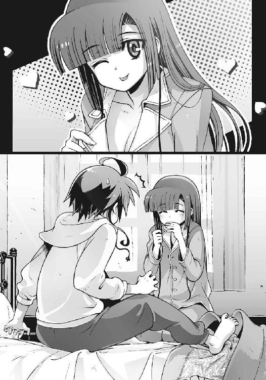
「ちらっ」
「遊ぶな！」
僕に怒鳴られて、不服そうな表情を浮かべる操緒。
「本当は嬉しいくせに......あたしじゃなくて嵩月さんの身体っていうのが微妙にむかつくけど」
「わけのわからない対抗意識を燃やすなよ」
僕は軽い頭痛を感じながら、部屋を出た。これ以上、操緒の気まぐれにつき合ってたら身が保たない。どうせ彼女の挑発に乗ったら乗ったで怒り出すに決まっているのだから。
階段を下りてトイレに入り、用を足すために僕はズボンを下ろそうとして、
『ひゃっ!?』
僕のすぐ後ろにいた嵩月が悲鳴を上げた。どうやらそこがトイレだと気づかずに、僕のあとについてきていたらしい。
「う、うわっ......」
僕は慌ててズボンを引っ張り上げ、嵩月が顔を真っ赤にしながら姿を消す。
便座の上に腰掛けて、僕はげっそりと俯いた。
「調子狂うな、本当に......」
そうつぶやいて、ふと思う。
もしかしたら操緒はいつも、ああ見えて僕に気を遣っていたのかもしれない、と。
○
登校の準備を整えて、いつもよりも少し早めに家を出た。どうせまた途中でトラブルに巻きこまれてしまうのだろう、というあきらめを受け入れた上の処置である。早起きにつき合わされることになったアニアが、「なんで私まで......」と不服そうにむくれている。
「あのさ......操緒」
嵩月がアニアをなだめている隙を見計らって、僕は小声で操緒に話しかけた。
操緒はきょとんと首を傾げて、
「ん？」
「あ、いや......昨日のこと、謝ろうと思って。無神経とか言って悪かったな」
「は？」
嵩月の姿をした操緒が、なにか不気味なものを見るような眼差しを僕に向けてきた。
「なによ、急にそんなこと言い出して。怪しいなあ」
「いや、そんな深い意味はないんだけど」
嵩月と中身が入れ替わったことで、操緒にも少しはいいところがあるとわかった、とか言うと怒られそうなので黙っておく。操緒は、まだ少し不審そうな表情をしていたが、
「ふーん。まあいいや。うん、わかればよろしい」
ちょっと得意げにそう言って、屋敷の門から外へと勢いよく飛び出して行こうとした。
その直後、
『あ......』
嵩月がなにかに気づいたように声を上げ、
「わっ!?」
操緒の身体が突然、大きくバランスを崩してすっ転んだ。頭から地面に倒れこんで、うう、と弱々しい声を出す。僕は慌てて彼女に駆け寄って、
「なにやってんだよ」
「しょうがないじゃん。このおばちゃんが急に出てきたりするから」
操緒がそう言いながら顔を上げた。彼女のちょうど目の前には、和服姿の女性が立っていた。年の頃は五十前後だろうか。小柄だがすらりと背筋の伸びた、凛々しい雰囲気の持ち主である。
「ごめんね、おばちゃん。大丈夫？」
無言で立ち尽くしたままの女性を見上げて、操緒が言った。
女性は唇を結んだまま、手に持っていた杖を持ち上げて、
びしっ。
「痛っ！」
いきなり脳天を杖で殴られ、操緒が鋭い悲鳴を上げた。
「なにするのよ、ちゃんと謝ったでしょ──あたっ、痛っ!?」
びし、びしっ。口答えする操緒を黙らせるように、女性がさらに追い打ちをかける。
『あ......』
その光景を呆然と見ていた嵩月の顔が青ざめた。その間も一方的に殴られ続けていた操緒は、ついに我慢の限界に達して、
「あったまきた。なにすんのよ、この暴力ババア！」
女性の杖を払いのけて反撃に転じる。女性の手首をつかんで、彼女を押さえつけようとして、
『だめっ！』
「えっ......!?」
嵩月の悲痛な叫び声に、操緒の動きがわずかに遅れた。その瞬間、
「きゃあああああああ!?」
「操緒!?」
和服姿の女性が目にもとまらぬ速さで手首を翻し、操緒の身体が宙を舞った。そのまま地面に叩きつけられて、派手に尻餅をついた操緒が呻く。
「ちょっとあなた、なにするんですか、いきなり!?」
さすがに黙ってみているわけにもいかず、僕は操緒を庇おうと、二人の間に割って入った。そんな僕たちを、女性は冷ややかに見下ろして、
「うちは......悲しいわ」
かすかに訛りのある口調で厳かに告げた。
「しばらく会いに来いひん思てこっちから出向いてみたら、あんたは、このうちの顔も忘れてしもたん、奏？」
「はい......!? 誰よ、あんた？」
操緒がムッとした顔で訊き返す。そのとき操緒の身体に入ってる嵩月が、ぼそりと、
『お祖母さま......』
「は？ お祖母さま......って、嵩月さんのおばあちゃん？ 若っ......美人っ！」
言われてみれば、たしかにその女性には、嵩月に通じる面影があった。嵩月の母親といっても通用しそうな彼女の顔を見上げて、絶句する操緒。
嵩月祖母は、びしっ、と杖の先端を操緒の鼻先に突きつけて、
「嫁入り前の娘が殿方のお宅に無断外泊して、おまけに目上の人間にぶつかっといてその無礼な物言い......嵩月家の娘として恥ずかしないように教育してきたつもりやったけど、どうやらうちの躾が甘かったようやね」
「ちょ......ちょっと待って、おばあちゃん。これにはわけが......」
反論しようとした操緒が杖で小突かれて、あう、と仰け反る。
「この期に及んで言い訳とはまた往生際の悪い......まさかあんたがそんな情けない娘に育ってるとは思てへんかったわ。うちがその腐った性根を叩き直したる。ついてき！」
「だから違うんだってば！ ......智春っ！」
操緒がめずらしく僕に助けを求めながら、嵩月祖母に連行されていく。
彼女たちの姿を呆然と見つめたまま、
『あの......どうしましょう』
嵩月が途方に暮れたような表情で訊いてきた。
「私は先に学校に行ってるぞ」
面倒事に巻きこまれるのを恐れるように、そう言ってさっさと逃げ出すアニア。
僕は無言で目元を覆って首を振る。
うーん......
○
「......というわけで、あの、ここにいる彼女はあなたのお孫さんではなくて、僕の幼なじみの幽霊なんでけど」
とりあえず連行された操緒のあとを追いかけて、僕たちは嵩月の下宿に来ていた。古い神社の跡地にある小さな庵室の中である。和室の隅の畳の上に、操緒が正座させられている。
凛と背筋を伸ばして座る嵩月祖母が、重々しく息を吐く。
「夏目さん、と仰いましたか」
「は、はい」
「奏と親しくしてくださってるそうで、ありがとうございます。お名前は八伎のほうからも、かねがねうかがっております」
「あ、いえ、こちらこそ奏さんにはいつもお世話になって......」
丁寧な口調にこめられた言外の威圧感に、僕は戦慄しながら頭を下げた。ちなみに八伎さんというのは、嵩月の親父さんの直属の部下。広域指定悪魔結社〝嵩月組〟の若頭だ。
「ですが、それとこれとはべつの問題。奏を庇ってくださることには感謝しておりますが、ここで甘やかすのは本人のためにもなりません」
「あの......だから、そこにいるのは奏さん本人じゃないんですってば」
僕は、ほとんど命懸けの気分で、やんわりと反論を試みた。しかし嵩月祖母の反応は素っ気ない。
「また、そのようなご冗談を」
『本当です。お祖母さま......わたしが奏で、今その身体に入っているのはべつの方が......』
嵩月も、たどたどしい口調で説明する。正座させられたままの操緒が、そうそう、と背後で首肯している。嵩月祖母は、そんな操緒を、キッと横目で睨みつけ、
「おふたりとも、そのような突拍子もない嘘をついてまで奏を庇うのはやめてくださいまし。孫の不始末はあたくしの、ひいては嵩月一族の不始末です。きっちりケジメをつけさせていただきます」
「け、けじめ......？」
僕の背中にじわりと嫌な汗が滲む。操緒の身体に入った嵩月が、怯えたように震えている。
「それってなにをするんですか？」
「あたくしにも奏のことを長いこと放置してきた責任がございます。まずは奏の今の生活態度を確かめさせてください。その結果いかんでは──」
嵩月祖母の目つきが一瞬険しくなって、僕たちはそれ以上なにも言えなくなる。多少は責任を感じているのか、操緒もめずらしく神妙な態度で嵩月祖母の言葉を聞いていたが、
「なにを悠長に座っとんねん、奏。お客様のお茶を用意しぃな」
「あー、はいはい。お茶ですね」
痺れた足を引きずるようにして、台所へと向かう操緒。不安そうな表情で嵩月が見守る中、操緒が両手に抱えて運んできたのは、電気ポットとマグカップだった。
嵩月祖母のこめかみに、血管がぴくりと浮き上がる。
「どういうつもりやの、奏？」
「どうって......お茶でしょ？」
不満げな顔で訊き返す操緒の脳天に、嵩月祖母の杖が振り下ろされた。
「こないな出涸らしを淹れろなんて誰も言うてへんわ。お抹茶を点てェ言うてんねん！」
「お、お抹茶？」
操緒が、ぎょっとしたように表情を強張らせる。もちろん操緒に茶道の心得のようなものはない。伝統とか礼儀作法とか、そういうものとはもっとも縁遠い性格の幽霊なのだ。
『あの、それならわたしが......』
見かねた嵩月が立ち上がろうとするが、
「水無神さん、余計な手出しは無用です」
『ううっ......』
祖母に厳しく戒められて引き下がる。仕方ないなあ、と操緒が制服の袖をまくって、
「はいはい、わかりましたよ。操緒......じゃなくてわたしがやればいいんでしょ」
「なんやの、その言葉遣いは！」
いきなり杖で殴られている。
「痛いなあ、もう......」
涙目になりながら操緒は再び台所へと向かった。今度は嵩月祖母も同行する。
「............」
僕と嵩月は無言で顔を見合わせた。じわじわと不安がこみ上げてくるが、いちおう客という立場上、下手に様子を見に行くわけにもいかない。
やがて僕たちの不安を裏付けるように、台所のほうから騒音が聞こえてきた。どんがらがっしゃん、となにかが落下し、茶碗が割れる音が連鎖的に響く。ぎゃあ、という嵩月祖母の悲鳴。そして杖が振り下ろされる音。ぴしっ、ぴしっ──
やがてこの世の終わりのような静寂が訪れ、ひびの入った茶碗を持った操緒が現れた。
「お......おまたせ」
「大丈夫か、操緒......？」
憔悴しきった表情の彼女に、僕は怖ず怖ずと声をかける。
操緒に付き添って現れた嵩月祖母が、苦々しげな表情で頭を下げる。
「申し訳ありません、夏目さん。あたくしの教育が至らないばかりに、このような醜態をお見せしてしまいまして」
「いや、あの......嵩月に落ち度があるわけでは......」
僕はいちおう嵩月を擁護するが、なんの解決にもなっていないのは明らかだった。
今の嵩月の中身が操緒であることが証明できればいいのだろうが、そんな話、嵩月祖母が相手でなくても普通は信じてもらえないだろう。
どうしたものかと苦悩しながら、僕が粉っぽい泥水のような抹茶をすすっていると、
「お茶はもう結構です。あなたは昼餉の支度をしておいでなさい」
「ヒルゲ？ ドイツ人？」
「お食事です！」
操緒が再び嵩月祖母に怒鳴られていた。
「ああ、ランチね。オッケー」
今度は任せて、といわんばかりに勢いよく立ち上がる操緒。僕は彼女の耳元に小声で、
「おい、操緒。おまえ料理なんかできるのか？」
「平気でしょ。智春にだってできるくらいなんだし」
いつもの根拠のない自信に満ちた笑顔で断言する操緒。
『操緒さん......お料理は、得意？』
嵩月が、すがるような表情で僕を見上げて訊いてくる。
「いや、あいつは中学に入る前からずっと幽霊だから、今まで料理なんてしたことないはず。小学校の調理実習のときは......」
僕が説明し終える前に、嵩月祖母の絶叫が聞こえてきた。なにかが焦げるような嫌な臭いと、砕け散る食器の音。びしびしと嵩月祖母の杖が唸り、そのたびに操緒が悲鳴を上げる。
果てしなく続くかと思われた惨劇は、しばらくして小規模な爆発音とともに終焉を迎えた。
やがてボロボロになった操緒が運んできたのは、皿の上に盛りつけられた謎の物体だった。料理というよりもモンスターの死骸のような、黒焦げの不気味な肉塊である。
戻ってきた嵩月祖母はやつれ果て、一気に十歳ばかり老けたようにも見えた。
「わかりました。もうええわ。どうやらあんたの一人暮らしを許したんは間違いやったようや」
「え？」
なにか決意したような嵩月祖母の言葉を聞いて、操緒が額に汗を浮かべた。
嵩月祖母は険しい表情で僕たちのほうへと向き直り、
「ご覧のとおりです。あたくしも反省いたしました。かくなる上は、奏はあたくしの実家へと連れて帰ります」
「実家？」
あまりの唐突な話の展開に僕は困惑し、
「嵩月のおばあちゃんの実家ってどこだ？」
『か......関西です』
顔を蒼白にした嵩月が、抑揚のない口調で弱々しくつぶやく。操緒がうっ、と息を呑んで、
「ちょ、ちょっと待って、おばあちゃん。それ困る！ 学校は？」
「心配いりまへん。うちの知人が地元で名門女子校を経営してます。そこで礼儀作法を一から仕こんでもらいます。このままやったら恥ずうて嫁に出すこともできまへんわ」
「そういうの時代遅れなんだってば。そもそもあたしは嵩月さんじゃないって言ってるのに」
「まだそないな苦し紛れの言い逃れを......！」
嵩月祖母がおっかない表情で操緒を睨んだ。しかし操緒はそれでも怯まず、
「もう、あったまきた！ 力ずくでも嵩月さんは連れて行かせないからね、このわからずや！」
「......力ずく？」
嵩月祖母の眉がぴくりと跳ねた。
「それはうちに勝負を挑んでると受け取ってええんやな？」
「なんでもいいわよ。年寄り相手だからって手加減しないからね」
操緒が嘲るように笑いながら言い放つ。この手の挑発に関しては、操緒は本当に天才的だ。予想どおり嵩月祖母は怒りに声を震わせながら、
「よく言いました。では着替えて能楽堂のほうにおいでなさい、相手をして差し上げます」
『え......あ......だめ......』
弱々しく呻いたのは嵩月だった。僕は驚いて彼女を見上げ、
「嵩月？」
『だめです。お祖母さまは嵩月流炎舞の総師範で......私でも......勝てない』
「え!?」
僕と操緒の顔面からサッと血の気が引く。
炎舞というのは嵩月の家系に代々伝わるという古い武術だ。武闘派で知られた悪魔の一族の秘技というだけあって、優雅な動きに似合わぬ、実戦的で凶悪な流派である。嵩月がその技を使って、屈強な男たちを倒すところを僕たちも何度となく目撃している。
その嵩月が勝てないという総師範。ド素人の操緒の手に負える相手ではない。が、
「今さら怖じ気づいたとは、言わせませんよ」
静かな殺気をたたえた眼差しで、嵩月祖母がうっすらと微笑んだ。
○
「この服、前から一度着てみたかったんだよねえ」
巫女装束に着替えた操緒が、この期に及んで緊張感のない口調で言う。
嵩月の下宿の隣にある能楽堂。広々とした板張りの舞台の上だ。
タスキで和服の袖をまとめた嵩月祖母は、すでに仕合の準備を整えて待っている。
僕は緊張でキリキリと胃の痛みを感じながら、
「操緒、やっぱりまずいだろ......今ならまだ謝れば許してもらえるかも」
「許してくれるわけないでしょ、あの頑固おばあちゃんが」
操緒が割り切った口調で断言する。
「要は勝てばいいんでしょ、勝てば」
「いや、それはそうだけど......」
勝ち目がほとんどないのが問題なのだ。
『ごめんなさい、わたしのせいで』
なぜか責任を感じているらしい嵩月が、憂い顔で言う。しかし操緒はなぜか不敵な笑顔で、
「平気平気。心配しないで。絶対に嵩月さんを連れて行かせたりしないから」
『でも......』
なおも不安げな嵩月に、優しく微笑みかける操緒。
「だいじょうぶ、操緒がついてるよ」
そう言って準備体操を始めた操緒の後ろ姿を、僕は唖然として眺めていた。なんなんだ、あいつの根拠のない自信は。
「......奏、覚悟はよろしいか？」
やがて嵩月祖母が、静かな声音で訊いてきた。操緒は中指を立てた腕を突き出して笑い、
「そっちこそね。言っとくけど、どっちかが気絶するかギブアップするまでだからね」
「威勢のよろしいこと。けどな、実力の伴わへん大言壮語は見苦しいで」
「その言葉、そっくりお返ししてやるわ......よ!?」
話し続けている嵩月祖母に、操緒は不意打ち気味に殴りかかった。しかしその拳はあっさり嵩月祖母につかまれて、操緒の身体が吹っ飛ばされる。
「操緒!?」
僕は思わず叫び声を上げた。しかし操緒は壁に激突する寸前、猫のように身体を回転させて、受け身をとる。もともとの嵩月の肉体スペックが高いのか、操緒の反射神経がいいのか、あるいはその両方か。なんにしても常人離れした危機回避能力だ。
嵩月祖母も、ほんの少し感心したように眉を上げている。
「痛たたたたた......なるほど、そういう技なわけね」
とはいえ、まったくの無傷というわけにはいかなかったのだろう。ぶつけた肩をさすりながら操緒は立ち上がり、
「なら、これはどうよっ？」
ジャンプしながらの二段蹴りを放つ操緒。カンフー映画ふうの派手な攻撃だったが、残念ながら隙だらけで、やはり嵩月祖母にはあっさり避けられる。そして着地した瞬間を狙って足払い。軸足を刈られた操緒は派手に転倒し、仰向けに倒れたところを踏みつけられそうになって、ごろごろと逃げまどう。
「見苦しい。なんやの、その素人みたいな動きは」
「うるさい。まだ負けてないわよ！」
軽く息を弾ませながら立ち上がる操緒。
その懐に一瞬で潜りこむ嵩月祖母。小柄な身体からは想像できないほどの強烈な体当たりが放たれて、操緒の身体が宙に舞う。
普通なら致命的な一撃だったはずだが、操緒は信じられないほど器用に身体を捻って、空中で体勢を立て直して着地した。嵩月祖母の瞳に、かすかな警戒の色が浮かぶ。
「そうか......あいつ......」
異様に発達した操緒の平衡感覚の正体に気づいて、僕は呻いた。
操緒はもともと幽霊として、三年近く空中を漂い続けていた。足場のない不安定な空中も、彼女にとっては自分の庭のようなものだ。嵩月祖母がどんなに操緒のバランスを崩しても、操緒にはほとんど苦にならない。操緒には投げ技は通用しないのだ。
そして単純な打撃技が相手なら、嵩月の肉体が無意識レベルでガードできる。
予想外に手堅い孫の防御に、嵩月祖母が舌打ちする。
とはいえ、守っているだけでは仕合には勝てない。本気を出した嵩月祖母の攻撃に、操緒は防戦一方に追いこまれ、捌ききれなかった攻撃のせいで、しだいに生傷が増えていく。
「操緒......もういい加減にしておけよ。このままじゃ嵩月の身体のほうが......」
傷ついていく操緒の姿を見かねて、僕は叫んだ。その僕の言葉を遮って、嵩月がぼそりと、
『変です、操緒さんの動き』
「それは仕方ないよ。あいつは格闘技なんて習ったことないんだから──」
「いえ、そうではなくて」
嵩月が真顔で首を振る。
「まるで、わざと自分から投げられにいってるみたいな」
どういうことだ、と僕は首を傾げる。そんなことを言っている間にも、操緒は嵩月祖母に、ばったんばったんと投げまくられて、受け身に必死だ。
「手を抜いてるみたいには見えないけど......」
『そう......逆。手抜きではなくて......』
「え？」
唐突に嵩月祖母の攻撃が止んで、僕はかすかな違和感に気づいた。嵩月祖母が半歩だけ後退。倒れている操緒から間合いを取る。ほんの半歩だが、嵩月祖母のほうが退いたのだ。
「小器用に急所を避けてるのは褒めたります。せやけどそろそろ往生際ようしなはれや。いつまで続けてもうちにはよう勝てへんで」
「ふーん、それはどうかなあ」
ニヤリ、とふてぶてしく笑って、跳ね起きる操緒。妙に自信ありげな彼女の態度に、嵩月祖母が眉を寄せる。
「武道の達人は最小限の動きで相手の力を受け流すから疲れにくいんだろうけど、相手が素人だと逆に神経を使うんじゃない？ なにを仕掛けてくるか読めないもんねえ」
「なんの話です？」
「おばあちゃんの技のキレ、最初に比べて鈍ってるってこと。技術はともかく体力なら、若い嵩月さんのほうが上だもんね。息も少し上がってるんじゃない？」
操緒の言葉に、嵩月祖母の顔色が変わる。
「まさか、あんた......最初から持久戦に持ちこむつもりで......」
ふんふん、と唇の端を吊り上げて獰猛に笑う操緒。
僕はようやく、操緒が変則的な攻撃ばかりを繰り返していた理由に気づいた。すべては嵩月祖母のスタミナを奪うのが目的だったのだ。
「ようやくこの身体にも慣れてきたしね、そろそろ本気出しちゃおうかな」
嵩月祖母は目つきを鋭くして、
「笑止。この程度の疲労で、うちとあんたの実力の差が埋まるとでも思てんのか？」
操緒が嘲るようにへらへらと笑う。
「そっちこそ謝るなら今のうちだよ。か弱い老人をいたぶるのは趣味じゃないんだけど、勘違いしてる年寄りも見苦しいしね。たまには痛い目見てみる？ おばあちゃん？」
プツン、となにかが切れるような音がして、嵩月祖母の顔が憤怒に染まる。
「我が孫娘ながら、遺憾......！」
あっさりと操緒の挑発に乗せられて、嵩月祖母が間合いを詰めた。たとえ疲労していても、やはり実力では嵩月祖母のほうが一枚上手だ。あっさりと操緒の懐に潜りこみ、必殺の一撃を叩きこもうとして──
その瞬間、操緒の口から毒々しい緑色の霧が吐き出された。
「ど、毒霧!?」
あまりにも卑怯な操緒の攻撃に僕は絶句する。おまえは大昔の悪役レスラーか!?
『あ......お抹茶......』
操緒の毒霧の正体に気づいて、嵩月がつぶやく。
いつの間に、と僕は呆れるのを通り越して感心した。嵩月祖母と仕合すると決まった直後に、操緒は台所で騒ぎを起こしたときの抹茶の粉を、こっそりくすねておいたのだろう。
小袋に詰めたそれを口の中に含んで、操緒はなにくわぬ顔で仕合を続けていたのだ。
予想外の攻撃に完全に視界を奪われて、嵩月祖母の動きが止まる。
そこにすかさず操緒が正面からしがみつく。
そして彼女は力任せに嵩月祖母を抱き上げ、肋骨と背骨を締め上げた。相撲のサバ折りによく似た攻撃──プロレス技のベアハッグだ。
単純な力任せのシンプルな攻撃。だからこそ技術だけではこの技は破れない。体力に劣る嵩月祖母に、操緒のベアハッグから逃れる術はない。
嵩月祖母の体力をじわじわと削り取って、最後は肉体スペックを活かした力業で勝負を決める。それが操緒の作戦だったらしい。彼女には本当に勝算があったのだ。
「ひ、卑怯な......そないな戦い方、嵩月家の娘として......」
苦しげな声で呻く嵩月祖母。操緒は、けけけ、と邪悪に笑って、
「だからあたしは嵩月さんじゃないって最初から言ってるでしょ。要するに勝てばいいのよ、勝てば！」
「悪魔か、あんたは！」
「残念、幽霊でした！」
恐ろしく生き生きとした表情で笑う操緒。どこか懐かしいその表情に僕はハッとして、
「思い出した......」
『え......』
不安げに仕合を見守っていた嵩月が振り返る。かつて僕の幼なじみだった少女が、幽霊になる前の小学生のころの記憶。僕の目に恐怖とともに焼きついている光景は、自分よりも遥かに巨大な体格の上級生たちを片っ端から薙ぎ倒して哄笑していた、愛らしい少女の姿だった。
「操緒は生身だったころ......喧嘩で一度も負けたことがないんだ」
『ええっ......!?』
僕と嵩月が絶句している間にも、操緒は嵩月祖母の背骨をギチギチと締め上げて、
「どう？ ギブアップ？」
「だ、誰が......」
ほとんど気力だけで抵抗する嵩月祖母。
「あっそ」
操緒は思いのほかあっさりと嵩月祖母を解放し、今度は彼女の首に手を搦めた。そしてそのまま嵩月祖母の身体を逆さまに抱えて持ち上げる。またしてもプロレス技。しかも今度は〝脳天砕き〟の別名を持つ大技──
「ブ......ブレーンバスター......」
呆然と見守る僕たちの眼前で、操緒が自ら背後へと倒れこみ、嵩月祖母をぶん投げる。
「か、奏!? ちょ......あああああああっ！」
『お、お祖母さま......！』
ついに悲鳴を上げた嵩月祖母を、信じられないという表情で見つめる嵩月。
「う、うわああああっ」
頭上から降ってくる嵩月祖母を見上げて悲鳴を上げる僕。どうしてわざわざ僕のいる方角に投げるんだ!? こんなときにまで僕を巻きこむな！
背面から投げ落とされた嵩月祖母の身体は、狙い澄ましたように僕の上に落下。自爆気味に自分の後頭部を打ちつけて悲鳴を上げる操緒。そして彼女たち二人分の体重の下敷きになった僕は、息が詰まるような衝撃を受けて悶絶する。
幽霊状態の嵩月は、なす術もなくその惨状を見届けて、
「か、勝ったよ......奏、ちゃん」
そんな嵩月に力強く微笑んで──そして操緒は、そのままバッタリと気絶した。
○
「うう......」
それからしばらくして目を覚ました嵩月は、自分の後頭部を押さえて呻いていた。
嵩月の意識が入っているのは、巫女装束を着た黒髪の少女の身体。つまり本来の自分の身体である。操緒が気絶したことでスタビライザの誤作動がリセットされて、嵩月は無事に自分の身体に戻ることができたのだ。
「ごめんね、嵩月さん。ホントにごめん」
操緒がそんな嵩月に手を合わせる。彼女が酷使したせいで嵩月の身体はボロボロなのだから、操緒が謝罪するのも当然だ。しかし嵩月は意外にさっぱりとした表情で、
「いえ。お祖母さまを説得できたのは、水無神さんのおかげだし」
「......まあ、元々の原因も操緒だったんだけどな」
ズキズキと痛む腰と後頭部を押さえながら、僕は投げやりに突っこんだ。操緒は、むう、と頬を膨らませたが、特に文句は言わなかった。いちおう責任は感じているらしい。
『あたくしも孫のことをもっと信用するべきでした。ご迷惑をかけてしまいましたね』
そう言って嵩月祖母が、僕たちに深々と頭を下げた。
「あ、いえ......僕はべつに」
僕は、ハハ、と乾いた声で笑って、僕の頭上に浮かんでいる嵩月祖母を見上げた。今の嵩月祖母の意識が入っているのは、僕に取り憑いている幽霊の少女の身体。すなわち操緒の身体である。
さっきのブレーンバスターの際に、激突した僕と操緒と嵩月祖母の意識が混線。三人の意識が入れ替わってしまったのだ。
今の操緒の意識は僕の身体に、そして僕の意識は嵩月祖母の身体に入ってしまっていた。おそらく時間が経てば元に戻るのだろうが、今は頭が混乱して、もうなにがなんだかわからない。
『水無神さん』
その混沌とした状況の中、操緒の身体に入った嵩月祖母が、僕の身体に入った操緒を呼ぶ。
「は、はい？」
『ひとつ質問してよろしいでしょうか？』
「な、なんですか？」
びくびくと肩を震わせながら訊き返す操緒。なにしろさっきは、目潰し攻撃とプロレス技で、嵩月祖母を散々な目に遭わせたのだ。なにを言われるのかわかったものではない。恐々とするのも当然だ。
しかし嵩月祖母は、意外なくらい静かな声で、
『あなたはなぜうちの奏のためにあそこまで戦ったのですか。たとえ仕合に負けて奏が連れ去られても、あなたには無関係のこと。あないな苦労しなくても、あきらめてしまえばよかったんと違いますか？』
操緒は迷わずに即答した。どこか怒ったような声で、
『あたしのせいで友達と引き離されちゃうのに、そんなことできるわけないでしょ』
「友達......ですか」
嵩月祖母が、少し驚いたように目を瞬いた。照れたように目を伏せた嵩月が、頬を赤らめて嬉しそうに微笑む。それを見た嵩月祖母の口元にも、満足そうな笑みが浮かんだ。
『そうですか。それでは水無神さん。奏の祖母として、孫娘の大切なご友人に言いたいことがあります』
「え、あたし？」
ぎくり、と背筋を伸ばす操緒。操緒の姿をした嵩月祖母は、どこか意地悪く微笑んで、
『そうです。なんですの、あなたのその行儀の悪さは。それにさっきのお点前とお料理。いくら他家のお嬢さんとはいえ、到底見過ごせるものではありません。こうして身体が入れ替わったのもなにかの縁。あなたにはこれから女性としての心得について、うちがみっちりと仕こんであげます』
「え、ちょ、ちょっと......なんでそうなるの!? もしかしておばあちゃん、さっきの仕合のことを根に持っていらっしゃる？」
僕の身体に入っている操緒が、情けない声で悲鳴を上げる。
「お祖母さまのお説教は......長いんです」
嵩月がぼそりと僕に耳打ちして、
「だろうね」
さもありなん、と僕は納得する。
「智春......嵩月さん......助けて！」
『どこにいく気です？』
逃げだそうとする操緒だが、なにしろ今の嵩月祖母の身体は幽霊で、どうやっても追い払うことは不可能だ。しかも彼女は、操緒が入っている僕の身体に憑いている幽霊なのである。
「まあ、本人のためにもなることだし」
年齢の割には若い嵩月祖母の身体で、僕は軽く肩をすくめ、
「あー......お茶淹れますね」
嵩月がにっこりと微笑んで言った。
そんな僕たちの姿を恨みがましい表情で眺めて、操緒が絶叫する。
「薄情者ーっ！」
幕間
「つ、疲れたよ......」
入学式が終わって、どうにか無事に辿り着いた新しい教室。
担任教師の挨拶とクラスメイトたちの自己紹介、そして長い新入生ガイダンスを乗り切ったところで、緊張の糸がプッツリ切れて、私は机の上にぐだぐだと突っ伏していた。
朝イチで空から降ってきた少女に噛まれるわ、生徒会長を名乗る非常識な人々と遭遇するわという想定外のトラブルの連続で、心身ともに消耗して動けない。自己紹介で思いっきり噛みまくり、たまたま出席番号が今日の日付と同じだったという、世にもくだらない理由でクラス委員にさせられてしまったことも、地味に私の疲労度を増している。
唯一の救いは、中学時代からの親友である喬香ちゃんが、同じクラスにいてくれたことだ。
「和葉？ 帰らないの？」
その喬香ちゃんが、死体のように無反応な私を心配して声をかけてくる。
長い髪を左右で結んだ彼女は、スタイルのいい美人さんだ。モノトーンを基調にした洛高の制服も、大人びた雰囲気の彼女によく似合っている。
「どうしたの？ ひどい顔してるよ」
のろのろと顔を上げた私を見て、喬香ちゃんが呆れたように笑った。私は弱々しく嘆息し、
「うー......ちょっとね。いろいろあって」
「入学式に遅刻したこと、まだ引きずってるの？」
「うん。それもあるかも......」
正確には、入学式が平和に行われていた時間帯に、私が巻きこまれていた事件が問題なんだけど。しかしそんなことを知る由もない喬香ちゃんは、私を励ますように微笑んで、
「このあと、うちの家族で食事をすることになってるんだけど、和葉も一緒にどう？ 和葉のご両親って今日もお仕事でしょ」
「ありがとう、喬香ちゃん」
私は、弱々しく笑って首を振った。
「でも、今日は遠慮しとくよ。このあと、陸上部の見学に行きたいんだ」
「陸上部？ 和葉、陸上やるの？」
喬香ちゃんが驚いたように目を大きくする。彼女が意外に思うのも無理はなかった。私は、運動神経は人並みだが、壊滅的に体力がないのだ。二人分の人格が入ってるせいかもしれない、とか言うと、咲華に、私のせいにするなと怒られそうだけど。
『私のせいにしないでよね』
ほらやっぱり。
「違うよ。そうじゃなくて、話を聞きに行くだけ。お兄ちゃんが中学のとき陸上部だったって継母に聞いたから......」
私は、もごもごと語尾を曖昧に濁して言った。
ああ見えてうちの兄は中学時代、けっこう有名な短距離走の選手だったらしい。だとすれば高校でも陸上部に所属していた可能性が高いし、陸上部の先輩に会えば、兄の行方を教えてもらえるのではないかと思ったのだ。
そして喬香ちゃんは、そんな私の言葉を聞いて、
「出たね、和葉の〝お兄ちゃん〟」
冷やかすようにニヤニヤと笑った。
「な、なによ......」
「まあ、和葉の愛しのお兄ちゃんが相手じゃ勝てないか。仕方ないね」
「だ、だからそういうんじゃないんだってば」
「はいはい」
「あ、待って。喬香ちゃん家のおばさんたちに挨拶する」
私は不機嫌な息を吐きながら、喬香ちゃんを追って立ち上がった。
その途中、隣の席に座っていた男子の頭に、鞄の角をぶつけてしまう。なぜか彼は私と同じように、机に突っ伏して落ち込んでいたのだ。ごめん、と私は咄嗟に謝罪するが、彼は、気にするな、というふうに無言で手を挙げただけだった。
「大丈夫かな、彼？」
「ああ、真日和くん？ 留年のショックからまだ立ち直ってないみたいだね」
喬香ちゃんが、彼を憐れむように溜息をついた。
「留年？」
「自己紹介、聞いてなかったの？ 留年するの二回目なんだって。生徒会の用事で忙しくて、出席日数が足りなかったらしいよ」
「せ、生徒会......？」
私は、ぎくりと表情を強張らせて立ち止まる。そんな私を、喬香ちゃんが不思議そうに見た。
「どうしたの、和葉？」
「う、ううん、なんでもないです......」
引き攣った愛想笑いを浮かべて、私は大きく首を振った。教室を出ていく直前、ふと気になって背後を振り返る。
真日和くんは、遠い目で窓の外を見つめながら、ぼそぼそと何か独り言をつぶやいていた。
それは窓のすぐ外にいる、目に見えないペットに話しかけているようにも見えた。
○
『それで、陸上部の見学ってどこに行くの？』
喬香ちゃんと別れた私は、ひと気のなくなった一年生の校舎で、階段の隅にぽつんと座っていた。紙パックの牛乳を飲んでいる私に、ヒマをもてあましたような口調で咲華が訊いた。
「え、どこだろう。運動場？」
陸上競技にあまり興味がない私には、当然、陸上部の練習場所についても心当たりがない。そもそも陸上競技にどんな種目があるのかも知らない。想像できるのは、せいぜい百メートル走とマラソンくらい。トライアスロンとかってヤツは、陸上競技に入るのだろうか。
『上級生の授業が終わるのは、夕方なんじゃない？』
咲華がぼそりとつぶやいた。
「あ......」
私はストローの先端を口に含んだまま、頼りなく呻いた。新入生の入学式とガイダンスは、午前中で終わったけれど、上級生は今日も普通に授業が行われているのだ。陸上部が部活動を始めるとしたら、放課後になってからのはず──夕方だ。
『どうするの？ 部活が始まるまで待つ？』
咲華が呆れたように訊いてきた。私は弱々しく首を降った。いくらなんでもお昼ご飯抜きで、放課後まで待つほどの気力はない。それでなくても例の遅刻騒ぎで、朝食を半分しか食べられなかったというのに。
「うう......こんなことなら、喬香ちゃんの家族と一緒にご飯に行けばよかったよ」
『そうだね。せっかくのタダ飯だったのに』
「タダ飯って言うな」
ほかにもっと言い方があるでしょ、と私は唇を尖らせる。実の母親が亡くなって以来、私は、喬香ちゃんのご両親に本当にお世話になっているのだ。それは、うちの父親が再婚した今でも変わらない。そして、お世話になったといえば、もう一組──
『和葉、あれ』
「え......」
ぼんやりとした私の思考を遮ったのは、めずらしく驚いたような咲華の声だった。私たちが座っている階段のすぐ近くの踊り場に、二人組の男女が立っている。
一人は小柄で童顔の女子生徒。もう一人は、なかなかハンサムだが、どことなく軽薄そうな印象の男子生徒だった。
彼らは踊り場にある掲示板に、手書きのポスターを貼っているところだ。少し斜めに貼りつけられたポスターには、『部員募集中！』という文字がくっきり描きこまれている。
「陸上部の勧誘用ポスター......？」
私は思わず声に出していた。その言葉が聞こえたのだろう。二人組が同時に振り返る。
「お、きみ、新入生？」
階段を飛び跳ねるように私に近づいて、軽薄そうな男子生徒が声をかけてくる。演技過剰な仕草で両腕を広げ、
「ようこそ、我が洛和高校科學部に！」
「え、科學部？ 陸上部なんじゃ......」
私は唖然として訊き返す。彼が貼っていたポスターには、短パンで走っている陸上選手の絵が描かれているのだが、科學部というのは、ああいう部活だったっけ？
「違う違う。これはポスター貼るのを手伝ってるだけ。うちはこれ」
そう言って、彼が私の前に広げたのは、漆黒のローブをまとった魔術師の絵が描かれたポスターだった。まるでゲームソフトのパッケージのようだ。これも明らかに科学とは関係ないだろう、と私は思う。しかし、そのポスターに書かれていた科學部の活動目的とは──
「く、黒科学の探究......？」
驚く私を愉快そうに見つめて、彼は得意げに唇を吊り上げた。
「そう。陰と陽。光と闇。男と女。神と悪魔。この世界は互いに相剋する二つの概念によって調和がとれている。そして魔術に白魔術と黒魔術があるように、科学にも白科学と黒科学が存在するってわけなんだぜ。そして我が科學部が求めているものこそが黒科学。すなわち〝神〟の出現によって解き明かされたこの世界の真理を探究するために──」
「あ、あの......」
いきなり彼が何を言い出したのか、私にはさっぱりわからなかった。入学早々とんでもない相手に接触してしまった、と後悔する。どうしよう、と私が途方に暮れていると、
「やめなよ、口。ほら、怯えてるじゃん」
もう一人の女子生徒が、やんわりと彼をたしなめた。
くりくりと大きな瞳がよく動く可愛らしい少女だ。キメの細かい肌はよく日焼けして、いかにも快活そうな印象がある。
「それに、その子、うちに興味があって声をかけてきたんでしょ」
そう言って彼女は私にウィンクをした。どうやら話の流れからして、彼女が本物の陸上部の部員らしい。そして彼女は、ふと私の目の前に屈みこむと、私のスカートの裾をおもむろにめくり上げ、
「あなた、陸上部に入ってくれるの？ 経験者？ 種目は？ おお、けっこう細いね！ 太腿ぷにぷにだね！ でも大丈夫、今からみっちり練習すれば大腿筋もばっちり太くなるから！」
ぺたぺたと私の太腿や、ふくらはぎを触り始める。筋肉の付き方を見ているらしいが、私はくすぐったくてそれどころではない。おまけに彼女の真剣な目つきが怖い。
「ひゃっ......いえ、あの......あっ！」
「おまえも落ち着け！」
無防備な私を一方的に触りまくる彼女の頭に、科學部の男子生徒がチョップを叩きこむ。
あいた、と後頭部を押さえて頬を膨らます陸上部員の少女。
私は、これ以上のセクハラ攻撃を受けないように、警戒して距離を取りながら、
「すみません。私、入部希望じゃないんです。ただ、陸上部員のことについて訊きたくて」
「え？ うちの部員？ 誰？」
大きな瞳を瞬いて、陸上部員の少女が首を傾げる。私は怖ず怖ずと声を低くして、
「夏目智春っていう二年生の男子生徒なんですけど......」
その瞬間、二人組が揃って奇妙な表情を浮かべた。ひどく困惑しているような表情だ。
「......智春？」
ぽつり、と声音を変えて少女が言った。どこか寂しそうな声だった。
「お知り合いなんですか？」
「まあ、クラスメイトだし」
そう言って彼女は弱々しく笑った。科學部員の少年もうなずいて、
「それにうちの部員だからな」
え、と今度は私が驚く番だった。
「部......部員？ 科學部の？」
「そう。うちの部員」
きっぱりとうなずく男子生徒。私は、彼が手にしている怪しげなポスターを眺めて、絶句する。中学時代、名の知れた陸上部員だったはずの兄が、なぜこんな怪しげな文化部に？
「で、智春のことを調べているあんたは誰だ？」
そう言って彼は、胡乱な表情で私に訊いてくる。私は、なんとなく言いにくい気分で、
「い、妹......です」
「妹......!?」
素っ頓狂な大声を上げたのは、陸上部員の少女だった。こぼれおちそうなほどに目を大きく見開き、私の顔をまじまじと見つめ、可愛い、となぜかショックを受けたようにつぶやく。
そして男子生徒が何気ない口調で、
「ああ、そういや聞いたことがあるな。智春のお袋さんが再婚して、１コ下の妹が出来たとかなんとか。智春が一人暮らしを始めたのも、そのせいだって......」
「わ、私のせい......」
薄々自覚してはいたけれど、指摘されるとやはりショックだ。兄が一人暮らしをしていたのは、私に気を遣っていたせいだったのだ。
「いや、単にマンションの部屋が足りなかっただけだと思うけど」
落ちこむ私を気遣って、男子生徒が補足する。陸上部の少女も朗らかに笑って、
「だからって、いきなりあんな大きなお屋敷に住まなくてもいいのにね」
あの、と私はますます声を小さくして、
「そこ......今は私が住んでるんです」
「は、はいぃ!?」
陸上部の少女が、声を裏返らせて叫んだ。男子生徒は、なるほど、とうなずいて、
「まあ、兄妹だしな。一緒に住んでもおかしくはないか」
「兄妹って、いやでも......そうだけど、でも......！」
おろおろとうろたえながらつぶやく彼女。さすがの私にも、彼女が動揺している理由が薄々わかってきたのだが、今はそれを気にしている場合ではない。
「お兄ちゃんの行き先を知りたいんです。どうやったら連絡が取れますか？」
私は二人に詰め寄りながら訊いた。
「どうやって......って言われてもな」
そう言って、男子生徒が少女と顔を見合わせた。
陸上部員の彼女は、気を取り直したようにそっと息を吐いて、
「智春がどこに行ったのかは知らないけど、そのうち帰ってくると思うよ」
「......どうして？」
訊き返す私に、彼女は、ぐっと親指を突き立てて見せた。そして自信たっぷりに笑う。
「あたしとそう約束したから」
「え......」
また約束か、と私は呻いた。今朝も似たような会話を誰かと交わした記憶がある。いったいうちのお兄ちゃんは、いったい何人と約束を交わせば気が済むのだ。
しかも可愛らしい女の子とばかり。
思い出していたら次第に腹が立ってきた。そんな私の気持ちを知ってか知らずか、
「あたし、二年生の大原杏ね。こっちは口」
陸上部員の彼女が、人懐こく私に挨拶する。科學部の男子も、なぜか意味もなく胸を張り、
「科學部部長代理の口琢磨だ。いちおう智春の親友だから、よろしくな」
「あ、はい。よろしくお願いします」
差し出された二人の手を、私は順番に握り返す。本当は陸上部とも科學部とも、なるべくよろしくしたくないなあ、というのが正直な気分だったのだが。
そして大原先輩は、ふと何か思いついたように指を鳴らし、
「そうだ。智春の連絡先なら、奏ちゃんが知ってるんじゃないかな？」
「嵩月か。そうだな。もし智春と連絡が取れるとしたら、あいつくらいか」
ふむ、と顎に手を当ててうなずく口先輩。
私はそんな二人を見つめて困惑する。うちの兄には、まだ誰か女の子の関係者がいるのか。しかも、今まで私が遭遇した誰よりも兄に近しい人物が──
『嵩月......奏......』
私の中で、咲華が反応する気配がした。彼女は、何か大切なことを思い出そうとするように、思い詰めた口調で、ぼそりとつぶやく。
『......誰？』
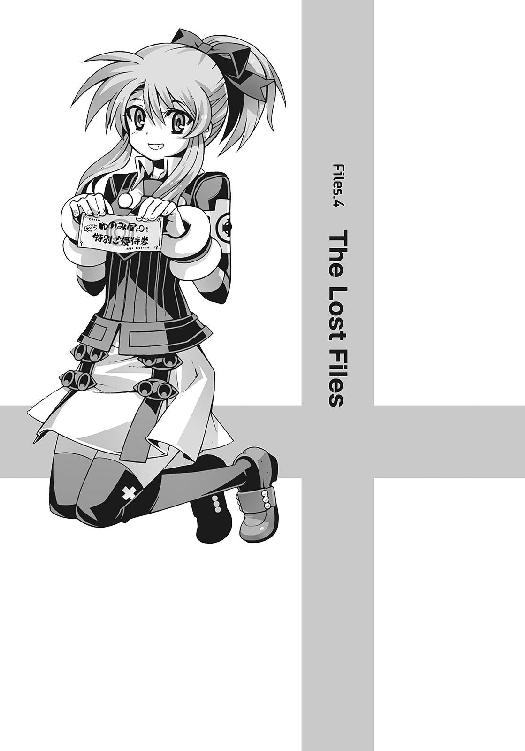
「つ、疲れた......」
夜明け前の街を、僕たちは彷徨い続けていた。
淡い朝焼けが地平線を赤く染め、白々とした光が空を満たしていく。
あと数時間も経てば街は目覚め、この道も通勤や通学の人々で混み合うようになるのだろう。
けれど今はまだ、路上に人の姿はない。
「どこまで続いてるんだよ、この街は......いい加減、歩くのにも飽きたよ」
僕はうんざりした声でつぶやいた。
今の僕たちは、自分が本来いるべき時間軸とは違う世界に存在しているらしい。そのせいか時間や距離の感覚は曖昧だ。だから実際に疲労や空腹を感じているわけではなかった。
それでも夜通し歩き続けていれば飽きるし、不安にもなる。僕たちはこの先、いつまでこの出口のない世界を彷徨い続けなければならないのだろう。
そんな焦燥を滲ませながら、僕が嘆息していると、
『まあまあ。いいじゃん、操緒が一緒なんだし。この子もいるし』
僕のすぐ隣をふわふわと漂いながら、操緒がのんきな口調で言った。そんな彼女の足下には、深紅の火蜥蜴が一匹。
普段と何も変わらない、彼女のにこやかな横顔を僕は無言で眺めて、
「はあ......」
思わず声を出して溜息をつく。操緒は、ぴき、とこめかみを引き攣らせ、
『なにその態度。腹立つなあ。こういうときは、ようやく二人きりになれたね、とかって喜ぶものでしょ!? 僕たちがこの世界のアダムとイヴになるんだ、とか言うべきでしょ!?』
「いや......この状況でそんな反応するヤツはいないだろ......」
どこまで冗談なのかわからない操緒の剣幕に、僕が困惑しながらたじろいでいると、
『相変わらずですね、あなたたちは』
クスクスと、半分呆れたような笑い声がどこからか聞こえてきた。
操緒が、おや、と緊張感のない表情で振り返り、僕はハッと顔を上げる。
「僕たち以外に......この世界に人が......？」
まっすぐに続いていた道の先、川沿いの土手に、一人の少女の姿が見える。
彼女が身につけているのは、どこかの学校の制服らしい。
朝焼けを背中に背負って立つ彼女の顔立ちは、逆光の影になってはっきりとは見えなかった。しかし口調から想像するよりも若い印象がある。僕と同い年か、もっと若い。
彼女は僕と目を合わせて、懐かしげに小さく微笑んだ。
『お久しぶりです。ようやく会えましたね、夏目智春』
妙に親しげな彼女の口調に、戸惑いの表情を浮かべたのは操緒だった。彼女は、咎めるような視線を僕に向け、
『......誰？』
「いや、知らない......けど」
本能的に挙動不審に陥った僕を、操緒はさらにジト目で睨んだ。
『ふーん......お久しぶり、ねえ』
「なんだよ、その目は。本当に覚えがないんだって」
そして逆光の中に立っていた彼女は、
『お願いがあります、夏目智春』
この場に張り詰めた微妙な緊張感をすっぱり無視して、そんなことを言ってくる。僕はわけもなく居心地の悪い気分を味わいながら、
「え？ 僕に？」
はい、と彼女はうなずいた。
『和葉のことを助けてください』
「かず......は？」
彼女の口から告げられた思いがけない名前に、僕は呆然と問い返す。
そして僕はそのときにふと、彼女の身体を透かして背後の景色が見えていることに気づいた。射影体である操緒と同じように、彼女の身体も透けている。
『お願いします。私の代わりに......あの子を......護って......』
「あ、ちょっと......！」
逆光に照らされていた彼女の輪郭が、大気に溶けこむように不鮮明になって消えていく。僕は慌てて呼び止めようとしたが、そのときにはもう彼女の姿は、完全に見えなくなっていた。
『......消えた？』
操緒が、わお、と驚いたようにつぶやいた。
「彼女も射影体だったのか？」
『わかんない......なんとなく哀音ちゃんや姫笹さんとは違うような感じがしたけど......』
意外に真面目な口調で答えてくる操緒に、僕は黙ってうなずき返した。操緒の感想は、僕が感じていた印象とほぼ同じだ。
そして謎の少女の消失と同時に、僕たちがいる街にも異変が起きていた。
東の地平線が眩く輝き、陽射しが街を赤く染めていく。その瞬間、僕たちを取り巻く世界が変質してしまったかのようにも感じられた。
「夜が明けたのか......」
僕はどこかホッとした気分で息を吐く。
目の前に広がっているのは、市内を流れる大きな川の水面だった。それを横切るように灰色の橋が延びている。ありふれた風景だったけれど、やはり朝陽に照らされた街の姿は、本能的な安心感を与えてくれる。
そのとき操緒が、突然何かに気づいたように、ふわりと空中に舞い上がった。そして彼女は、川面を横切る橋の上を指さして、いつになく焦ったような声で叫んだ。
『見て、智春！』
操緒の動揺の理由は、すぐにわかった。
橋の上に中学校の制服を着た少女が一人で立っていた。市内ではお嬢様学校として有名な、名門女子校の制服である。
そんな名門校の女子生徒が、夜も明けきらない時間から街を一人で出歩いているだけでも十分に異常事態だが、彼女は橋の上に立ち止まったまま、じっと水面を見つめていたのだ。
どう見ても、飛び降り自殺を予感させる光景である。
そしてさらに悪いことに、僕は、彼女の顔を知っていた。
「和葉って......まさか！」
直接顔を合わせたことは数えるほどしかないが、苑宮和葉は僕の妹だ。あの制服も、彼女が通っている中学校のものである。
『あ......だめっ！』
操緒が口元を押さえて呻いた。
和葉はコンクリート製の欄干に足をかけ、水面に向かって大きく身を乗り出していた。
橋の欄干から水面までの距離は、軽く七、八メートルほど。落下したら相当な衝撃のはずだ。
おまけに今は、まだ夜が明けたばかりで気温も低い。心臓麻痺とか溺死とか。とにかく飛び降りたらロクな目に遭わないことだけは確実だった。もはや迷っている暇はない。
「やめろおおおおおおおおおおおおおおお──っ！」
僕は半ば絶叫しながら、和葉に向かって駆け出した。
その叫び声に驚いたように、和葉がそのまま動きを止めた。
「......え？」
和葉は、きょとんと振り返って僕を見た。
わけのわからないことを叫びながら駆け寄ってくる僕の形相を見て、彼女は怯えたような表情を浮かべた。咄嗟に逃げだそうとでもしたのか、足を滑らせ、その場にぺたんと尻餅をつく。
駆け寄る目標を見失った僕は、慌てて立ち止まろうとするが時すでに遅く、半分脚をもつれさせるようにして勢いよく欄干に激突した。
そんな僕の後押しをするように、背後から突風が吹きつけてきたのは、その直後のことだ。風に煽られるようにして、僕の身体を支えていた欄干が、メキ、と嫌な音を立てて軋んだ。
うそだろ、と僕は表情を凍らせた。
分厚いコンクリートの欄干があっけなくへし折れ、重力に引かれて落下していく。当然、欄干に全体重を預けていた僕の身体ごと──
「う、うわあああああああああああっ」
『智春！』
唖然としたように僕を見下ろしている操緒の身体が、しだいに遠ざかっていく。
自由落下状態に特有の不快な浮遊感を予想外に長く感じながら、壊れた欄干の破片とともに、僕は水面へと落下していった。
○
僕が意識を取り戻したとき、目の前には、怒ったような顔で僕を睨んでいる少女の姿があった。和葉だ。
地味めながら全体的に整った顔立ちの和葉は、笑うとかなり可愛いのではないかと思うのだけど、僕は彼女が笑っている顔を、これまで一度も見たことがなかった。
今も彼女は、全身ずぶ濡れの僕を見下ろして、
「どうして生きてるんですか？」
咎めるように冷たく訊いてくる。
「......本気で死ぬかと思ったよ」
僕は軽く咳きこみながら、護岸ブロックの上にのろのろと上体を起こした。
橋から落ちて危うく溺れそうになりながらも、どうにか岸まで泳ぎ着いて力尽きたのだ。体中あちこちがギシギシと痛むが、特に大きな怪我はしていない。どちらかといえば、橋から落っこちたときの恐怖による、精神的なダメージのほうが大きい。
『智春は高いところダメだもんね』
操緒が他人事のように笑いながら言った。
僕は唇を歪めながら無言で息を吐く。その息がうっすらと白く曇った。この世界が真冬ではなかったのは不幸中の幸いだが、さすがに全身ずぶ濡れだとけっこう寒い。
「あなたたち、誰ですか？」
濡れた制服の上着を絞っている僕を、和葉は無表情に睨みつけたまま訊いてきた。
「誰って......覚えてないのか？」
僕は地味にショックを受けながら訊き返す。好かれてはいないだろうとは予想していたが、まさか顔まで忘れられているとは思わなかった。
そして、そんな僕に追い打ちをかけるように、
「あなたなんか、会ったこともありません」
和葉がきっぱりと言い放つ。
そんな和葉の反応を、操緒は何か気づいたようにじっと見つめて、
『智春、もしかしてこの和葉ちゃんって......』
「......僕たちと出会う前なのか？」
操緒の耳元に、僕も小声で囁き返した。
よく見ると今ここにいる和葉は、僕たちが知っている彼女よりも、どこか幼い印象があった。
僕たちが出会ったときの彼女は、中学三年生になったばかりだったから、おそらくその少し前。中一か中二のころの苑宮和葉なのだろう。
つまりここにいる和葉とは、僕たちは初対面の赤の他人ということだ。
この世界の時間の流れが、僕たちが元いた世界とは違っていても、今さらたいして驚きはしないが、面倒なことには変わりない。僕はやれやれと頭を抱えた。
「何を二人でコソコソと、わけのわからないことを言ってるんですか？」
和葉が不機嫌そうな声で訊いてくる。彼女は、壊れた橋の欄干に目をやって、
「どうしてあんなことをしたんですか。いきなり橋の手すりに向かって突っこんできたりして」
「いや、べつに手すりに向かって突っこんだわけでは......」
あの状況では無理もないが、そんなふうに思われていたのか。それではまるで、僕がただのアホみたいではないか。
「そうじゃなくて、きみを護ってくれって頼まれたんだよ」
僕は仕方なく本当のことを口にした。和葉はムッと眉をひそめた。
「頼まれた？ 誰に？」
「いや、誰だか知らないけど、女の人」
「......意味がわかりません」
和葉の呆れたようなつぶやきに、
『だよねえ』
操緒が笑いながら同意する。和葉は、そんな操緒の横顔をじっと睨みつけ、
「この人は？」
特に怯えた様子もなく僕に訊く。やたらつんけんした彼女の口調に、僕は少し辟易しながら、
「いや......まあ、僕に憑いてる幽霊みたいなものだけど......」
「それは見ればわかります」
「......驚かないのか？」
「いえ。驚いてますけど」
たいして驚いた素振りもみせずに、和葉が言う。そして彼女は、ほとんど聞こえないくらいの声で、「慣れてますから、こういうのは」と独り言のようにつぶやいた。
「だいたい、護るとか護らないとか、余計なお世話です。あなたが私に駆け寄ってきて、勝手に落っこちただけじゃないですか」
「あんなところで突風が吹くとは思わなかったんだよ」
僕は水滴のしたたる前髪を振り払いながら、苦々しく呻いた。
ついでに言うとコンクリートの欄干が、あんなふうにあっさり壊れるというのも誤算だった。手抜き工事だったんじゃないのか、あの橋。
「それに、仕方ないだろ。橋から身投げしようとしてる女の子を見たら誰だってああするよ」
僕が怒ったような口調でそう言うと、和葉は、少し驚いたように目を瞬いた。
「身投げ？ 何のことですか？」
「え？ だって、さっき......」
戸惑う僕の表情を見て、和葉は、ああ、と何か納得したように嘆息し、
「私はただ、これを破り捨てようとしていただけです」
そう言って制服の胸ポケットから、コンサートチケットほどの大きさの紙片を取り出した。手書きの原稿をコピーしただけの、やけに安っぽい印刷物である。
『なに、それ？』
好奇心を惹かれたのか、操緒がぬっと身を乗り出して訊いた。溜息混じりに和葉が答える。
「定食屋さんのチラシです」
『特別ご優待券？ わ!? 全メニュー無料ってすごくない？』
「なんで破るんだ、そんないいもの!?」
僕は思わず興奮して和葉に詰め寄った。
たしかに女子中学生には似つかわしくない代物ではあるが、貧乏な一人暮らしの男子高校生にとっては夢のようなアイテムである。しかも期間中、何度でも利用可能らしい。
「いいもの？ これが？」
和葉は、蔑むような視線を僕に向けてくる。そして、これ見よがしに優待券を僕の目の前にぶら下げて、
「欲しいですか？」
「くれるのか？」
思わず当初の目的を忘れて、本音を剥き出しにして僕は答えた。
しかし和葉は、少し思案するような間を置いて、
「あげません」
素っ気ない態度でそう言った。元どおり胸ポケットに優待券を戻し、どこか怒ったように僕に背を向ける。
「それじゃあ、私はこれで」
「ちょっと待った。待ってくれ、苑宮和葉」
僕が慌てて呼び止めると、彼女は驚いたように振り返り、今度こそはっきりと警戒の表情を浮かべた。
「どうして私の名前を知ってるんですか？」
あ、と僕は自分の失敗に気づいて、口元を押さえた。
そういえば、ここにいる和葉と僕は、初対面でお互い名乗り合ってもいなかったのだった。
見知らぬ男子高校生が、女子校に通う中学生のフルネームをいきなり呼んだら、それは普通に怪しまれるだろう。
「いや、それは、話すと長くなるんだけど......」
睨みつけてくる和葉の視線に、僕が何か言い訳をしなければと焦っていると、
「キモっ！」
やさぐれ気味の女子中学生は、そう言い残して、すたすたと歩き出した。
まさか自分の妹が、あんな可愛くない性格だったとは──
彼女の小さな背中を見つめながら、僕は弱々しく溜息をついた。
○
川沿いの広い国道を、和葉は早足で歩き続けていた。
どこか目的地があって、歩いているわけではないらしい。ただ他人の目を避けるように、ひと気のない方角を目指してふらふらと彷徨っているように見える。まるで自殺する場所を探しているようにも見えなくはない。
本人は否定していたけれど、さっきの橋の上での彼女の行動もやはりおかしかった。目を離すと何をするかわからないという不安があって、僕は彼女のあとにくっついて歩いている。
『どうするの、智春？』
何もできないまま和葉を追いかけている僕に、決断を迫るように操緒が訊いてきた。
「どうするって言われてもな......」
僕は苦悩するように頭をかく。
とりあえず話を聞いてみないことには状況がさっぱりわからないのだが、はたして和葉が、素直に話をしてくれるかどうか。
「あのさ、和葉ちゃん」
仕方ない、と覚悟を決めて、僕がおそるおそる彼女の背中に呼びかけてみると、
「和葉ちゃん、なんて馴れ馴れしく呼ぶのはやめてくれませんか」
振り返りもしないで、無愛想な答えが返ってくる。
「......じゃあ、和葉」
「呼び捨てもダメ！」
まるでお話にならない、と僕は溜息をついた。
「あのさ、なんでこんな時間に中学生が一人で出歩いてるんだ？ 学校は？」
「あなたには関係のないことです」
つっけんどんな和葉のセリフに、僕は心が折れそうになりながらも、
「でも、危ないだろ。変なのに絡まれたりしたら」
「自覚があるのなら、これ以上つきまとわないでください」
「え、僕？」
思わず立ち止まって自分を指さす僕に、和葉は冷ややかな一瞥をくれて、
「全身ズブ濡れの幽霊憑きよりも変な人なんて、そうそういないと思いますけど？」
「ぐ......」
意外に冷静な和葉の指摘に、僕は弱々しく呻いた。悔しいが何も言い返せない。なんでこんなにひねくれてるんだ、この小娘は。こいつ、こんな性格だったっけか？
「でもほら、家の人だって心配してるだろうし」
なおも僕がしつこく喰い下がっていると、
「勝手な想像でものを言わないでください！」
和葉が突然振り返って、甲高い声で怒鳴った。
「心配してくれる人なんていませんよ。お父さんは今日も夜勤だし、お母さんは、もう──」
「あ......」
彼女が目の端に浮かべている涙を見て、僕はようやく思い出す。
和葉の母親は、和葉が中学一年生のときに病気で亡くなったのだ。つまり今、僕たちの目の前にいる和葉は、母親を亡くした直後ということだ。
「ごめん」
僕は大人しく謝った。和葉は、僕のそんな殊勝な態度に、余計に苛立ちを感じたように、
「どうしてあなたが謝るんですか。関係ないじゃないですか」
「でも、ごめん」
そう言って僕は頭を下げる。和葉は怒りのやり場を失ったように激しく肩を震わせ、
「もう、私のことはほっといてください！」
乱暴な口調でそう言って、制服のスカートを翻して走り出した。
「あ、待った。ちょっと待てって──」
僕は慌てて彼女を呼び止める。
そんな僕の目の前で、和葉が突然、足を止めた。恐怖に脚をすくませたのだ。
「あ......」
和葉が弱々しいつぶやきを洩らし、その声を耳障りなブレーキの音がかき消した。
国道を走っていたトラックが、突然カーブを曲がり損ねて、立ちすくむ和葉へと突っこんで来たのだ。中央分離帯のブロックに乗り上げて、空中を舞う巨大な車体が、激しくタイヤを空転させながら和葉の小柄な身体に迫ってくる。
トラックの運転手はすでに意識を失っていたし、意識があったとしてもどうすることもできなかっただろう。
そして和葉は、自分を押し潰そうとするトラックの姿を、ただ呆然と見上げている。
「和葉っ！」
僕はそんな彼女を抱えて、そのまま地面へと押し倒す。
そんな僕たちのすぐ頭上を、トラックの巨体がかすめて行った。
○
「痛てててててて......」
生傷だらけの腕を押さえて、僕は情けない呻き声を洩らした。トラックに轢かれかけた和葉を抱きかかえたまま、アスファルトの上にヘッドスライディングしたせいである。
おかげでトラックには踏み潰されずに済んだが、代わりに全身あちこちすり傷切り傷打ち身捻挫で僕はもうボロボロだった。
『やー、派手にやったねえ』
ガードレールをぶち破り、路肩の堤防に突っこんだトラックの残骸を眺めて、操緒が不謹慎な感想を洩らしている。トラックは横転状態で、積んであった材木がそこかしこに散乱。通りがかった車の運転手たちも集まってきて、周囲は騒然となっている。
幸いなことに、トラックの運転手もそれほど重傷ではなかったらしい。運転席から抜け出して、自分で警察を呼んでいる。面倒なことに巻きこまれたくはなかったので、僕たちは騒ぎにまぎれて、こっそりと事故現場を離れることにした。
「そっちは？ 怪我はないか？」
僕は腕の傷口を自分で舐めながら、仏頂面をしている和葉に訊いた。
和葉は、じろりと横目で僕を睨んで、
「どうして私を助けたりしたんですか」
「いや、それは咄嗟に。間に合ってよかったよ」
僕はそう言って安堵の息を吐いた。目の前で義理の妹がトラックに潰される姿を目撃したら、確実に二度と立ち直れないくらいのトラウマになるところだった。
しかし和葉は、ほとんど無傷の自分の身体と、ずたぼろの僕の姿を見比べて、
「余計なお世話です。私は死んでもよかったのに」
真冬の木枯らしに似た冷ややかな口調で、吐き捨てるようにつぶやいた。
操緒が首を傾げて訊き返す。
『どうして？』
和葉は、自嘲するように小さく笑って、
「自業自得だからです」
「どういう意味だ？」
「高校生のくせに、そんな単語も知らないんですか？」
刺々しい視線で睨まれて、僕は、うぐ、と口ごもり、
「いや、言葉の意味くらい知ってるよ、いちおう......そうじゃなくて、どうして死んでもいいなんて軽々しく言うのかってこと」
「あなたたちには関係ないです」
これ以上の対話を拒絶するように、和葉は、ぷい、と顔を背けた。それでも、さっきのように立ち去ろうとしないのは、いちおう僕に命を救われたという負い目を感じているせいか。
『......それって、さっきの優待券と関係ある？』
操緒が唐突に質問した。和葉は一瞬、面喰らったような表情になって、
「これは......お母さんが私にくれたものです。自分の形見として。とっておきのプレゼントだって。こんな立派な封筒に入れて」
真面目な口調で、ぼそりと答えた。そして彼女は泣き笑いのような表情を浮かべ、
「死ぬ前の最後のプレゼントが定食屋さんのチラシなんです。どう思いますか？」
「それは......その、大事な娘が食いっぱぐれないように、という親心っていうか......」
『......中身を入れ間違えたとか？』
僕と操緒が、どうにか和葉の立場を取り繕おうと、それらしい言い訳を口にする。
しかし和葉は、それを最後まで聞こうともせずに、
「お母さんは、私が嫌いだったんだと思います......だって、あの人を殺したのは私ですから」
うっすらと笑ってそう言った。
「え？」
思いがけない彼女の告白に僕は絶句した。それを見た和葉は寂しげに目を伏せ、
「──だからもう私には近寄らないでください」
そうつぶやいて歩き出そうとする。
僕は軽く混乱したまま、無言でうつむく和葉を見つめた。彼女の母親は病死だったはずだし、もちろん和葉が母親を殺したなどと本気で信じたわけではない。しかし少なくとも和葉本人は、真面目にそう思いこんでいるらしい。ややこしい話になったな、と僕が頭を抱えていると、
『ちょ......智春......あれ！』
操緒が僕の耳元で怒鳴った。その声につられて顔を上げ、そして僕は息を呑んだ。
和葉の真横に建っているのは、解体作業中の高層ビル。その周囲を取り巻く作業用の足場が、突然の強風に煽られて大きく傾いていた。金属製のブラケットや足場板がバラバラに外れて、和葉の頭上へと次々に降り注いでくる。
「鉄パイプ!? なんでっ......!?」
「きゃ......きゃあああああああっ！」
異変に気づいた和葉が、上空を振り仰いで悲鳴を上げた。
「和葉っ！」
僕は慌てて彼女に駆け寄るが、今度ばかりは庇いようがなかった。逃げることもよけることもできないまま、ただ雪崩のように降り注いでくる鉄パイプを眺め──
「──ペルセフォネ！」
その僕の視界を、凄まじい炎が覆い尽くした。
僕たちを庇うように空中に出現したのは、古代の恐竜類に似た奇怪な生物。翼を持つ深紅の火蜥蜴だった。嵩月奏の使い魔──ペルセフォネだ。嵩月の契約者である僕を護るために、自らの判断で出現したらしい。
火蜥蜴が吐き出す地獄の業火が、爆発的な衝撃波となって広がり、落下してくる鉄パイプを薙ぎ払う。その地獄絵図のような光景を、和葉は硬直したまま見つめている。幽霊を見てもたいしてビビらなかった彼女も、さすがにこれには驚いたらしい。無理もないが。
「あ......っぶなかっ......た......」
降り注ぐ鉄パイプの雨がやむのを確認して、僕はぐったりと溜息をついた。
ペルセフォネは僕たちの背後に着地して、なおも警戒するように、低く唸りながら周囲を見回している。僕はそんなペルセフォネの喉を撫でながら、
「サンキュ......おまえがいなかったら完全に即死だったな、これは......」
そう言って再び嘆息した。どうせ助けてくれるなら、できればもう少し目立たないやり方のほうが有り難かったのだが、そんな贅沢が言える状況でもなかった。
どうもこの使い魔は、一度暴れ出すとやることが派手でいけない。そのあたりは召喚主である嵩月の性格によく似ている気がする。
「あなた......何者なんですか......もう近寄らないでって......言ったのに......」
地面にぺたりと座りこんだ和葉が、怯えたような表情で僕を見上げていた。
僕は弱々しく微笑んで、彼女に手を伸ばし、
「だから頼まれたんだって。きみを護ってくれって......」
「誰がそんな余計なことを......」
差しのべられた手を拒絶するように、僕を睨んで和葉は言った。
だからそれが誰かわからないんだよ、と口の中でつぶやきながら、僕はべつのことを考えていた。
最初の橋の上での身投げ騒ぎが僕の勘違いだったとしても、そのあとのトラックの暴走とビルの足場の倒壊では、一歩間違えば確実に和葉は死んでいた。僕に和葉を護れと言ったあの少女は、こうなることを知っていたのだろうか。だとしたら彼女はいったい何者だ？
それに、ただの偶然で片付けるには、さっきの事故はあまりにもタイミングが良すぎた。
まるで和葉を巻きこむために、事故が引き起こされたようにも感じられた。
だがそれでは、和葉が誰かに呪われているみたいじゃないか、と僕は思う。
『ペルペル......？ どうしたの？』
そのとき操緒が、低く唸りだした火蜥蜴の姿に気づいて振り返る。
火蜥蜴が睨んでいたのは、崩れ落ちたビルの足場がかつてあった場所──
今はもうなにもない虚空に、重力を無視して、うっすらと透きとおった少女が浮かんでいた。もはや全身の輪郭すら曖昧な、今にも消えてしまいそうなその姿は──
『射影体!?』
「うそ......だろ!?」
呆然とする僕たちの前で、その歪な姿の射影体は、ゆらりと揺らいで幻のように消えた。
最初に僕たちが出会った幽霊の少女とは違った。あれは間違いなく副葬処女の射影体だ。しかし、本来なら射影体の近くにいるはずの演操者の姿はどこにも見あたらない。どういう理屈なのかはわからないが、あれが異常な射影体であることだけは明らかだ。そして──
「い......いやああああああああああああああああああっ！」
その射影体の姿を見た和葉が、頭を抱えながら絶叫した。
地面にうずくまって震えながら、彼女は放心したような表情で謝り続ける。
ごめんなさい、ごめんなさい、ごめんなさい、ごめんなさい、ごめんなさい、ごめんなさい、お母さん......
○
僕は気絶した和葉を背負って、近くの公園まで連れて行った。
自販機で飲み物を買って戻ってくると、和葉はベンチの上で膝を抱えたまま、火蜥蜴の背中を撫でていた。実は動物好きだったらしい。
「少しは、落ち着いた？」
僕はそう言ってペットボトルの紅茶を差し出した。和葉は、意外にも素直に頭を下げてそれを受け取り、
「......やっぱり......呪われてるんですね、私」
痛々しい表情で笑ってみせた。僕は困惑の視線を彼女に向けて、
「呪われてる？」
「......お母さんに、あんなひどいことを言ったから......だから......」
和葉は紅茶をすすりながら、ぼそぼそとその出来事を語り始めた。
それは、和葉の母親が最後の手術を行う前日のことだったらしい。
取るに足らない些細な理由で、和葉は母と喧嘩した。喧嘩というよりも、一方的に罵ったというほうが近いかもしれない。
多忙な父親と入退院を繰り返す母親。独りぼっちで過ごす毎日。そうやって積もり積もった孤独や不安を、和葉は、すべて病弱な母のせいだと決めつけて彼女を罵倒した。
──あんたなんかいなくなっちゃえ！
その言葉を聞いたとき、母が浮かべた悲痛な表情。そのとき和葉は突然、自分の犯した罪の大きさを知った。そして猛烈に恐怖した。
病室を飛び出した和葉は、病院の中庭で震えながら泣いた。
ほんとうに母がいなくなってしまったら、それはそんな言葉を口にした自分のせいだと信じて恐怖に震えた。謝らなければ、と何度も思った。しかし面会時間は終わっていたし、自分にはもう母に会う権利がないような気がしていた。
母の病状はその日の夜に急激に悪化した。
和葉が知らないうちに緊急手術が行われ、そして和葉は母に謝る機会を永遠に失った──
「だから、きみのお母さんが、きみを呪ってるっていうのか？」
僕は、震える和葉の指先を見つめながら訊いた。
「ほかにどう説明するんですか？」
少し怒ったような目つきで、和葉が睨む。
「だけど......それくらいのことで母親が実の娘を殺そうとするなんて......」
「今日のことだけじゃないんです。ここしばらくの間に何度も、さっきみたいな事故に巻きこまれそうになって──」
和葉がムキになったような口調で言った。操緒が、ああ、と何かに気づいて、
『もしかして、智春に近づくなって言ってたのは、あたしたちを巻きこまないように？』
「か、関係ないです」
和葉は、そう言って目をそらす。その頬がかすかに赤くなっていた。
僕は笑いを噛み殺しながら、なんだ、と少し安心する。どうやら今までの反抗的な態度は、彼女なりの強がりだったらしい。むしろこっちの不器用でお人好しなところが、彼女の本性なのだろう。可愛くない、なんて言って悪かったな、と思う。
「......さっきのは、きみのお母さんなんかじゃないよ。あれは......機巧魔神の射影体だ」
僕は不意に真面目な表情を作って言った。おそらく信じてはもらえないだろうが、今さら中途半端な嘘で誤魔化すよりは、真実を告げたほうがいいと思ったのだ。
しかし和葉の反応は、少し意外なものだった。
彼女は、なぜか不愉快そうな瞳で僕を睨んで、
「咲華と同じようなことを言うんですね」
うんざりしたような口調でぼそりとつぶやいた。
「咲華？」
「なんでもないです」
そう言って、僕から目を背ける和葉。
彼女の謎めいた反応に、僕が話の接ぎ穂を見失っていると、
『んー......和葉ちゃんのお母さんって、悪戯好きだった？』
操緒が突然、あまり関係なさそうな質問を口にした。
和葉も戸惑ったように眉を寄せて、
「なんのことですか？」
しかし操緒は平然と質問を続ける。
『サプライズパーティとか、好きじゃなかった？』
「......元気だったころは、よくそんなこともやってましたけど......それと何の関係が？」
訊き返す和葉の言葉を無視して、操緒はさらに質問を重ねた。
『和葉ちゃんって、中学一年生だよね。水瓶座？』
「どうしてそんなこと訊くんですか？」
『正解なんだ』
そう言って操緒はニヤリと微笑んだ。和葉が、ぐっ、と言葉に詰まる。
もちろん僕には、操緒が何を確かめようとしているのか理解できなかった。しかしこんなときの操緒の行動には、必ず何か意味があることは知っている。
『ねえ、行ってみよ。さっきのチラシの定食屋さん』
そして操緒は唐突に、和葉の胸ポケットを指さしてそう言った。
和葉が驚いたように時計を見て、
「こんな時間にですか？」
『ちょっと確かめたいことがあるの。話を聞くだけでも』
操緒がめずらしく強引に誘う。時刻はお昼少し前。制服姿の女子中学生が定食屋に出入りするには、敷居の高そうな時間帯だ。
「どうして私がそんなことにつき合わなければいけないんですか」
和葉はそう言ってなおも渋るが、
『あれ、恐い？』
操緒が、ものすごい笑顔を浮かべて訊き返す。僕はやれやれと溜息をついた。こんなときに相手を挑発させたら、操緒の右に出る者はいないのだ。
予想どおりというか何というか、和葉は思わずムッとして、
「こ、恐くなんかないです。いいです、行きますよ」
『オッケー、じゃあ、行こう行こう』
やたら楽しそうな表情で腕を振り上げ、さっさと動き出す操緒。そんな幽霊の少女のあとを渋々追いかけながら、和葉は、この世の終わりを見たかのような深い溜息をついた。
○
店の入口の暖簾には、『ゆのみ屋』という店名が印刷されていた。ビジネス街の外れにある、ありふれた大衆食堂だ。
「ここが例のチラシの店か......」
優待券に記された住所と見比べながら、僕は店構えを観察する。こぢんまりとしているが、なかなか居心地のよさそうな店だった。部活帰りの高校生あたりが立ち寄っても、それほど違和感はなさそうだ。
「どこからどう見てもただの定食屋さんじゃないですか」
和葉がふて腐れたような口調でつぶやいた。たしかに彼女の言うとおり、特に変わったところは何もない。シンプルすぎる店名に、母親が和葉のために残したメッセージが隠されているとも思えなかった。
『けっこう美味しそうだけどね。まだお昼前なのに、お客さんもけっこう入ってるし』
しかし操緒は、なぜかうきうきとした様子でそんなことを言う。
僕はやれやれと溜息をついて、
「せっかくだから何か食べていくか......」
「この優待券が目当てだったんですか。呆れた人たちですね」
和葉が横目で僕を睨んだ。僕は苦笑しながら首を振り、
「いや、自分の食べるぶんくらいは払うけど。それに、和葉だってしばらく何も食べてないんだろ？」
「だから馴れ馴れしく呼び捨てにしないでください。私はおなか空いてませんから──」
顔を背けたままそう言った和葉のお腹が、お約束のようにタイミングよく鳴った。気まずい沈黙が、店頭に立ち尽くす僕たちに降りてくる。
「いや、ほら、仕方ないよ。ご飯の匂いを嗅いだから......」
「わかりました。食べればいいんでしょ、食べれば！」
苦し紛れの僕のフォローに、和葉は耳まで赤くなりながら扉を開けて、ゆのみ屋の中に入っていく。四人がけのテーブル席に、学生二人と幽霊一人で堂々と座って、
「僕はアジフライ定食を。で、こっちの彼女は......」
「オムライス」
注文を取りに来た店員は、少しだけ訝しげな顔をしながらも、特に文句は言わずに愛想よくお茶とおしぼりを出してくれた。
「オムライス好きなんだ？」
手持ちぶさたになったので、僕は無難そうな話題を振ってみる。
しかし和葉は、人に馴れない子猫のように、警戒心もあらわに僕を睨んで、
「子どもっぽいとか思ってるんでしょ」
「いや、そんなことは......」
実は少し思っていたので、図星をさされて僕は口ごもる。
ゆのみ屋は、若い夫婦が二人で切り盛りしている店らしかった。特におしゃれという感じはしないが、店内は明るく雰囲気がいい。料理の値段もリーズナブルだ。
しばらく待って運ばれてきた料理も、細かいところまで心配りの行き届いた、実に美味そうな御馳走だった。揚げたてのアジフライは肉厚。山盛りのキャベツには自家製のドレッシング。炊きたての大盛りご飯に、具だくさんの味噌汁。付け合わせの小皿と茶碗蒸し。高級食材こそ使われていないが、圧倒的に食欲をそそる。
「いいね、この雰囲気。家庭の味って感じで......和葉？」
待ちきれずに料理に手を着けようとした僕は、アジフライに箸を突き刺したところで、ふと正面に座る和葉に気づいてぎょっとする。
彼女は運ばれてきたオムライスを見つめたまま、目を見開いて固まっていた。
震える唇が、ぽつりと言葉を零した。
「うそ」
顔色を蒼白にしたまま、彼女はオムライスを口に運ぶ。握られていたスプーンが落ちて、皿の上で澄んだ音を立てる。
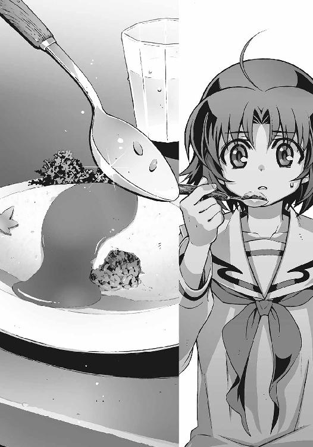
「うそよ......そんなはず......ない」
僕は声をかけることもできないまま、呆然と和葉の顔を見つめる。
見開かれた和葉の瞳から、あふれ出した涙が頬に流れ落ちた。
僕には何が起きているのかわからない。ゆのみ屋のオムライスをひと口食べた途端、和葉は、ボロボロと涙を流して泣き出したのだ。
「......お母さんの料理の味......どうして......」
ほとんど聞き取れないくらいの涙声で、和葉がようやくそれだけ言った。
僕は驚いて操緒を見た。操緒は優しげな眼差しで、泣き続けている和葉のことを見つめている。どうやら操緒には最初から、こうなることがわかっていたらしい。
「あなたが、和葉ちゃん？」
泣いている和葉にハンカチを差し出しながら、優しい声で店員が声をかけてくる。定食屋の若夫婦の奥さんのほうだ。
驚いて顔を上げた和葉を見て、奥さんは愉しげに微笑んだ。
「昔の紅葉にそっくりだからすぐにわかったわ」
「お母さんのことを知ってるんですか？」
ぐしぐしと涙を拭きながら、和葉が訊き返す。ゆのみ屋の奥さんはうなずいて、
「中学生のころからの親友よ。私はよその土地で修行してたんだけど、最近になってこの町に戻ってきたの。紅葉が亡くなる直前にね......」
寂しげな口調でそう言った。
「このオムライス......どうして......」
テーブルの上の料理を指さして、和葉が尋ねる。奥さんは少し得意げに笑って、
「あなたのお母さんに頼まれてたのよ。あなたが来たら、作ってあげて欲しいって。いちおうレシピどおりに作ったんだけど、上手く再現できてたみたいね。よかった」
「え？」
「オムライスだけじゃないわ。ほかにもこんなに、あなたの好きな食べ物のレシピ」
そう言って奥さんが見せたのは、分厚く膨らんだノートだった。
ノートの中には、びっしりと手書きで料理のレシピが書かれている。
書かれているのは食材の分量や調理時間だけではない。和葉の食べ物の好き嫌いに合わせて、苦手な食材の代用品や、特別な調理法、そして隠し味や盛りつけのやり方まで所狭しと彼女に美味しく食べさせるための秘訣が記録されていた。
そして、それぞれの料理を和葉が初めて食べた日の日付と、その日の思い出も──
「紅葉は、自分がもう長く生きられないって気づいてたみたいね」
ゆのみ屋の奥さんが、微笑みながらつぶやく。
「だから紅葉の代わりに、あなたに料理の作り方を教えてあげてくれって頼まれたの。自分は何も残してやれなかったからって......最後まで、あなたのことが大好きだったのよ、あなたのお母さんは」
自分の母親の親友の言葉を、和葉は泣きながら聞いていた。
彼女はようやく母の死の重圧から解放されたのだ。母が残してくれた愛情によって──
僕は定食を大急ぎで平らげると、泣いている和葉と自分のぶんの食事代を残して店を出た。
本来、僕はここにいるはずのない人間だし、和葉の邪魔をしたくなかったのだ。
「どうして気づいたんだ、操緒？」
ゆのみ屋の暖簾をくぐりながら、操緒に訊く。どうして操緒は、ここに来れば和葉が救われると確信していたのか、その理由がさっぱりわからない。
『それは、ほら、優待券の有効期限』
操緒はにっこりと微笑んで、ちっちっ、と指を振る。
「優待券って、和葉が持ってたあれか」
『有効期限が七年後になってたの気づいてた？ たぶん、あれは和葉ちゃんの二十歳の誕生日。彼女が大人になるまで......ってこと』
「そういうことか......だけど、なんでそんな回りくどいことを......」
呆れたようにつぶやく僕を見て、操緒は小さく肩をすくめ、
『だから最初に訊いたでしょ。和葉ちゃんのママは、悪戯好きだったか、って』
「なるほど......」
僕は溜息混じりに苦笑した。いろいろ回り道があったけれど、母親の真意は、無事に和葉に届いたということだ。これでもう和葉が母親の呪いに怯える必要はない。
「すると残る問題は......」
僕がそう言って生傷だらけの自分の腕をさすったとき、ゆらり、と大気を揺らして僕たちの前に深紅の火蜥蜴が現れた。
『ペルペル......？』
唐突な使い魔の出現に、操緒も警戒の表情を浮かべる。
火蜥蜴はグルグルと低く唸りながら、裏通りの交差点を睨んでいる。
ひと気のない横断歩道の上に、ゆらゆらと音もなく浮かび上がったのは、奇妙に歪んだ射影体の少女だ。そして空中を漂う彼女の足下、路上のアスファルトの色が変わる。
暗い虚無の闇の色へと。
その闇を引き裂くようにして出現したのは、機械仕掛けの巨大な人形の腕──
錆びた甲冑に身を包んだ、機巧魔神の腕だった。
○
その機巧魔神は、本来は純白の美しい機体だったのだろう。
しかし激しい戦闘の痕跡なのか、全身のあちこちが傷ついて、内部の機関が露出していた。全身を包む甲冑は錆びつき、左半身の鎧はほとんど残っていなかった。
頭部の仮面も失われて、骨格が剥き出しになっている。それはまるで機巧魔神の亡霊を見ているようだった。
「射影体が......演操者なしで機巧魔神を操っているのか......!?」
主を失った機巧魔神が、全身を軋ませながら咆吼する。
その異様な光景に、僕は動揺を隠せなかった。
錆びた機巧魔神の双眸が緑色に発光し、その全身から、爆発に似た凄まじい衝撃波が放たれる。
「──ペルセフォネ！」
僕が命じるよりも先に、低く身構えていた火蜥蜴が爆炎を吐き出した。それは正面から機巧魔神の攻撃と激突し、凄まじい乱気流を巻き起こして対消滅する。
『どうして......』
錆びた機巧魔神が──その中に封印された副葬処女の少女が、慟哭にも似た悲痛な叫び声を上げる。
『どうしてなの、咲華......どうして私を見捨てて......』
彼女の言葉を聞いた操緒が、愕然とした表情で口元を押さえ、
『智春、この子......』
「......暴走してるのか、演操者を失った機巧魔神が！」
僕は背筋が凍るような恐怖を覚えた。自らが消滅するよりも先に、演操者を失ってしまった機巧魔神はどうなるのか──
その答えが、目の前にあるこれだった。
母艦である次元潜行チェンバーに戻ることもできず、どこともしれない異空間を永遠に彷徨う、機巧魔神の亡霊──
射影体の少女が、自らの機巧魔神の名前を叫ぶ。
『──玻璃珠！』
錆びた機巧魔神が、骨格を剥き出しにしたボロボロの左腕を伸ばした。その腕から放たれたのは、爆撃にも似た衝撃波だ。
「この爆風......大気そのものを操る機巧魔神か!?」
錆びた機巧魔神の攻撃で、周囲の建物のガラスが砕け散り、路駐していた車が次々と横転する。その光景には見覚えがあった。和葉を目がけて突っこんできた暴走トラック。そして、倒壊したビル工事現場の足場。
和葉の命を狙っていたのは、母親の呪いなどではなかった。
あれは機巧魔神の攻撃だったのだ。
『智春......！ お願い......彼女を......』
操緒がすがるような口調で僕に囁いた。
「わかってる」
僕はそう言って奥歯を軋ませる。自我を失って暴走状態の副葬処女は、このままでは自らの魂のすべてを魔力に変換して消滅するだろう。
彼女を救う方法は、もう残されていない。暴走する機巧魔神の贄として消えるよりは、ここでその暴走を止められた方が、彼女にとっても幸福なはずだ。
たとえそれが彼女の死を意味しているとしてもだ──
「来い、鐵──！」
僕の足下の影が色を変えた。闇よりもさらに暗い虚無の色へと。
その影の形がいびつに歪んだ。闇色の輪郭を無理やりこじ開けるようにして、なにか巨大なものが浮かび上がる。それは人形の腕だった。漆黒の鎧をまとった機械の腕だ。
どこに続くともしれぬ虚無の空間から出現したのは、機械仕掛けの巨大な悪魔。
漆黒と、眩く輝く銀色の二色の装甲をまとった機巧魔神──鐵・改。
「きみが......なぜ和葉を狙ってるのか知らないけど......うちの妹を傷つけることは許さない」
錆びた機巧魔神が、爆風を放った。
鐵の右手の剣が一閃して、空間そのものを切断する。爆風はその空間の裂け目へと吸いこまれ、僕の髪を揺らすこともなく消滅した。
錆びた機巧魔神が、動揺したように全身を軋ませる。
「......だからきみの罪は、僕が背負うよ」
鐵の左手が拳を握る。その指の隙間から洩れ出したのは、漆黒の闇──
光すら逃れられない超重力の塊を握りしめ、鐵はその左腕を突き出した。
幾重もの魔方陣が砲身のように前方に伸びていき、その魔方陣をくぐり抜けるごとに漆黒の重力球が加速する。そして巨大な砲弾と化した重力球が、錆びた機巧魔神の胸部を直撃した。
無数の部品をまき散らしながら、錆びた機巧魔神の機体が崩れ落ちていく。
『......咲......華............サ......イカ......』
半壊した機巧魔神が、ギシギシと関節を軋ませながら、ぎこちなく腕を伸ばした。どこか悲愴さを感じさせる光景だ。
その錆びた機巧魔神の腕に、近づいてきた誰かがそっと触れた。
白い制服を着た小柄な少女だった。それは、ゆのみ屋に残してきたはずの和葉だった。
「......和葉？」
僕は彼女の名前を呼んだ。しかし和葉は反応しなかった。
彼女は、傷ついた機巧魔神の姿を愛おしげに眺め、別人のような口調でつぶやいた。
「ごめん......こんなになるまで、私の傍にいてくれたのね......」
彼女のその言葉を聞いて、錆びた機巧魔神の機体が小さく震えた。
それきり機巧魔神は動きを止めて、剥き出しになっていた無数の歯車たちも停止する。そして、その機体がゆっくりと色をなくしていった。
「非在化......」
僕は小さく独りごちる。透明なガラスのような結晶と化した機巧魔神が、さらさらと砂のようにこぼれ落ちていく。
やがて完全に非在化が進んで、その機巧魔神は、跡形もなくこの世界から消滅した。手の中に残された、水晶のような破片を眺めて、少女が静かに首を振る。
「きみは......誰だ？」
和葉と同じ顔をした少女に、僕は訊いた。彼女は泣き笑いのような不思議な表情を浮かべ、
「私は、咲華よ。この子の中にある、もうひとつの人格」
和葉の身体に触れながらそう言った。
「私と和葉は、双子だったの。だけど、二巡目の世界では、私は生まれてこなかった。今は魂だけが和葉の中に居候してる状態ね......つまり、私は本物の幽霊なのよ」
「その幽霊が......どうして機巧魔神のことを知ってるんだ？」
咲華と名乗る少女を見つめて、僕は訊いた。彼女は淡く微笑んで、
「一巡目の世界での私は、あなたと同じ演操者だったのよ、夏目智春。玻璃珠は私の機巧魔神だったの。だけど私は、私たちの望みを果たす前に命を落としてしまった──副葬処女を残したまま」
泣きそうな表情の彼女を見つめて、僕は呆然と息を吐く。
「きみは......一巡目の記憶を......」
「この世界に生まれてこなかった代償として、私は一巡目の自分の記憶を受け継いだみたい。玻璃珠が求めていたのは、和葉じゃなくて私よ......何の罪もないこの子を、私のせいでずいぶん危険な目に遭わせてしまったわ」
そう言って咲華が目を伏せた。
そういうことか、と僕はようやく理解する。あの錆びた機巧魔神は、和葉の命を狙っていたのではない。彼女の中にあるもうひとつの人格が、機巧魔神を引き寄せていたのだ。
かつて失ってしまった演操者を、あの機巧魔神は探し続けていたのだ。あんな無残な姿になってまで。
だから咲華は、僕を喚んだのだろう。
僕たちの共通の妹である、和葉を護らせるために──
「ありがとう。和葉のことを護ってくれて」
咲華がそうつぶやいて、今度こそはっきりと微笑んだ。僕は小さく溜息をついて、
「これは......二年前に本当にあったことなのか？ だから和葉は、僕と初めて会ったときにあんなに驚いて......」
咲華はその質問に答えずに、ただひらひらと手を振っただけだった。
「この借りは、必ず返します。いつか、そう遠くない未来に」
「待ってくれ、きみは──」
そう言いかけた僕の視界が、ゆらりと揺らいだ。歪んだ鏡に映った鏡像のように、世界のすべてが焦点を失って曖昧にぼやけていく。世界が夢から覚めるのだ。
そして完全にその世界が消滅する寸前、僕は彼女の声を聞いた。
「その日まで、さよなら。和葉の大好きなお兄ちゃん──」
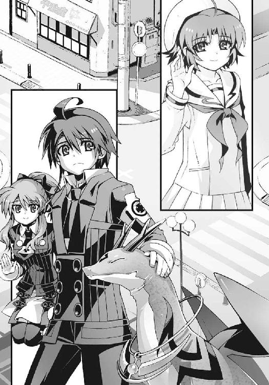
∴ エピローグ
午後の洛和高校。口先輩に教えてもらった化学準備室は、理科教室棟という、なにやら研究所っぽい校舎の一階にあった。化学教室に隣接した細長い部屋だ。
壁際に薬品や教材を収めた戸棚が並んでいて、中央に教員用のスチール机と、水道のついた作業机が置かれている。
この雑然とした小さな教室が、兄が所属している科學部の部室らしかった。
「緊張するね」
私はそう独りごちながら、入口のスライド扉に手をかけた。
うららかな春の陽射しが、校舎を明るく照らしている。なのに、なぜかこの教室の周囲には、不穏な空気が渦巻いているように感じられた。
気のせいだと自分に言い聞かせながら、私は、化学準備室に足を踏み入れる。
そこに待ち構えていたのは、ある意味、異様な光景だった。
「............」
見てはいけないものを見た。そう思って、私は入ったばかりの化学準備室から出ようとした。だが、その前に準備室の中から声をかけられる。
「いらっしゃい、和葉ちゃん」
「う......」
私は弱々しく呻きながら、仕方なく背後の扉を閉めた。
これで完全に退路を断たれたことになる。そのことに軽い焦りを感じる。
そんな私をにこやかに見つめて手を振っていたのは、パイプ椅子にちょっとだらしなく座った八頭身の女子生徒だった。第三生徒会長の黒崎朱浬さんだ。逃げようとした私を目ざとく見つけて、声をかけてきたのも彼女である。
そして作業机を挟んで彼女の向かい側に座っていたのは、金髪碧眼の女子生徒──
黒崎会長と一緒に空から降ってきて、私を噛んで立ち去ったあの外国人の少女だ。
どうしてよりによってこんなところで、彼女たちと再会しなければならないのか。まったくわけがわからない。しかし、ひしひしと悪い予感がする。
こんなときに限って咲華は何も言わない。うろたえる私を見て、面白がっている気配が伝わってくるだけだ。
「あの......黒崎会長。どうしてここに？」
仕方なく私は自分から彼女に質問する。彼女はにっこりと微笑んで、
「だってあたし、ここの部長だもの」
「ぶ、部長？」
「さすがに生徒会とかけ持ちするのはきついから、公式には休部中だけどね」
「あ......」
そういえば口先輩が自分は部長代理だと名乗っていたが、それはこういう意味だったのか。
「あの......じゃあ、そちらの彼女は......」
金髪の少女を怖ず怖ずと眺めながら、私は遠慮がちに質問する。
彼女は美しい碧眼を不機嫌そうに眇めて、
「アニアだ......アニア・フォルチュナ・ソメシュル・ミク・クレウゼンブルヒ──」
「へ？ あ、あに......あにゅちゅらぶるひ......？」
長っ、と私は愕然とする。なにそれ。どこまで名前でどこから名字？
困惑する私を見て、彼女は軽蔑したように溜息をつき、
「また会ったな、苑宮和葉。ニアと呼べ」
そう言って犬歯を剥いてニヤリと笑った。なまじ人形のような可愛らしい顔立ちをしているだけに、余計に恐い。この少女もどうやら科學部の関係者らしい。
そして彼女たち二人の背後──
科學部の部室の隅には、もう一人の部員の姿があった。
艶やかな長い黒髪の女子生徒。おそろしく整った顔立ちの、人間離れした美少女だ。
『和葉、あの人......』
咲華が驚いたように私に言った。私は、うん、と頼りなくうなずく。
その黒髪の少女のことを、私たちは知っていた。
鳴桜邸に私たちが引っ越してきた最初の夜に、謎のトランクを持ってきた黒いコートの少女。誰も知らないはずの咲華の存在を見抜いたあの人だ。
「お茶......」
その彼女が、正面からじっと私を見つめて唐突に口を開いた。私はようやく我に返って、
「え？」
「お茶、どうぞ」
「あ、すみません......ありがとうございます......」
そう言ってしまった手前、なんとなく座らなければいけないような雰囲気になってしまって、私はもたもたと空いていたパイプ椅子に腰掛ける。おかげで完全に逃げられなくなってしまった。私の生存本能が、この空間は危険だとさっきから訴えているのだが。
それでなくてもこんな規格外の美少女たちに囲まれてしまうと、私のような一般人は居心地が悪くて仕方がない。
黒髪の美少女が、教師の私物らしいマグカップにお茶を注いでくれる。
私は、彼女の芸術品のような横顔をじっと見上げて、
「あなたが......嵩月奏さん、なんですか？」と訊いた。
彼女は、目を細めて柔らかく笑った。
「意外に、早かったですね」
「え？」
「この部室に辿り着くのが──」
彼女のその言葉を聞いて、私はようやく理解した。謎トランクを私に手渡したとき、彼女が名乗らなかった理由。彼女は私を試したのだ。あの謎トランクの正体を知る権利。そして兄の行方を知る覚悟が本当にあるのかということを──
「さあ、それじゃあ始めましょうか」
黒崎会長が笑いながら脚を組み直す。私は不安に声を震わせながら、
「始める......って、何をですか？」
「作戦会議」
ニヤリ、と攻撃的な笑みを浮かべる黒崎会長。さ、作戦？
「智春と操緒を、この世界に連れ戻す。おまえもそのためにここに来たんだろう？」
ニアちゃん先輩に訊かれて、私はハッとする。操緒というのは、たしか兄に憑いている幽霊のことだったか。彼らをこの世界に連れ戻す、ということは、二人は今、ここではないヨソの世界に行っている、ということなのだろうか。いったい何を考えているんだ、あの人たちは。何をどうやったらそんなことに──？
「聞かせてください。お兄ちゃんは、ここで何をやってたんですか？」
私は目の前の黒髪の少女を見つめて訊いた。
「知りたい、ですか？」
彼女は真っ直ぐに私を見返して確認する。まあ、いいんじゃない、と気軽な口調で言う黒崎先輩。ニアちゃん先輩も、どうせ暇だしな、と無責任にうなずいた。
クス、と嵩月先輩が小さく微笑み、彼女は懐かしいものを見るような視線を窓の外に向けた。
季節は春。洛和高校の入学式の日──
校庭に咲いた桜の花びらが、美しい雪のように窓の外を舞っている。
「ほんの少しだけ長い話です......そう、あれは一年前の入学式の日......」
彼女はそう言って語り始める。
それは魔神相剋者と呼ばれた少年のお話。
幽霊憑きの少年と、幼なじみの少女の物語──
あとがき
いきなりですけど、言葉の影響力は大きいです。なんかもうギリギリまで追い詰められてて逃げ出したいけど逃げられないという絶望的な状況で、それでも心を支えてくれるものがあるとしたら、それは「大丈夫だよ」と言ってくれた誰かの無責任な一言だったりする気がします。
騙されてるっちゃ騙されてるんだけど、そこは嘘でもやっぱり励まして欲しいし。
で、その誰かというのは、家族だったり、友人だったり、たまたまその場に居合わせた通りすがりの人だったりするんでしょうが、物語の中の登場人物の言葉にも、そんな力があると信じたいです。この『アスラクライン』という作品も、そんなふうにいつか誰かの支えになればいいなと願いながら書いてました。もしかしたら支えられていたのは、実は書いてた自分のほうだったのかも知れませんが──
そんなわけで、十四冊目の『アスラクライン』をお届けします。
この作品は、基本的に智春といつもの仲間たちのエピソードなのですが、その一方で、和葉という新しい主人公の物語でもあります。といっても、そんなややこしい話ではなくて十三巻のラストからの続きです。その後の智春たちがどうなっているのか。そして咲華の正体や、智春に出会う前の彼女たちに何があったのか──そんな感じのミッシングリンクが埋まるのを、楽しんでもらえると嬉しいです。
『アスラクライン』というシリーズは、この巻でいちおうの一区切りということになります。今後の予定については今のところ完全に白紙です。この先、和葉たちが巻きこまれるであろう事件のことや、そのほかのキャラクターの外伝なんかは、またどこかで形を変えて描きたいと思ってますが、今はとりあえずみんなにお疲れ様と言ってやりたいです。登場人物たちにとっては過酷な作品だったと思うけど、なんとか乗り切ってくれてありがとう。感謝してるよ。
とはいえコミック版『アスラクライン』や、アニメ版『アスラクライン２』のＤＶＤ等のリリースもまだまだ続きます。どちらもそれぞれ原作とは違うアレンジで、原作以上に魅力的な物語が描かれていますので、未見の方はぜひお手に取ってみてください。
個人的なことですが、この『アスラクライン』という作品のおかげで、本当に多くの方々に出会うことができました。そんなふうに大勢の人たちがこの作品に関わってくれたことが、自分にとってはいちばんの喜びでした。
素晴らしいイラストで『アスラクライン』の世界を描き出してくださった和狸ナオ様。毎回送っていただいた魅力的なキャラクターたちのデザイン画には、執筆中に何度も力づけてもらいました。本当にありがとうございます。
コミック版を担当してくださっているあきづきりょう先生。小説では完全に表現できなかった、私が本当に見たかった『アスラクライン』の世界がコミック版では再現されてて、毎号すごく幸せな気分を味わっております。今後ともなにとぞよろしくお願いします。
草川啓造監督をはじめ、アニメ版制作に関わっていただいたセブン・アークス様とスタッフの皆様。スターチャイルド様と関係各社の皆様。素晴らしい演技を披露してくださった声優の皆様。大変お世話になりました。おかげさまで、この原作には勿体ないほど良い作品になったと思います。主題歌を担当してくださったangelaのお二方。まじハンパなくカッコイイ曲を『アスラクライン』に与えてくださって狂喜乱舞しております。本当に感謝です。
担当ユザワ様と電撃編集部の皆様、本書の出版に関わっていただいたすべての皆様にもこの場を借りてお礼を申し上げます。
そして、この作品にここまでおつき合いくださった読者の皆様、この本を手にとってくださった貴方──みんなのおかげで、『アスラクライン』を世に送り出すことができました。
本当に本当にありがとう。
この本が出版されるころには、三雲は、ぼちぼち次の作品の準備を始めているはずです。詳しい内容はまだ未定なのですが、以前からずっとやりたかった作品に、そろそろ挑戦したいと思っています。もしその作品をどこかで見かけて気が向いたら、どうかチラッと手にとってやってください。
また他社の作品の宣伝になってしまうのですが、角川スニーカー文庫から『ダンタリアンの書架』というシリーズが現在刊行中です。第一次世界大戦直後のイギリスっぽい世界を舞台に、黒の読姫と呼ばれる少女ダリアンと、没落した貴族の青年ヒューイが活躍するダークファンタジーです。もしよろしければこちらもぜひ。
さてそれでは、繰り返しになりますが。
この長いシリーズに最後までおつき合いくださった皆様、本当にありがとうございました。
またどこかで、お会いできれば幸いです。三雲岳斗でした。
三雲岳斗
このシリーズを始めたころにコーヒーが好きになりました。そのせいかアスラクラインの執筆は、いつもコーヒーを淹れてから始める習慣でした。この先もどこかでコーヒーの匂いを嗅ぐたびに、智春や操緒たちのことを思い出すような気がしています。
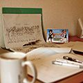
和狸ナオ
１９７６年生誕の千葉県民。くじ運は最低ながら本作の挿絵を描かせて頂き、実はすごく仕事運が良いのでは...?!と人生見直しております。遅咲きな絵描き兼ぬるいゲーマーですが、よろしくどうぞ。
電撃文庫
アスラクライン⑭
TheLostFiles
三雲岳斗
二〇十二年八月二十四日 配信
発行者 塚田正晃
発行所 株式会社アスキー・メディアワークス
〒一〇二−八五八四 東京都千代田区富士見一−八−十九
(C)2010 GAKUTO MIKUMO／ASCII MEDIA WORKS
本書（電子版）に掲載されているコンテンツ（ソフトウェア／プログラム／データ／情報を含む）の著作権およびその他の権利は、すべて株式会社アスキー・メディアワークスおよび正当な権利を有する第三者に帰属しています。
法律の定めがある場合または権利者の明示的な承諾がある場合を除き、これらのコンテンツを複製・転載、改変・編集、翻案・翻訳、放送・出版、公衆送信（送信可能化を含む）・再配信、販売・頒布、貸与等に使用することはできません。